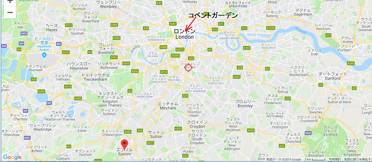
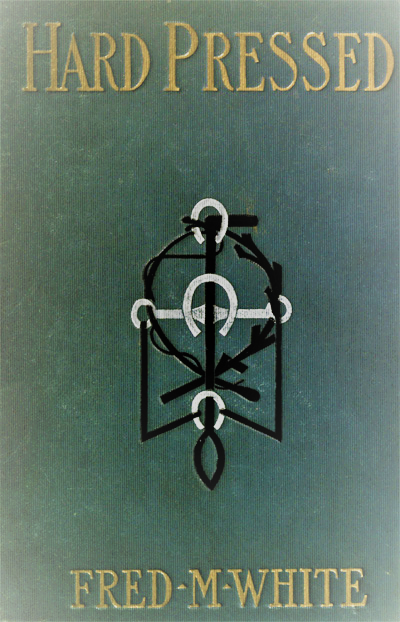

登場人物 備考
メイ・ヘアデール ジョージ卿の一人娘
ジョージ・ヘアデール メイの父、男爵
レイモンド・コプリ 南アのダイヤ成金
エアロン・フィリップス ハリーの昔なじみ
フォスタ コプリの仲間
ハリーフィールデン メイの幼友達
フィールド ハリーの別名
ジョーラッフル ハリーの老馬丁
マロウ 厩舎の調教師
メイソン ヘアデール家の執事
ラドリ フォスタの手下
ミドルボーン伯爵 落ちぶれた貴族
ブラックリ 金持ちの平民
カーディン大佐 退役軍人
アリス・カーディン 少佐の娘
リカビー 胴元
セルウィン 豪州人の金持ち
ジョリ会長 ジョリ商会の会長
ロナルドスン氏 ヌーク邸の住人
チャフィ 浮浪者
アブサラム会長 高利貸し
ブラウン 執行人、付け馬
アンドルー 警部
イバスレイ大尉 コプリの共犯者
第一章 今時 の山師
華やかな夜、国立オペラ劇場が床から天井まで満員となったのは、歌手メルバが新作を披露し、ロンドン中が聞きに集まったからだ。実に珍しいことに、着飾った聴衆が押しかけたのが二月。
女性は質素な身なりで、花以外装飾品をつけていなかったが、多くの女たちがメイ・ヘアデール嬢をうらやんだ。というのも、この
コプリは若くて小粋、血気盛んな英国人で、勝負師として知られ始め、噂ではとてつもない金持ちの
それはそうとして、コプリはロンドン三十キロ圏内に、
メイ・ヘアデール嬢は喜んでしかるべきだろうが、この種の楽しみはあまり機会がなかった。というのも、あけすけに言えば、父のジョージ・ヘアデール卿が貧しかったからだ。
父はなんとか体面を保っていたが、どうやって競馬
同卿には金持ちや大物の友人がいなかった。概して資本家を嫌っていたので、田舎連中の驚くまいか、レイモンド・コプリと親交を深めているじゃないか。理解できないが、訳知りが言うに、原因は娘のメイ・ヘアデール嬢にあり、コプリがぞっこん惚れたからだとか。
そうでなければ変だろう。メイ嬢はコプリのような男を引きつける女だった。上背があり、容姿端麗、とびきりかわいいが、冷たくて高慢、少しわがままだった。
メイはコプリのことをどう思っているか決して言わなかった。仲間に親友はいなかった。幸福と満足が得られるのは良馬がいて、一日中犬と遊べればよかった。よそよそしくて打ち解けないとの評判だが、その気になれば充分親しくなれるという者もいた。
だがこの二年間で大変身した。当時はひどいおてんばだったが、突然大人になり、まじめで気難しくなった。決して家族のもめ事がひどくなったせいじゃない。というのも実際、父の財産が悲惨なことになっているなんて知らないもの。
メイ嬢はコプリと親しい関係に見えたが、この一年コプリがヘアデールパークを足繁く訪れるけれど、メイ嬢の気に入られたとはとても思えなかった。コプリは利口な男ながら、よそよそしくされ、自尊心をくすぐられ、時が経つにつれ、ますますメイ・ヘアデール嬢に夢中になった。
コプリの出身階級は決して
ジョージ卿は誇り高いが、しばしば誇りも二の次にならざるを得ないのも、破産の危機が迫っていたからだ。メイが知ったら驚くだろうが、コプリはいつでも一家の頭越しに同家の屋敷を売り払って、都合良くできる立場にあった。
メイが片
「あら、ごめんなさい。聞き惚れていました。いまなんておっしゃいました？」
コプリが何か、もごもご言った。いやらしい目つきでメイのぴちぴち美貌を見た。妻同然だ。メイは容姿端麗な貴族だから、いずれコプリを宮殿へいざなえるだろうけど、まだ実現していなかった。
このあと一緒にカールトンホテルで夕食して、就寝前に運命を知る予定だが、実際もう分かっていた。一種の本能で、メイに嫌われていることは知っていた。だが
コプリが尋ねた。
「楽しんでいますか」
「ええ、そうでなけりゃ変人ですわ。滅多にないことですから」
「それはないでしょう？ もう分かっていると思うが、たった一言……」
不意に拍手喝采が起きたので、あとは聞こえなかったが、事実上言わんとすることはわかった。
コプリは笑みを浮かべて突っ立ち、確信している。メイはこの場を逃げて、一人になりたかった。どうにかコプリにこれ以上言わせず、ほっとした。有り難いことに、演目が終わり、観客が階段へ移動し始めた。
ここで見知らぬ男が駆け寄ってコプリの腕に触った。男を見てコプリの顔色が変わった。警戒している風だが、少しの変化だったのでメイだけしか分からなかった。あとでこの場面がよみがえることになる。
「ジョージ卿、ちょっと失礼します。玄関でお待ちいただけませんか。
ジョージ卿と娘は行き、男二人が残った。コプリが相手の男を見据えて、ぶっきらぼうに尋ねた。
「どうした？」
「知らせておこうと思って。俺は夕べ戻って来たばかりだが、今朝シティでばったりエアロン・フィリップスに会ったぜ」
「まさか」
「本当だ。残念ながら、今日まであんたの居場所が分からず、あちこち必死に探した。だが奴はここにいる。だから警告しに来た。いや、いや、間違いじゃないぜ」
「でもフォスタ、あり得ないぞ。お前も知ってる、奴は殺されたんだぞ」
「ああ、そう思っていたぜ。とにかく野郎が戻ってきたので逃げられない。もし
「買収しろ。五十万ポンドで済むだろ」
「まあ、それぐらいだぜ。安いもんだろ？ じっとしているより金を払った方がいいだろう、意味が分かるだろ。今ついてないけど結局、立場はそれほど悪くない。あんたは行きたいなら、どこへでも行けるし、億万長者か乞食か、誰も知らないぜ。噂じゃ、大金持ちで、頭も切れるし……」
「いまは中断できん。カールトンホテルで食事する予定だから、すっぽかせん」
フォスタがにやり。
「分かるぜ。相手のレディも想像がつく。じゃあ夜中の十二時半過ぎか、午前一時の十五分前に部屋に寄るから、じっくり話そう。分かるだろ、放置できないぜ」
第二章 邂逅
その間、ジョージ卿と娘はコプリをじっと待っていた。
コプリが戻ってきた時、道路は騒然となっていた。三人が歩道を進むも、コプリの自家用車が来ておらず、コプリはかろうじて動揺を隠す始末。行き違いがあったようで、辻馬車を拾った方が早いと提案。
「たぶん辻馬車を二台捕まえるのは難しいでしょう。一人は歩くしかありませんね」
ジョージ卿が応じた。
「私が歩きますよ。今日は運動していないから、歩けば食が進みます」
メイが少し警戒した。レイモンド・コプリと相乗りでカールトンホテルへ行くなんて思ってもいなかった。
「皆さん、通りの端まで歩いた方が良くありませんか。混雑を避ければ、辻馬車が拾えるかもしれません」
返事も待たず、メイが歩道を進んだ。コプリが強引に道を空けてくれた。路上は以前にも増して乗り物で混雑しているようだ。
そのとき女性の悲鳴が聞こえ、金属のぶつかる音がして一瞬で車が二台ひっくり返った。たちまち大混乱になり、五分後にメイは道路の反対側ではぐれてしまい、夜会服に外套の目立つ姿を
メイは怖くないし、警戒もしていない。向こう見ず、くそ度胸がある。最善策はこの暗い道をずっと、ヘイマーケットまで歩けばいい。
粛々と、平然と歩いて行くと、道がだんだん狭くなった。通りがかりの男が一人、二人、ちょっかいを出したが、相手にしなかった。
そのあと、何だか分からないうちに、一人の男がつきまとい、赤面するようなことを言い出した。酔っぱらいだからといって、立場が有利なわけじゃない。
誰かいないか辺りを見回したところ、有り難いことに背後から駆けつける靴音がした。次の瞬間見たのは、
「お役に立ててうれしいです。よろしければ通りの端までご一緒して、辻馬車を止めましょう。あなたが皆とはぐれたので、この男がつきまとったのです」
「そうですね。お礼の申しようもありません……」
ふと途中で言葉を止めたのは、助けてくれた男の顔が
「ハリー、ハリーじゃありませんか」
「そうだけど、ハハハ、実に意外な出会いじゃないか」
その
服はきちんと着ているが、よれよれ、くたびれている。でも、まぎれもなくハリーフィールデンの態度には、かつての上流階級の
「この二年間、どこにいらしたのですか」
ハリーフィールデンが肩をすくめて言った。
「複雑なんだ。最初、オーストラリアに行ったが、ここよりひどかった。アメリカは絶対に耐えられなかった。次に南アフリカへ行ったら、飢える羽目になった。一財産つかんだけど、信頼していた男に横領された。いまはこのままいけば、もっと貧乏になる。競馬繁殖場か厩舎に職を探している。これしか知らない」
メイは唇を震わせて聞いていた。もしメイの顔をレイモンド・コプリが見たら驚いただろう。同じように不安になっただろう。
「お気の毒に。ハリーはなんてばかなの。むだなことをして。由緒ある美しい邸宅のことを考えなさいよ」
「考えないことにしている。きみの言うとおり僕は馬鹿だったし、悪かった。僕の不幸は後見人がいなかったことだ。莫大な遺産を相続したとき、世間知らずの二十一歳だった。ありとあらゆる悪党とたかり屋がやってきて、されるがままだった。そう、昔の話だよ、メイ。馬鹿者とお金はすぐになくなったさ。でも有り難い、僕は恥になることは何もしていない。誰にも悪さをしていないし、借金はきっちり返した。今は古い家以外、何も残っていないし、売買価値がないから売ることもできない。さらに、思うところがあって、無理にクラブ会費を払ってきた。だからタッタスルズ競走馬・競売会社とニューマーケット競馬場へは出入り自由だが、そのためには野宿せざるを得ず、このときまで、失ったものの重大さが分からなかった。ああ、むかしはいい友達だったなあ、メイ」
メイがうなずいた。一瞬声が出なかった理由は二人が友達以上の間だったからだ。子供時代を一緒に育ち、一緒にダンスやテニスをし、犬と大いに走り回った。
今まで両者の間には何もなかったが、暗黙の了解で、二人はお互いを求めていた。
ハリーフィールデンは破産し、姿を消した。メイは何も言わなかったが、そのときからとてもおとなしくなり、過去の生き方と考えを捨てたように見えた。
「ハリー、あなたを忘れてはいません。何かしなければ。父に話してみます。そうだ、コプリ氏がいます。我が家の近くに豪邸を購入し、英国最大級の競馬厩舎を構えています。知らないでしょう。南アフリカの億万長者で、あなたがいなくなってからご近所にいらしたのよ」
「何人か億万長者に会ったことがある。南アでは英国人が思うほど連中を重視しない。コプリの名前は聞いたことがある。南アフリカのランドで見たコプリと同じかどうかはわからないが、それはないだろう。コプリが僕に何かしてくれるのか。きみには分からないだろうけど、求職して何も見つからないときは悲しいものだよ。ぜひ、働きたい。僕は若いし丈夫だし、まじめで信頼できるし、僕より馬のことを知っている者はいない。よかったらコプリに推薦してくれないか。もうプライドはない。捨てた。でも僕がきみの隣に来るのは嫌だろう。気にならないかい」
「まあ、ハリー、なんてことを言うの。あなたを助けたいという人達がいるのよ。でもそうさせなかった。さよならさえも言わずに姿を消して」
「ああ、僕の気持ちも分かってくれ。ところで明日、とにかく昔の家に行くつもりだ。必要なものがあるし、ジョーラッフルに会いたい。ジョーを雇ってくれてありがとう。しかも父上に馬を買い上げてもらい、とても感謝している。その中からダービー優勝馬が出てほしいよ」
「そうですね。一頭のブレナム号に大きな希望があります。この馬はミドルパーク杯で優勝して以来、出走していません。我が家の最高馬ですし、皆も同じ意見です。もしダービーで優勝しなかったら、我が家はどうなるかわかりません。あしたラッフルにマロウ厩舎に連れっていってもらいなさい、馬を見せてくれます。思い出すでしょうが、我が家の門からマロウ厩舎までわずか数百メートルです。マロウは調教師で、我が家向きで、費用も安いです。一日か二日、滞在してください。私達はあすの夜、行きますけど、あなたに会えないと父ががっかりします。ところで、いま……」
「ごめん。きみを引き留めて。さあ行こう、辻馬車を止めるから。もしあした昔の家に泊まれたら、きみに会いに行くよ。ああ、僕の馬がダービーに勝ったらジョージ卿はすごいね」
メイの唇に笑みがこぼれ、顔が赤くなり、やがてカールトンホテルへ向かった。ジョージ卿が不安げに待っていた。コプリは戸惑って、不機嫌に見えた。メイの説明を聞いた。当然、顔が紅潮し、目がきらきら輝いているのは、途中の出来事に興奮した為だとにらんだ。
第三章 動産
ハリーフィールデンはできれば旧宅へ行きたくなかったけど、代わりに昔の家に行き必要な書類を取ってくれる人がいなかった。再び旧宅のあるヘロンズダイク地区を見るのは嬉しいが、やはり古顔に会うのは恥ずかしい。おそらく歓迎するだろうけど、人生をしくじったし、
家以外何も残っていない。とっくに敷地は他人の手に渡った。厩舎は朽ちていた。庭園の周りにあった褐色の馬場は雑草やら牧草が生い茂っている。
驚いたことに身元がばれない。十数人が通り過ぎたが、ちらり見るだけだ。そういえば忘れていたなあ、二年間の苦行で美少年から激変し、厳しい屈強な男になり、年齢以上の風貌になっていた。口ひげも影響した。実際メイ・ヘアデールはすぐに分かったが、これは別だ。
ヘアデールパーク農場へ行って、馬を見たかった。ますます見たい理由は、全くのよそ者として通用しそうだからだ。可能性としてジョーラッフルにばれるかもしれないが、この老
今はジョージ卿の片腕になっており、前任の
フィールデンがほくそ笑んだのは、
「ハリー様、こんな日が来るとは思ってもいませんでした。
フィールデンの顔が一瞬厳しくなった。
「ジョー、大きくは間違っていない。そんなところだ。話せば長くなる。用事でここへ来たけど、喜んでいいものやら、悲しんでいいものやら、誰も僕に気づかない」
「メイお嬢様は会えばお喜びになります」
「ああ、もう会ったよ。偶然だった。あした行くと伝えたら、馬を見なさいと温かく招待してくれた。こんな機会は逃せない。ところでジョー、ジョージ卿はブレナム血統馬を大事にしているか。どうも厚遇していないな。ひとまとめ全部、駄馬として買ったと聞いている。その中にダービー馬も一頭いるとか。本当か、ジョー。それとも競馬関係でよく聞くほら話か」
ジョーラッフルが声をぐっと落として言った。
「ハリー様、ほら話ではありません。事故が無い限り今年のダービーは、この地方繁殖、地方調教の若駒で勝てます。ブレナム号のことです、運のいいことにこの若駒はあなた様のものです。一回だけ出走しましたが、我々以外に能力を知るものはいません。そのうち噂になって、賭け率は下がるでしょうが」
「嬉しい話だね。それを聞いてジョージ卿のためにも特に嬉しいよ。お前も僕も一家のことはよく知っている。ジョージ卿の金策のことも知っている。醜聞は避けたいし、ジョージ卿はお前に良くしてくれるし、利害関係は同じだよ」
「ハリー様、その通りです。ジョージ卿の為なら何でもします。もったいない主人です。でもジョージ卿はあなた様じゃないし、昔の大地主でもありません。おわかりでしょうが手前は十歳から七十歳近くまでフィールデン家に仕え、邸宅のあるヘロンズダイク地区を去るのはつらいことでした。あなた様が死んだと聞いた時は生きる目的を失いました。手前は感情を出す男じゃありませんが、今さっきあなた様を見たときはガキみたいに泣きたい気持ちでした。もう逃げないでください。腰を据えて対処してください。でも南アでは成功されたのでしょう？ 資金を持って戻られたのでしょう？ 聞くのが楽しみです」
「出て行ったときより悪いよ、ハハハ。大金をこの手でつかんだが、二人組の悪党に奪われた。連中はあとでとっちめてやる。ところで、馬を見せてくれないか。期待のブレナム号を見せてくれ」
ラッフルが農場を横切って、近くの厩舎に案内した。そこでマロウが零細馬主のために調教している。住居や馬場がどうだろうが、厩舎は見事だった。やっと着いたのが、ちょっと離れたところにあるぼろ小屋、ラッフルが毛布をはぐと大型栗毛が現れ、馬肌がサテンのように陽光に輝いた。まさにラッフルの顔は母親同然だ。光沢のある馬の首に触り、目を輝かせ、誇らしげに言った。
「どうです、ご覧なさい。あなた様は手前同様の目利きですから、これがダービー馬に全然見えなかったらおっしゃってください。両肩とひづめを見てください。本物の競争馬だし、子羊のようにおとなしい。いつかブレナム血統馬で大仕事ができると思っていましたが、この若駒と同じ馬はいません」
十五分後、二人は馬小屋をあとにした。フィールデンの見るところ、ラッフルはブレナム号を正当に評価している。これから三ヶ月間順調にいけば、ジョージ卿は大金を取り戻し、ヘアデール家はもう貧乏しないだろう。
フィールデンが大いに褒めたが、ラッフルの返事は素っ気なかった。陰気に考え込んでいる。何か後ろめたい視線をフィールデンに向けた。
「どうした？」
とフィールデンが
「馬鹿なことは隠しきれませんね。公園を歩きましょう、二人きりになって、お伝えしなければならないことがあります。もしあなた様がお帰りにならなければ、最善だったでしょうが、帰ってこられたので、最悪になったと、言わざるを得ません。あなた様が家出されたあとも、混乱状態でした。つまりウェザビー社からあなた様に送金が続いており、たぶんご存じないでしょうが、今年いっぱい一、二レースの資金があり、その中にダービーも含まれています。手前はこれを知っていたし、今お伝えしますけど、秘密にする理由がありました。あの年、つまりあなた様が突然家出された年、ダービーに数頭を出走登録されており、もちろんお金は充分足りていました。あなた様は逃走後、死んだと噂されましたが、何事も起こらず、手前も放置しておりました。ジョージ卿があなた様の馬を引き取り、このブレナム号が順調に育ち始めてから、二、三自問し始めました。ジョージ卿をだますのは簡単です。全く商売
「信じられない。乞食の僕が妙なことになって」
「はい、そういうことです。この素晴らしい幸運はあなた様のものです、乞食だろうがなかろうが」
第四章 誘惑
まだフィールデンは理解できなかった。想定外だったので、ジョーラッフルの言うことがつかめなかった。あまりにも
そしていま、逃げた時の状況がよみがえってきた。鮮やかに思い出したのはあの夜、初めて破産に直面し、万策尽きたと分かった時のこと。だって、ハリーフィールデンは何も知らずに窮地に陥ったのじゃない。状況が危なくなってきたことを知り、確実なレースに大金をかけたら、その馬が負けてしまった。
精算時には、債権者に全額支払う金がちょうどあった。思い起こせば、あの晩どれだけ長く紙と鉛筆を握りしめ、すべてを公正・正直に処理したことか。あの晩は夕食に友人たちがいたっけ。夜明け前にやっと、最後の書類を書き終え、一人、恐ろしい破産に直面したことを知った。
今ありありとすべてを思い出した。あのとき寝る気にならず、自室に上がり、しんと静まった邸宅で、風呂に入り、服を着替え、再び食堂へ降りて来たっけ。カーテンを引き、窓を開け、晴れやかな朝日を入れた、あの破産の日よ。
だが恥じることは何一つしていない。自分を卑下することもないし、いかなる友人や商人も、迅速さにかけてはこの僕に及ばない。こうして後はお抱え弁護士に任せ、静かに道化舞台から消えていった。
その時も今も、よく知らなかったこと、それは銀行に預けた口座から各種会費と競馬経費を支払い続けていること、その訳は行員への指示を取り消さなかったからだ。
明らかにジョーラッフルはブレナム号について真実を語っているが、そのほかの部分にはまだ謎がある。だがもし聞いたことが正しいとすれば、その瞬間俺は浮浪者や乞食でなく、今まで競馬場へ足を突っ込んだ人物の中でも、最高のうらやましい男になる。
最低見積もりでも五千ポンドの価値がある。あのブレナム号なら一日で、負債込み値段で売れる。旧宅に戻れて、栄光を取り戻せるかもしれない。快適に暮らせるかもしれないし、なんと言ってもジョージ・ヘアデール卿を訪問する資格ができて、娘の手を握れる立場になれよう。
こんな見方なら結構だが、別な側面もある。自分が復活すればジョージ卿は破産する。なお誘惑に惹かれ、数分間フィールデンは返事に窮した。
「厄介なことになったなあ、ラッフル」
ジョーラッフルが申し訳なさそうに頭をかいて言った。
「そうですね。不都合が分かりませんでした、あなた様が厩舎に来て、びっくり仰天するまでは。でもほかに何ができました？ あなた様は家出されて死んだと聞いたし、信じざるを得ませんでした。だって皆が微に入り細にわたり言うものだから、まるで我が子を失ったような気がしました。やがて都合良くジョージ卿の馬丁に収まり、必要な給金をいただきましたし、手前には、知る限り一人も親戚はいません。若駒のことは何も話しておりません。なにしろ当初大して考えていませんでしたから。その後、あなた様同様メイお嬢様が好きになり始めました。ある晩一服つけて座っている時、ある考えが浮かびました、いいですか、ほかに誰も知りませんし、事故が無い限り、この厩舎でダービー優勝馬がでます。メイお嬢様のためなら何でもします。誰にも分かりません。結局、何も悪いことをしておりません。そもそも、誰も文無しにならず、これ以上悪くなりません。ジョージ卿とあなた様が大金持ちになれぬという理由はありません。もちろん手前に異存はありません。この種のことは経験済みです。でも今はあなた様が生きておられるので事情が変わりました。まだ若駒の管理には手がかからないし、幸いにもジョージ卿の持ち馬ではありません。ジョージ卿は一山当てようとされていますが、あなた様のもうけをねたむような人ではありません。手前の言ったことをジョージ卿にお伝えください。もしジョージ卿が証明書を所望なら、そのとき提出します」
「このことは誰も知らないのか」
「誰も知りません。推測すらできません。もしあなた様が現れなかったら、秘密を墓まで持って行ったでしょう。前に言ったように、何ら害はないし、誰もこれ以上悪くなりませんから。でも戻られたからには、当然本当のことを言わねばなりません」
「ヘアデールお嬢様は何と言うかな？」
ラッフルの顔がぐっと青ざめた。
「そうですね、きっと嬉しくないでしょう。メイお嬢様のためなら何でもしますが、お嬢様はあなた様じゃないし、そこが違います。もちろんあなた様の思う通りなさって結構です。何も言わずジョージ卿に儲けさせてもかまいません。あなた様はもっと貧乏になるでしょう、よく考えずに行動なされば。あなた様の顔にそう書いてあり、目がそう言っています。でもそうなさらないでください。率直に言ったことをお許しください。あなた様が貧乏しているのを知りながらあの世で、のほほんと休めませんし、当然の権利で大金をつかむべきです。議論しても無駄です。ハリー様が真実をおっしゃらないなら、手前が言いましょう」
老人は奇妙に声を震わせながら話した。唇は震えているが、断固たる決意があり、疑いようがない。フィールデン以上に、ジョーラッフルが頑固なことを知る者はいない。脅しても駄目だし、いっそう意固地になるだけだ。フィールデンがなだめるように言った。
「お前は最善を尽くしてくれた。お前の言うとおり、この件は何ら悪くない。当然、その若駒はお前が管理して、大儲けしていい。でもお前の好きな表現を使えば、ジョー、お前の言ったことにはぐさりときたよ。考える時間をくれ。早まって、こんな儲け話を駄目にしたくない。しかもまだダービーまでたっぷり時間がある、三ヶ月あるのじゃないか。エプソンダービーの前に、何番か出走させるのか」
「ほんの二回です。そのとき目をつける者が何人かいるでしょう。どうか馬鹿なことはしないでください。まっとうなら、あなた様は十万ポンド手にします」
「ああ、急がないよ、ハハハ。心配するな。考える時間が必要だ。一日か二日ここにいるつもりだが、あしたロンドンへ戻る予定だ。身元がばれないのはもう気にならないし、旧宅でいくつか集めたいものもある。古い家具は捨ててないと思う。家具を売ってない理由は、僕の指示がないし、売らずとも債権者に払う金が充分あったからだ。ジョー、あすの朝寄るから、また会おう。今晩はジョージ卿と食事する。もし誰かが僕の名前を聞いたら、フィールドと答えてくれ。フィールデンに近いし、覚えやすいからだ。僕が激変したから、誰も旧家と結びつけないだろう。さて、行かなくては」
考え込んでフィールデンは旧宅へ向かった。誰にも気づかれずに嬉しい、仕事がやりやすいからだ。旧宅の鍵はポケットにある。旧宅は最後に見たとき同様だった。建物の管理人すらいない。ヘロンズダイク地区の敷地はとっくに他人の手に渡った。
著しい対比は、庭が放置され、道も草ぼうぼう状態なのに、かつてのフィールデン家がこの三百年間、いつでも来客を歓迎し、惜しみなくおもてなしをしてきたことだ。だがあの日々は永久に去り、もう二度と戻ってこないだろうが、ひょっとして……。フィールデンがつぶやいた。
「チャンスだ。何というすごい運だ。だがどうすればいい？ 沈黙以外に名誉の道はない」
第五章 疑惑
家には多くのものが残っており、フィールデンも忘れていた。あちこちに葉巻やタバコの箱があり、トランプ札が散らばり、グラスもそのままだ。世間の荒波で学び、身の周りに金目の物が相当あることが分かった。書斎はちりが積もり、薄暗く、荒れている風だが、手つかずだ。
これには驚いた。父がよく言っていたことだが、本には価値がある。おそらく誰も希少本を探そうなどと思わなかったのだろう、こんな賭け事しか興味のない男の家だもの。でもここにある本をロンドンの競売場へ持ち込めば、金になるだろう。昔のように楽天家じゃないが、控えめに見積もって、少なくとも千ポンドで売れそうだ。
昔の寝室へ上がり、ゆるゆるとズボンを着替えた。とにかくヘアデールパークではふさわしい姿を披露できる。照明が暗いから、おおっぴらに出席できる。
ヘアデール邸の明かりが優しく輝く中、私道を歩いた。正式な招待は受けていなかったが、メイ・ヘアデール嬢のお誘いがあったから、ジョージ卿もきっと歓迎してくれるだろう。
執事が妙に威張って扉を開け、名前を
「どちら様でございますか」
「ああ、ヘアデールお嬢様にフィールドが来たと伝えてくれ。待っておられるから……」
フィールデンが不意に口をつぐんだのはその時ヘアデール嬢がホールに来たからだ。ようこそと手をさしのべた。執事を席払いする前に、荷物を二階に上げるよう命じた。
「いらっしゃらないかと思いました。自尊心や、そんなばかげたものにご執心かと……」
「やましいね、ハハハ。実際ここへ来る勇気があるとは思っていなかった。誰も僕のことが分からなかった。ただしジョーラッフルは別だ。今日二十人ばかり知り合いが素通りした。かえって好都合だ、メイ。執事のメイソンすら僕をよそ者扱いだ」
「でも私は分かったわよ」
「ああ、分かったね。嬉しかったよ。だからといって幸せとは思わないけど。ロンドンで会ったとき感じたのは、二年有余で初めて、この世でひとりぼっちじゃなかったことだ。人は厳しく冷酷になる、いつも他人の中にいると、人に無関心になり、通りに死体があっても
それから一時間後、鏡台の前に立ち、夜会服の黒ネクタイを正している気分は複雑だった。周りを見渡せば、少年時代が鮮やかに思い出され、どの品々も懐かしい。客間へ行くと、ちょうどジョージ卿が待っておられた。
ここで少なくとも変化があった。周辺は大きく変わっていないが、ジョージ卿は老けて腰が曲がっていた。目の周りに心配じわができ、態度が痛々しいほど神経質だ。国中で最高の勝負師とか、恐れ知らずの騎手と言われた面影はない。
フィールデンは厳しい境遇で多くを学んだ。顔を見た途端に精神的な不安に直面していることが分かった。にもかかわらずジョージ卿の歓迎は心温かった。声の響きや、握手の力は、ちっとも誠実さを欠いていない。
「おお、ハリー君、望外の喜びだよ。君に会えてどんなに嬉しいことか分かるまい。君は我家以外、由緒ある家系の最後の生き残りだよ。一人ずつ去って行き、わしが子供時分に訪れた邸宅は昨今、新参者が住んでいる。若い人のほとんどはある種の山師だから、由緒ある家に感傷など無い。たぶんわしは古いのだろう。それに君もずいぶん変わったな。請け合うよ、全然分からなかったから。つい昨日のようだなあ、君が莫大な遺産家として我が家に現れ、きみ流に遺産を浪費し始めたっけ。いなくなってずいぶん寂しかったぞ。でも覆水盆に返らず。昔は願っていたなあ、君と娘のメイが……、おっと何を話していたんだっけ。あ、そうそうメイの話では本名で呼ばれたくないとかでフィールドと呼べとか。当然だな。さて、ここにいるなら数日泊まってくれ、そうすればわしができることを見つけてやる。わしの友人レイモンド・コプリ氏が近くに住んでおる。君が去ってから新しく来た人で、大金持ちで、厩舎を維持したいそうで任せられる信頼できる人物を探しておる。過去に一人か二人雇ったところ、横領されたそうだ。君なら推薦できる。君が愚かなことをして浪費したのは名前のせいだってことを忘れるなよ」
「ご親切にどうも。おっしゃる仕事は実に有り難いです。まさに僕が完璧にこなせる唯一の仕事です。ところでコプリ氏とは誰ですか、どこで金儲けされたのですか」
「南アフリカだと思うな。賭事の好きな億万長者で、正確にはいわゆる紳士じゃないが、いい奴だと思うよ。君との間だから言ってもかまわないが、わしは奴に恩義がある。わしは良くないこと続きで、もしコプリがいなかったら、どうやって切り抜けた分からん。とても寛大な男だから、メイがもっと親しくなってほしいのだが。なぜ嫌いかは分からん。きっと娘にもいいのだが……。おっと、とりとめの無いことを言って」
フィールデンが顔をそむけた。妙に胸が痛くなったが、説明できかねた。でもジョージ卿の言わんとすることは分かった。間違いなく、ジョージ卿はコプリに大恩があり、僕にこれ以上、メイと馬鹿なことをするなと警告している。娘に対する希望を正確に僕に告げている。
もちろんフィールデンは怒れない。昔メイとそんな機会もあったが、自堕落で失った。ほんのここ二十四時間で、メイに対する気持ちが分かった。あのとき愚かでなかったら、今頃金持ちになってメイが妻になっている。
夕食中は妙な気持にとらわれた。振り払おうとしたが虚しかった。概して楽しい夕食会じゃなかった。時々ジョージ卿がふさぎ込んで沈黙し、メイの陽気さも途切れがちだった。夜十時になり、ジョージ卿が客間へ移り、顔が少し赤く、目が真っ赤だ。メイが不安そうに父を見た。そうか、ここには別な家庭内秘密があるな。新たな一撃だ。僕の犯した独善や愚行はさて置いて。
扉ベルがチリンと鳴ってほっとしたとき、執事が入室し、コプリ氏がジョージ卿に話したい旨を告げた。ジョージ卿が不安げに命じた。
「通してくれ」
フィールデンがメイをちらと見た。顔がかすかに変化し、目が厳しく冷たくなった気がした。扉が開き、入ってきたコプリは態度がでかく、偉そうで、わがもの顔だ。その様子を見たフィールデンは不快になり、嫉妬以上に痛みを覚えた。コプリがメイの片手にお辞儀して、何かお世辞のようなことをつぶやいた時、フィールデンが一瞬のけぞった。
ジョージ卿が紹介した。
「こちらはハリーフィールド氏です。ハリー、君にコプリ氏を紹介しよう。コプリ、まさに君が探していた男だ。ハリーは私の古い友人の息子で、厩舎の仕事に詳しい」
コプリが半分軽蔑するような視線をフィールデンに投げ、握手の手を差し出さなかったので、フィールデンはこれ幸いと、こう言った。
「忘れ物をしたので、ちょっと失礼します。すぐ戻ってきます」
フィールデンは頭がくらくらして、書斎へ歩いて行った。自分を取り戻そうと必死に戦い、つぶやいた。
「驚いたなあ。あの野郎だ。有り難いことに奴は俺が分からない。まさかあのコプリとメイが。命に代えてもやらいでか」
第六章 併 せ馬
ハリーフィールデンは眠れぬ夜を過ごし、有り難いことに朝食時間となった。前夜、自分を抑えたことに感心した。無理矢理コプリに愛想良くしたけど、心の中では絞め殺したい衝動に駆られていた。
ヘアデールパークのような邸宅にコプリがいること自体、許せない。コプリの正体をジョージ卿が知ったら何と言うだろうか。おそらくジョージ卿にずけずけ
明らかにヘアデールパーク当主は悪党の言いなりになっている。たぶんコプリはジョージ卿に金を貸しており、援助の代償はメイ・ヘアデール嬢の支配だ。間違いなくメイに対するコプリのやり口だ。
冷徹な所有者然としたコプリの態度を見て、頭にかっと血が上り、指先がうずうずした。でも愛想笑いをせざるを得ず、本心は悪党の居座りに泣き叫んでいた。ハリーは会話をするほか無く、ジョージ卿は何が何でも義務を果たすだろう。
だがあえてハリーは言わなかった。自分を親切にしてくれる人物を破産させたくなかった。待機作戦がずっといい。でも何が起ころうと、メイはあの男と結婚させない。このままでは確実にジョージ卿は破産して、ヘアデールパークは他人の手に渡り、メイはあの男と結婚する。
コプリが週末まで来ないと言ったので安堵した。だから三日間、策を練る時間がある。
明るく鮮やかな二月の朝、凍てつく空気、ダイヤモンドダストが陽光にきらきら輝いている。メイ・ヘアデールも高揚している。メイの陽気さが伝染しないはずはない。フィールデンもひとまず、もめ事を脇に置いた。後で対処時間はあるだろうと思い、二人はダウンズ地区へ馬で出かけた。
午後も出かけて、暗くなって戻って来た。いい馬に乗ってフィールデンは昔の気分に戻った。並足や、駆け足を行い、憂鬱な気分が吹っ飛んだ。でも時々苦悩が両肩に重くのしかかった。
お茶の後、マロウ厩舎に立ち寄り、ラッフル爺さんと煙草を
「あの若駒を夜明けに試す予定です。ハリー様も見てくれませんか。周辺に一人か二人来るかもしれませんが、大して得るものは無いでしょう。独自の計画を仕掛けますので、あす以降、賭け率が少し変になっても驚かないように」
ラッフル爺さんは笑って話しながら、それ以上の説明を拒んだ。
「いや、気にしないでください。これ以上言えません。あした明るくなり次第来られたら、
フィールデンがうなずいた。翌朝、かなり早く起きると、冬のにぶい朝日が窓に射し、階段を降りて無人のホールへ行き、横扉から一人外へ出た。灰色の霧がダウンズ地区に立ちこめていたが、太陽の影響で晴れ始めた。
少し経ってフィールデンが見たのは、かすかに地平線に現れた一団と、毛布をかぶせた二頭の馬だった。その中にジョーラッフルの姿をとらえた。ハリエニシダの両壁に挟まれて、芝生の馬場が延び、この平坦な道に沿って、両馬が動き始めた。フィールデンが一団に近づくと、怪訝な目を向けられて面食らった。
「マロウさん、大丈夫です。こちらの紳士は手前の知り合いです。さてハリー様、ダウンズ地区の端に行って、標石のところで待ってください。そこが決勝点です。たぶん聞く必要も無いでしょうが、どっちが若駒で、どっちが古馬か。この薄明かりでも明白でしょう」
「当然だよ、フフフ」
フィールデンがすぐ臨時の決勝点へ急ぎ、双眼鏡を当てて、遠くの物体をじっと見つめた。やがてこっちの方へ駆けだして、姿がだんだん大きくなってきた。芝生を駆けるひづめの音が聞こえる。たちまちそばを駆け抜けて、古馬が数馬身早かった。驚いた、というのも全く違う結果を予想していたからだ。
マロウは何をやっているのか。この
そこで身をかがめていると、近くのどこからか声がする。あたりが静かなので声がはっきり聞こえ、フィールデンに筒抜けだ。説明できないけれど、本能のおもむくまま、厚い藪の後ろに身をかがめた。
一人の声には聞き覚えがあり、確信した。レイモンド・コプリに間違いない。もう一人は全く心当たりがなかった。
コプリが尋ねている。
「どういうことだ？」
相手が鼻白んで説明した。
「どういうことだと？ 見たとおりだぜ。今朝ここへ来いとあんたに言ったけど、その通りになった。併せ馬をやると小僧が教えてくれたんで、あんたに見せたかった。コプリ、あんたはいつも楽観過ぎるけど、これが事実だ。さて、あんたの友人ジョージ卿の若駒は勝てると思うか」
「わからんなあ。相当まともに鞭を入れていたようだった。だましはないようだなあ」
「だましだと。ジョージ卿と調教師にはそんな考えはないぜ。奴らは昔
「ここへ来て正解だったな。今日はお前に一つ借りができた。最悪なことに、あの馬に大金を賭けた、現金の投資先が分からん時だった。もし今の状況が露見すれば、このレイモンド・コプリ様、つまり南アの億万長者に問い合わせが殺到するだろうな。そうなればあの悪党のフィリプスも黙っちゃおらん。さあ、行こう、人に見つからないうちに。朝食後に……」
相手の男がじれて吠えた。
「朝食なんか、くそ食らえだ。重大な情報を手に入れたのに、朝食を心配してどうする？ 半時間の遅れがとんでもないことになるぜ。もしかしたら何十人と見ていたかもしれん」
「じゃあ、どう思う？」
「思う？ 誰が考えを聞きたい？ 今やるべきことは直ちに家に戻って、車で町へ飛ばすことだ。十時までに、こっちの言い値で胴元に売っ払おうぜ。その後たらふく朝食を食べればいい。コプリ、お前の一番悪いところだぜ。何事も待ちだから。さあ行こう」
声が遠ざかって聞こえなくなったので、フィールデンが腰を伸ばした。結果に幾分戸惑った。ラッフル爺さんとマロウが何を狙っているのか分からない。おそらく爺さんは都合のいいときに教えてくれるだろう。うまい策略を仕掛けた。また可能性としてコプリとその仲間が来ていると踏んでいる。さらにあり得るのは、対峙する悪党の程度も知っている。ラッフル爺さんが広々とした芝生を戻って来たので、フィールデンが急いで向かった。
ハリエニシダの塊を飛び越えると、左足が何か柔らかい包みのようなものに乗り上げて、がくんとつんのめった。はっと振り返ってみれば、つまずいたのは男、ハリエニシダ藪の根元に寝っ転がり、膝掛けにひっそりくるまっている。きっと予想屋だ、
「落ち着け。何も悪いことはしてねえ。俺だけじゃねえ、けさダウンズ地区で情報を集めたのは。頼む、構うな。おや、これはこれは、もしやフィールデンさんじゃ？」
ハリーは自分の名前を呼ばれてびっくり。一瞬、ひげぼうぼうの顔が誰だか分からなかった。知り合いのようだが、いつ、どこで会ったか結びつかない。
その時、にわかに思い出した。
「エアロン・フィリップスだ。天運が導いたか、はたまた偶然の一致か」
第七章 過去
エアロン・フィリップスは顔に笑みらしきものを浮かべて立っていた。背が低く、やせて、浅黒く外人風だが、鋭く光る青い瞳はアングロサクソンの血を示している。髪の生え際から、左のこめかみにかけて、赤く
「久しぶりでやす、フィールデンさん」
「頼むから、その名前を言うな。当分僕の名前はフィールドだぞ、忘れるな。ところで、どうやって帰国できた？ 死んだと思っていたけど」
フィリップスが額の傷を指して言った。
「死にかけやしたよ、フィールデンさん、失礼フィールドさん。絶対に悪党どもの失態じゃねえ。瀕死で放置され、子供に発見されなかったら草原で餓死しとった。あのままなら、危なかった。下手人はコプリとフォスタの野郎だ。あっしの仲間が植民地
小男が目をぎらつかせて語った。意味深にフィールデンを見て、ポケットで銅貨をじゃらつかせた。
「金を払わせるということか、ふふふ」
「その通りでやす、一発で当てやしたね。ところでご存じのように、南アには高額賞金をかけて、コプリを絞首刑か銃殺刑にしたい連中が何十人といやす。連中は警察に情報を提供しないし、そんなやり方はせん。でもあっしがおおっぴらに口を開けば、コプリ商社をつぶせる。もし奴らをケープタウンに移送できれば、短時間で証拠を集め、奴ら二名をブレークウォータ刑務所に十年閉じ込められる。そうでやす、それもできるが、それよりもいい方法がありやす。あっしはまるまる一年以上かけて帰国旅費を稼いだ。コプリの妙な噂を聞いたので、真相を確かめたくなった。ロンドンに着いて何を見たと思いやすか。奴は、シティに事務所を構え、豪華ホテルの特別室を借り切り、田舎に邸宅と競走馬の厩舎を購入してやがる。いいすか、フィールデンさん、いやフィールドさん、これを聞いて、しめたと、もみ手をしやしたよ。密かに考えた、こりゃコプリを南ア警察に引き渡すより都合がいい。奴がどうやって大金を稼いだかは知らねえが、ここで湯水のように金を使いまくり、しかも当地の男爵の娘と結婚しようとしていやがる」
フィールデンが怒りで真っ赤になった。フィリップスの放ったひと言でうろたえた。そうか世間はメイ・ヘアデールの名前をコプリともう結びつけているのか。そこまで広まっていたとは知らなかった。だってフィリップスは知りようがない。ただ無邪気に噂を言ってるだけだ。
「金をせしめるつもりか」
「あっしらの言葉を使っていいなら、コプリをかつあげしやす。悪党なんて怖くねえ。奴らもさすがに英国じゃ殺人はできんでしょ。あっしが帰国したことは奴らも知っているが、まだ会ってねえ。フォスタの呼び出しには乗るもんか、おあいにく様だ。フィールドさん、あっしを警察に売らんでくだせえ、起訴されて国外追放され、行くえ知れずになりまさあ。あっしの攻撃方法は全く異なりやす。しばらく奴の周りを嗅ぎ回っていやした。いいすか、コプリの金づるを探り当てれば、相当優位に立てやす。奴が正直に稼いだとは思えねえ。やりたくてもできねえ奴だ。
「例の
フィリップスが断言した。
「見つからねえ。あの
「かつて近くに住んでいた。昔ここいらは僕の財産だった。ジョージ卿の調教師が昔の僕の召使を雇った。今朝は併せ馬を見学に来た。逆にお前は何しに来た？」
フィリップスが青い瞳を輝かせて訊いた。
「少しがっかりされたんじゃないすか」
「何を知っている？」
「あ、いや、少なくともこの件で協力はできねえ。あんたが言いたくないなら、あっしも言いやせん。ラッフル爺さんは真っ正直な人間だが、やっぱ抜け目のない
「コプリの動きのことか」
「当たりでやす。コプリの金儲け方法を知りたかった。奴がつけ払いしているのを知っとるが、それはどうでもいい、金持ちには好きなだけ信用貸し、しやすから。でもコプリはさらに高望みして、莫大な現金を集めなければならん。さあ、どこから集めるか。どんな詐欺をするか。なぜ今朝のブレナム号の併せ馬を見たがったか。ところでフィールデンさん、ラッフル爺さんに厩務員を見張れと伝えたほうがいいよ。厩務員の誰かが裏切っていやす。今回は致命傷にならんがね、今朝コプリがガキみたいに騙されたから。おっと、要点から外れやした。コプリの金づるを言いやしょう。賭け金詐欺でやす、大掛かりで巧妙な仕掛けで、ずっと競馬場でやられていやす。あっしも誘われやしたが、どっぷりつかる前に断りやした。コプリに
「売ってないぞ。奴を嫌う理由があるし、奴の正体をばらしたいし、お嬢さんに……まあ、事態が進行しすぎないうちに……。助けが必要なら喜んで手を貸そう」
「そうこなくちゃ。さっそく午後のどこかで、半時間会えませんか。ここで立ち話はできねえ。おっと、ラッフル爺さんが来る」
フィールデンがしばらく考えた。南アの古い仲間に再会してうれしかった。いくつかの点で、このフィリップスは決して理想の友人じゃない。育ちはいい加減だが、それでも男の名誉らしきものはあり、誇りに足る自慢の一つが、友情と恩義を忘れないことだ。
おそらく緊急に英国を去る訳があったのだろう、たぶん競馬に関係している。とにかくフィリップスは競馬関係の裏情報に詳しく、知らない詐欺や仕掛けなど無いといってよい。
フィールデンが言った。
「ヘロンズダイク地区で会ってくれ。午後五時になる十五分前に路上に来てくれ。屋敷には誰もいない。ポケットにカギは持っているし、明かりはどこかで調達する」
フィリップスがハリエニシダの高垣に消えた。フィールデンが広い所へ出ると、ラッフル爺さんが探していた。爺さんは、してやったりの笑みを浮かべ、併せ馬の結果に全然戸惑っていない。
「どうした？ ダービー馬の調子は？」
ラッフル爺さんが片眼をつむって言った。
「大丈夫でさあ。併せ馬は大成功でした。ハリエニシダの中に誰かいたでしょう？」
「ああ、コプリ氏を見たよ」
「それに仲間も、フフフ。すべて承知しております。あなた様と示し合わせ、コプリ氏のために仕組みました。奴は絞首刑を免れた悪党です、何度も言います。いい時に帰国されました」
第八章 詐欺師
ラッフル爺さんは大股でしっかり歩きながらそれ以上言わなかった。どんな周到な計画があるのか、フィールデンには分かりかねた。少なくとも嬉しかったのはラッフル爺さんが満足し、慎重な仕掛けでコプリを負かそうとしていることだ。
「ラッフル、計画は明かさない方が賢明だ。けさ僕も情報をつかんだ。秘密を漏らした奴が厩舎にいるから、早く突き止めた方がいいぞ」
「知っております、ヘヘヘ。それも計画の一環です。奴らと連絡を取っている小僧がおり、監視しておりました。情報を故意に漏らしました。ハリー様、心配しないでください。手前は競馬界で五十年も無駄飯を食っておりません。常に正直に生きてきましたが、だからといって悪に目をつむるわけじゃありません」
「全くその通りだ。ところでコプリ氏について何を知っている？ この地域ではよそ者だろ？」
「そうかもしれませんが、手前は知っております。顔は忘れないたちでして、この二十五年、国中の競馬場に行きました。当初コプリ氏を見た時はジョージ卿の厩舎です。いやな野郎で、態度も気に入らず、自問しましたよ、どっかで前に見たことがあるなあ。不意に思い出したのが、リンカン競馬場で起きたちょっとした事件です。手に取るようにはっきり思い出します。そのとき分かりましたね、南アの億万長者コプリ氏は配当未払い事件を起こしたまさに同一人物、ずいぶん昔リンカン競馬場で半殺しにされたのを見ています。ここで一言、いわずにはいられません、だって大勢の成金を知っていますが、奴らは競馬場のクズですから。昔の仲間に聞き回ったら、予想通りでした。いまコプリ氏は金持ちかもしれませんが、史上最大のならず者ですよ。ジョージ卿も知るべきです。いいですか、ハリー様、かっかします、あの悪党がここで威張り散らし、メイお嬢様につきまとい、妻扱いするのですから。楽しみも食い物もまずくなる一方です。手前のような立場の男には阻止することが難しいとおわかりでしょう。でもあなた様なら違います」
フィールデンが悲しげに首を振った。実際、大違いだ。ますます厳しく自分を責めたのは、己の無頓着で非常識な愚行のために、今の状態に追い込まれたことだ。慎重に行動さえすれば、状況が変わっていただろうに。
ジョージ卿の所へ行ってコプリの陰口を言っても何の役にも立たない。疑いのない事実はジョージ卿がコプリに大借金をしており、コプリはこれを盾に、時期が来ればメイに結婚を迫る。
こんな痛々しい考えを真っ先に心に思いながら、邸宅に向かった。そんな考えを振り切れずにいると、沈んだ心をメイが察して、しょうも無いことを言った。
「事情は分かります。いらいらしているのは仕事がないからでしょう。でも長くありません。今夜コプリ氏と食事しますが、あなたも招待されました。けさロンドンのコプリ氏から電話があり、あなたもご指名でした。私が口添えすれば仕事は決まったも同然です。まもなく競馬界の重要な地位に指名されます、あとは腕次第です。せめてもの慰めは、身元が知られないことですね」
断る、と口まで出かかった。コプリのような男に仕えるのは本能的に嫌だ。でも一方では自分の武器でこの男と十二分に戦える。奴のおかげで人生を棒に振った。野郎と野郎の仲間がいなかったら、フィールデンとフィリップスは今頃金持ちだったろうに。
しかも、迅速に手を打たないと、死より怖い運命がメイを待っている。こんな時に背を向ければ、悲劇が早まるだけだし、何としても一番避けたい。敵のコプリは強力、やりたい放題だ。手段になんら節操もない。ジョージ卿は手足を縛られている。おそらく有利な仕事に就いた方がずっといい、コプリは同じ屋根の下に厳しい敵を飼っていることなど、少しも思わないだろうから。
その間にコプリと仲間のフォスタが町から帰ってきた。着いたのはシートンマナ地区にあるコプリの屋敷、ちょうど暗くなる前だった。連中は迅速だった。どうやらうまくやったらしい、というのも最新の夕刊によれば、あのブレナム号の賭け率がだんだん悪くなっている。
なぜだと、皆が噂している。ジョージ卿は皆によく知られ、尊敬されている。評判に一点の曇りもなく、業界に一定の影響力がある。人気を背景に、ある枠の賭け金が急騰しているけれども、どうやら無尽蔵の金が対抗馬に賭けられたようだ。
いずれにしろコプリは満足だった。既にブレナム号の対抗馬に数千ポンドぶち込んでいた。ブレナム号はほとんど勝ち目がない。
夕食前に書斎へ行くと、フォスタが待っていた。二人の着ている夜会服は派手に光り、宝石じゃらじゃらで、実に趣味がよくない。あと半時間は招待客が来ないので、コプリは手酌でソーダ割ブランデーをぐびぐび飲み、新品の葉巻を吸った。
コプリが訊いた。
「手紙は来てないか」
フォスタが答えた。
「重要なのは来てない。けさフィリップスに変わりが無いか、見に行ったぜ。宿におらず、明日まで帰らないとか。あんた、奴をどうするつもりだ？」
コプリが吠えた。
「地獄へ送ってやる」
「コプリよ、何でいつもそんなことを言うんだ？ 何で他人をそんなに見下すんだ？ あんたはとても金回りがいいようだし度胸もある。フィリップスなんか怖くないから危険じゃ無いと思っているようだ。だが俺は危険だと思う。もし奴が警視庁へ行って連中にたれ込んで、ケープタウンの警察に通報されたらあんたは逮捕されるぜ。いったん南アへ移送されたらどうなるか分かるだろ。万事休すだぜ」
「フォスタ、手前のことを考えろ」
「え、俺がどうだって？ 俺はあんたみたいに楽天的じゃないぜ。もちろんフィリップスは買収できるし、なんとか買収すればさしあたり、奴の口を封じて、あとで消す方法を考えつくさ。だがエアロン・フィリップスは狡猾な悪魔だし、昔の経験で稼ぎのうまみも知っている。あんたの部屋へ呼びつけても無駄だ。そんな罠にはかからないし、じっとしていない。もし奴に千ポンド渡したら、このまま続けられる……」
コプリが激怒して言った。
「ばか、どこから千ポンドひねり出すんだ？ つまり今この瞬間、どこから手に入るんだ？ ここを買ったが、精算は済んでない。何とか銀行から前借りして、色々購入し、内装などちょろい。べらぼうな預金をすれば、この国じゃ好きなだけ信用借りできる。食料品には金輪際払わないつもりだが、東部の商人は好きなだけつけにしてくれる。だが現実は、みんな俺にひいきにしてもらおうと、お互い大騒ぎしているけれど、俺は現金に困り果てている。もちろん平地競馬が本格的に始まれば、うまくいく。ツキがあれば十月のニューマーケット競馬で大金を山分けできるだろう。今週末、土曜のマーストパーク競馬で千ポンド稼ぐぞ。準備は済んだか。所定の場所に電話を据え付けたか。この策略の最大の弱点は、関係者に秘密を強いることだ」
「大丈夫ですぜ。全部所定の位置に据えた。おとといマーストパーク競馬場へ行った。家の工事は完了、作業員も退去した。電話は順調、試した。ホールから屋上へ配線を伸ばしたとき作業員がちょっと怪しんだんで、嘘をかまして、これは医者の命令で、病人に外気療法を勧められたと言ったぜ。でもコプリ、自前の工員を持つべきだぞ。もし秘密が漏れるとしたら、電話の延長工事をした作業員が確実に見ているから、当然一つや二つ疑念を持つだろう。部外者は少ないほどいいぜ」
「たぶんな。じゃあ、未完工事はないな。コベントガーデンのポストクラブで試したか」
「ああ、ポストクラブの隣部屋に陣取り、全体をラドリに監視させ、外に配置した。どこにも抜かりはない。千ポンド稼げないなんてあり得ない。実際はもっと大金を稼げる。でも安全側にとった方がいい。まず胴元に疑惑を持たれたら、大失敗する。でもこの計画が失敗しても、もう一つあるぜ」
コプリが笑いながらソーダ割ブランデーを飲み干した。煙草の吸い殻を火格子に投げた時、扉のベルが鳴った。
「さあ行こう。招待客が来た。客間へ移動してお客を迎えるとしよう。威厳を正そう、なくてもだ」
第九章 防戦
フィールデンはコプリがいけ好かなったけれども、コプリの接客態度に大きな失態は見られなかった。コプリは少し下品・尊大な態度で、なれなれしくメイ・ヘアデール嬢の手を取っている。
フォスタは多少引き下がっていた。人前では腹心の召使いを演じる。静かでおとなしいけれども、鋭い視線は相変わらずだ。夕食は豪華だった。いい趣味だとフィールデンも認めざるを得ない。話題はずっと活発で、ほとんど競馬関連だった。
夕食後、ビリヤード室へ移動し、気がつけば、フィールデンはジョージ卿とフォスタの三人でゲームにはまり、その間、メイ嬢とコプリは見学していた。しばらくすると、両人が退出し、その理由はコプリが最近入手した競馬写真をメイに見せたいからとか。
充分に写真を鑑賞したけれども、コプリは戻ろうとしなかった。メイが催促した。
「戻った方が良くありませんか」
コプリがいやらしい視線をメイに投げた。明らかに感情が顔に表れている。メイは相当肝が据わっているが、ちょっとそわそわして落ち着かなかった。
なぜこんなにこの男が嫌いなのかと自問した。受けた恩義は親切とか礼儀しか感じなかった。父を何度も助けたことも知っている。でも本能的にコプリは信用できない。厚かましい態度が嫌だし、何かぎらつく目に、尻込みした。いまやコプリが言わんとすることもほとんど分かる。
「ほかの連中は我々が少しの間いなくても気づかない。それに、キミに話すことがある。遠慮無く言うと、今晩キミを招待したのは目的があったからだ。何で俺をそんなに避けるんだ？」
「そうお？」
「実際そうだ。何度も気づいた。俺がヘアデールパークへたびたび来るわけを知るべきだ。俺は女たらしが好きじゃないし、絶対に女たらしでもない。俺の人生は荒っぽかった。上流階級の雰囲気なんてほとんど知らない。でも男なら、ぴったりの女に出会えば、誰だってぴんとくるし、まさに今がその時だ。必要な物は何でも与える。立派な邸宅も、すてきな地位も、欲しいものは何でも持てる。がさつな言い方だが、俺の率直な気持ちにほかならない」
ずいぶん率直だとメイも認めざるを得ない。コプリの厚かましさが消えた。本心で話している。根っからの詐欺師、悪党だが、メイにすっかり惚れてしまった。めとる為ならどんなことでもする覚悟だ。これが唯一の正直・誠実のかけら、口に出したのは、大人になって善悪が分かってこのかた以来だ。
メイは無言で震えて立っていた。気づかないことも無いが、コプリはずっと自分に敬意を払ってきた。コプリの言った意味も分かるし、コプリの熱望が不可能だと納得させるまで、厳しい戦いがあることも承知だ。コプリがまだ手の内をすべて見せないのも不安だった。
「感謝すべきでしょうね。ある意味、名誉なことですが、男性からそんなことを言われたのは初めてですし、混乱しています。でもご要望には添えません」
「なぜできないんだ？ キミがすぐ飛びつくとは期待しないし、そんな女じゃないことも知っている。だからこそ妻にしたいんだ。でもほかに誰もいないのなら……」
「いません、ほかには。これからもいないでしょう。慰めになればコプリさん、わたくし一生結婚しないでしょう」
こうメイが残念そうに誠実に言ったが、コプリには効かなかった。
「一生は長いぞ。それはともかく、ほかに誰もいないなら、続ける元気が出た。俺はしつこい男だから結局、好きにやる。一週間か二週間後にまた訊くから、考える時間はある……」
「だめ、だめ、考えるまでもありません。結婚できません。結婚しても充分お世話できないし、絶対結婚しない男性に、すべてを捧げられません。今日も来年も同じです。コプリさん、こんな話はもうしないでください。もしなさったら、他人扱いします」
メイの言葉には間違いなく本音があった。本来の勇気と覚悟が戻ってきた。コプリの視線にもひるまなかった。口をきっと結んでいる。いかなうぬぼれ、厚顔のコプリでも最後
「拒否するのか」
「拒否します。どういうつもり？ 紳士をお忘れでは？ そんなことをすればあなたは過激メロドラマの悪役だって、みんなが噂しますよ。あなたが敬意を払って妻になってほしいと言うから、私もできるだけ痛みの無いようにお断りしました。よろしかったらビリヤード室へ行かせて、二度とこんなことを言わないでください」
コプリがあざ笑い、取り乱した。愛情などすっ飛び、不条理な怒りに変わった。メイと知り合って以来、こんなに自分のものにしたい気になったことはない。魅力があるから、堂々と言った。女が知るべきは、俺がご主人様、そのご主人の最低限の望みに従うべきだ。
「分かっていないな。キミは片手を上げて選ぶだけだ。キミは間違っている。俺が信じられなければ、父上に訊いてみろ。俺の為に口利きすると言ったが、そうしなかったようだ。おそらく逃げたのだろう。だから俺の方から言わざるを得ない。現時点で、俺がヘアデールパークの持ち主だと知ってるか。キミが商売を知っているとは思わないが、キミのお父さんは裕福でないことは知っているだろ。お忘れでは？」
「知っております」
「結構。じゃあ、どこで競馬借金を調達していると思う？ 天から落ちてくるか。この十二ヶ月間、キミの父上は俺から三万ポンド借りた。いくら大金持ちでも、そんな大金はいつも掴めない。俺だって、キミのためじゃなかったら、そんな金は出さない。でも恋におぼれると、馬鹿なことや無駄遣いをするし、俺のような男も恋すれば、些細なことにこだわらない。さあ、俺の実力を考えてみよ。俺がひとこと言えば、キミはヘアデールパークにいられないよ。自慢しているんじゃない。明日にでも君たち親子を追い出すことができるんだぞ、そしたらどうなる？ 自分で考えろ。いま答える必要は無い。時間をかけていい」
メイは全身が震えた。半ば恐れ、半ば予測していたことだが、この一撃でまさにがくんと来て、コプリのおぞましい顔の表情から、意味がすべて分かった。かつて読んだ同類本は、他人事で説得力がなく、全く現実的じゃなかったが、今まさにその状況に直面している。
「そ、そんなことはしないでしょう」
「いや、やるよ。俺がどんな男か知らないな。冷酷な目でにらまれてはますます意固地になる。絶対妻にしてやる。これまでに俺が払った代償は知らないだろう。まさか一人の女のためにこんな馬鹿になるとは思いもしなかった。自分の愚かさを笑いたいけど、俺の生きがい、つまりこの世で唯一手に入れたいものになった。ああ、話しかけても無駄だ。一晩中苦しむから。キミが決めろ。キミの好きなように、あの邸宅から父上を追い出すなり、将来裕福で幸せに暮らすなり……」
「将来裕福で幸せですって。その言葉は
コプリが馬鹿にして言った。
「ああ、続けろ。吐き出せ。俺を靴底のゴミみたいに扱いやがって。一週間よく考えろ。父上に俺が今晩言ったことを伝えて、話し合え。俺よりうまく説得できるだろう。さて、ビリヤード室へ戻るぞ」
メイは冷静に向きを変えたけれど、目はかすみ、足元から世界が崩れる気がした。
第十章 告白
フィールデンはビリヤードを楽しんでいなかった。好きなゲームだし、最近めったにする機会がなかったけど、言い訳をして抜けたかった。理由は明らか、レイモンド・コプリがメイを部屋から連れ出したからだ。本能的に事情はピンとくるし、たとえ分からなくても、ジョージ卿をちらと見るだけで察しがつく。
なぜならジョージ卿が陽気でないからだ。黙り込み、落ち込んでいる。時々不安そうに扉の方を見ている。ジョージ卿のような地位と経歴のある人物がそんな態度を取れば、何か悪いことをして発覚をひどく恐れていると、言われかねない。
フィールデンにはもう時間がない。ジョージ卿とコプリが共謀してメイの幸せを壊している。かっかしてきた。ジョージ卿のような人物がそんな片棒を担ぐとは信じられない。少なくとも二人の男が全く無関心を装ってゲームをしている。その時、扉が開いてメイがはいってきた。
フィールデンが素早くちらっと目をやった。メイの顔は真っ青、ぞっとするほど固まっている。涙の跡もあるが、フィールデンの見るところ、絶望的じゃない。何があったにしろ、コプリは成功していない。顔で分かる。顔中に失敗と書いてある。
コプリは負けを言うような男じゃないし、無表情だが、フィールデンはその瞬間、とにかく今までうまくいっていないことが分かった。ジョージ卿も分かったようで、下をうつむき、すまなそうにコプリを見ていた。一瞬、気まずい沈黙があった。
メイが言った。
「もう遅いですから、おいとましませんか」
ジョージ卿がコプリの叱責を待つかのように上目遣いで、こう言った。
「まだ遅くない」
「遅いようですけど。それにわたくし大変疲れました。コプリ氏は許してくださると思います」
コプリがもごもご適当なことをつぶやいた。屈辱をごまかすことに慣れていない。
「行きたければどうぞ。ジョージ卿、明日の朝食後、また会いに来ます。重要なお話があります。たぶんフィールド氏もそこにいるんだろ。キミに仕事を頼めると思う。厩舎の総監督ができる男がほしい。ジョージ卿の話ではキミなら充分能力があるとか、だから全面的に信用しよう。ちょうど探していた人物のようだし、俺は競馬に興味があるけど、細部を見る時間が無い」
こんな不作法な話にお礼を言うのは気が重かったが、フィールデンは何とかお礼を述べた。妙に上気して、顔に表れていないことを願った。
やがて嬉しいことに、三人は四輪馬車に乗って、ヘアデールパークへ帰った。道中とても静かだった。というのもメイが一言も話さず、ジョージ卿も落ち着かなった。邸宅に着くと、メイがフィールデンに向き直り、こう言った。
「ハリー、ちょっと席を外します。父に話があります。そんなに時間はかかりません。書斎で待ってください。好きな本があると思います」
ジョージ卿が不安そうにホールに立ち、しぶしぶ足を引きずった。外套を脱ぐのも
「今晩は言うな。明日まで取っとけ」
メイは返事もせず客間へ行き、ジョージ卿も続き、そっと扉を閉めた。メイが暖炉の所へ行き、父に対峙した。顔はこわばり、唇がかすかに震え、前途は決して楽しくない。
「どこから始めましょう。とても不幸な立場になりました。母の死が残念でなりません、今ほど母がいてほしいと思ったことはありません。今晩の出来事は分かるでしょう。コプリ氏の話は知っているでしょう」
父が首を振った。無関係を装う様子があまりにも見え透いていたので、我が身の不幸にもかかわらず、メイは笑いを禁じ得なかった。
「ばればれです。お父様はひどい共犯者だ。今晩の出来事は完全に知っている。なぜコプリ氏に招待されたか知っていた。ご丁寧にも妻になれと言った。驚く振りをしないで。父さんの了解を得ていたのよ。事実、何回も話し合ったと言っていた」
「そ、それで、お前は受けたのか」
「そのことで話があります。一つ訊きます。たとえば二十年前と同じぐらい裕福で、屋敷も抵当にはいっていないとしましょう。その場合コプリ氏が義理の息子になりたいと言ったら、お父様はなんと言いますか。家から叩き出さない？ 息子にする理由がないもの。答えは実に明らかでしょう。野心がばかばかしいことをコプリ氏に悟らせるでしょう。二度と我が家に呼ばないでしょう。どう、そうじゃないの？」
ジョージ卿がそわそわして、答えた。
「時によりけりだ。事情が変わったことは分かるだろう。現実に、知り合いの貴婦人が裕福な男と結婚したが、その男の家系なんぞ全く誇れない。そんな例を何十人と思い出すぞ」
「ええ。何十例も思い出すし、そんな結婚を勧める親に対して激しい憤りを覚えます。結婚を大売出しにして。だってお父さんはミドルボーン伯爵と握手を拒否したじゃない、娘さんがブラックリと結婚すると聞いた時。それにもかかわらず、コプリ氏と共謀するなんて。おかげで私の幸せはめちゃめちゃよ」
「お、お前、拒否したのか」
「もちろん拒否したよ。言い過ぎないようにしたけど。でも、できないと知らせた。どんな条件でも妻にならないと伝えた。いつかこんなことになるだろうと思っていたが、事態を招いた自分を責めた。コプリ氏はひどく感情を害し、腹を立て、私を脅した。言うに事欠いて、良い返事をしないと、私達をヘアデールパークから追い出すと言った」
父が不安そうな青白い顔を娘に向けて、かすれ声で訊いた。
「コ、コプリがそう言ったのか」
「言ったとおりよ。もちろんばかげています。お父さんはコプリ氏のような男に支配されるほど馬鹿じゃないでしょう。知り合いになってもいいし、きっと仕事で役立ったでしょう。でもそのほかは……。なぜそんな目で見るの？ まさか、本当？」
父は返事に窮したようだ。やっと発した言葉は奔放過ぎるほどだった。
「本当だ。メイ、父をむやみに非難すべきじゃない。わしは最近ついていなかった。狙い目がすべて外れた。
「ああ、やめて。信じられない、そんな軽い女だと思っていたとは」
父が
「さあな。とにかく、残念だがハリーフィールデンには帰ってもらおう」
メイが顔を真っ赤にして言った。
「
「それじゃ、一巻の終わりだ。乞食になるぞ。やめてくれ。よく考えて、朝、いい返事を聞かせろ」
第十一章 興奮
たとえハリーフィールデンが同夜メイに再会を願っても無理だった。ジョージ卿が言うに、メイは疲れており書斎へ来れないから構わないでくれ。同卿は少し疲れたので、寝ると言う。フィールデンは不安のまま取り残され、朝になれば何か分かるだろうと希望を持った。
だが朝食に座ったメイをちらっと見ても、顔の表情からは何も読めなかった。やや物静かで態度も落ち着いている。そして一時間も経たず二人きりになった。
フィールデンが尋ねた。
「気分は良くなりましたか」
メイが率直に答えた。
「ええ、何でもありません。心配しただけです。あなたは土地っ子なので、私達がうまくいっていないとおわかりでしょう。若駒がダービーで負けたら恐ろしいことになります。ともかく五月末までどうやって暮らしていけるか分かりません。何て因果な商売なのでしょう。競馬に人生を賭けるなんて、何て愚かなんでしょう。でもヘアデール一族は常に
フィールデンも乗り気だ。しばらくメイの横を無言で歩き、メイの言葉を待った。そのうち秘密を話してくれるだろう。不意にメイが立ち止まり、視線を向けて言った。
「一つお聞きします。少しの間、私の立場になってください。仮に一家の名誉と財産があなたにゆだねられたとして、どっちかに決めなければなりません、つまりヘアデール一家が貧困と不名誉で邸宅を退去するか、そのまま居座るか、あなたならどうしますか」
「状況によるね」
「もちろんそうです、ハリー。そんなあやふやな返事は期待しません。本音を分ってください。決めるのは私です。私次第で、必要なお金を家族に提供し、うまく収めることができます。でも大きな代償が」
フィールデンが悲しげに言った。
「つまり、その代償はあなたでしょう」
「そうです。私自身が代償です。あなたなら分かるでしょう、男性の名前が」
フィールデンが小声で言った。
「とっくに分っていた。レイモンド・コプリが結婚を迫ったね。何度も本や新聞で読んだ昔話だ。コプリはきみの父上を支配して、妻にならないなら破滅させると脅した。僕は勘のいい方じゃないが、夕べ帰宅したとき確信した。きみがコプリを当然拒絶したので、卑怯な手を使った。きみを脅し、父上を味方にしたと告げた。今きみは行動をためらっているが、こう言ったね、誰にも私を同意させる強制力は絶対に無いし、そんな代償を払って家族の名誉は救えませんと。正しいよ、メイ。女性を買うなんて卑劣だ。さもしいし、恥ずべきことだ。僕がきみの幸せを気にかけているなんて誰も知らない。あの晩ロンドンで再会するまで、きみをどんなに気にしていたか自分でも分らなかった。その時初めて分かったよ、自分の愚かさが。もし僕が馬鹿でなかったら、今頃きみは僕の妻で、僕は喜んでジョージ卿の困難を救ったことだろうに。許してくれ」
メイが涙顔を向けて、衝動的に両手を伸ばすと、フィールデンが強く握った。ダウンズ地区の広い所に二人っきり。ほかに誰もいない。何が起こったか分からないうちに、咄嗟にフィールデンがメイを抱くと、メイは胸に顔を埋めて本気で泣いた。やることはただ一つ、キスして涙をぬぐい去り、笑顔を取り戻すことだ。フィールデンが
「ああ、やっちまった。僕もげす呼ばわりされる嫌な男になっちまった。誘惑に負けて、むちで打たれるべきだ。僕のような立場の男が、女性にキスするなんて。でも僕の気持ちは分かるね」
「ええ」
「しかしどうしたらいいんだろう。だが三ヶ月後、ブレナム号がダービーで勝ったら、がらりと変わるだろう。そうなればたぶんジョージ卿も僕を許して、きみのために善処なさるだろう。現状は問題を複雑にしているだけだ。きみはもちろん解放され、コプリに関する限り、何も強制力は無くなるだろう。でもメイ、きみにそんな勇気があるかな？ いま降りかかっている圧力が分かっていない、つまりヘアデールパークを追い出され、安宿に泊まらざるを得ない状況が……」
「ぜったい、いや。その話はやめて。考えられない」
フィールデンはもう言わなかった。そんなことを言うつもりはなかった。今日の苦労は今日で充分だ。複雑な気持ちで、一時間ばかりのち草原を横切ってシートンマナ地区へ向かった。
コプリが待っていた。堅い事務的な態度だ。顔には不快な表情がある。書斎は煙草と酒の強力な臭いが満ちていた。少し顔が赤いことから、既にソーダ割ブランデーを一杯以上飲んでいる。
フィールデンは顔に表情が出ていないことを願い、胸中を少しも出さないようにした。こんな男がメイのような女性と結婚するとは。根っからの嘘つき、弱い者いじめで、良心や分別、感情のない男だ。それどころかそれ以上の悪党だってことはよく知っている。
一瞬口から出かかって、話がなかったことにして、コプリの申し出を断ろうとした。だが冷静な考えが勝った。できるだけコプリの近くにいる方がいいし、現場にいて、危害を及ぼすとき動く方がいい。そのうえ、ある程度エアロン・フィリップスと連携しているから、悪事をたくらめば、察知できるかもしれない。むしろいいことだろう、コプリの所へ行き、悪事の証拠を掴み、黙って言うことを聞かせ、メイ嬢への迫害を止められればいい。
コプリが素っ気なく言った。
「おう来たか。環境を整えたぞ。君に厩舎の総括をやってほしい。前任者は年俸四百ポンドで邸宅を切り盛りした。君にも同額を提供しよう。すべて君に任せる。夕べ言ったように俺の厩舎は単なる副業だから煩わされたくない。来週のマーストパーク競馬から始めてくれ。二日間の競馬で俺の厩舎からも出走するし、俺も騎乗する。要領は知ってるな」
「お任せください」
「よろしい。これで決まりだ。家政婦に言って部屋をもらえ。食事はまかない付きだ。馬は好きなように調教しろ。これで失礼するが、たまった仕事をかたづけてから、午後六時に車で町へ行く。以上だ、それじゃ」
フィールデンは引き下がり、喜んでいいものやら分かりかねた。一時間ばかり厩舎へ行き、
やがて解放され、ヘアデールパークへ行き、私物を全部引き取った。ダウンズ地区を横切り、広い直線芝生を歩けば、そこはブレナム号を併せ馬した場所だった。坂を駆け下りていると、エアロン・フィリップスにばったり出会った。
「探してやした。あっしは再会後ぐずっちゃいねえ。策略を掴み始めやした。まもなく奴らをびっくりさせてやります。ハリーさんは来週の金、土の二日間マーストパーク競馬に行かれないと思いやすが、もし行けたら、驚くものを見せてやりやす」
「たまたま、そこへ行く予定がある。コプリ氏から総監督に任命された。ジョージ卿にお礼を言わねばならない。フィリップス、君の想像通り、楽しい仕事じゃない。でも受諾する緊急理由がある。マーストパーク競馬に一頭か二頭出走させるから、ついて行かねばならない。ところで、何を掴んだ？」
エアロン・フィリップスの顔が輝いた。
「なんて運がいい。そういうことなら、これ以上引き留めねえ。馬場で会いやしょう、その時が我々の出番でやす」
第十二章 危難
コプリはそんなに忙しくないようで、フィールデンを不作法に退去させた時の話と違う。新品葉巻に火をつけ、不機嫌に座り、大量のつけ請求書を見おろした。すぐ脇に押しやり、スポーツマン紙を読み始めるや、戸惑った渋い表情で、独り言。
「どうしても分からんなあ。併せ馬は公明正大に行われたし、小僧の情報が信頼できない訳もない。だがあの若駒の掛け率は前より堅くなっている。こんな例は思い出せん。対抗馬に賭けた方が鉄板のような気がしたので、俺も対抗馬に一万ポンド賭けたが、けさのこの新聞じゃ、ブレナム号は前より堅い。大衆がいくら馬鹿でも予想は予想、俺のじゃない。でも面白くない。フォスタがけさ何か掴んだかな」
フォスタはすぐやってきた。いつもの笑顔がなく、困惑して不安なようだ。
「会いたかったぞ、フォスタ。どうしてもこの掛けが分からん。あのブレナム号にまた大金が賭けられた。我々が胴元の目の前で売ったから、人気が落ちるはずなのに」
「俺も新聞を見たぜ。いま小僧を呼んでいる。小僧が
一時間かそこら二人は座って、事態を話し合った。その時、やってきたのが小柄な若い男、びくついており、ひげを剃り、いかにも長い厩舎暮らしを思わせた。日焼けした小顔が不安で真っ青になり、地面をじっと見て突っ立ち、コプリの言葉を待っていた。
「どういうこっだ」
とコプリが乱暴に訊くと、
「おいらは知らねえ。訳も知らねえ。ラッフル爺はひでえ野郎だ。あの朝、併せ馬は公明正大にやったけど、今になって分かったのはあのブレナム号が別物だった。旦那、おいらに訳を聞いても、おいらを責めても無駄だし、責めれば責めるほど混乱するだけだ。一言二言ラッフル爺と馬丁長の会話を聞いたが、訳が分かんねえ。うちの厩舎にはあのブレナム号と瓜二つの馬が二、三頭いるんだ。同じ血統だよ。ラッフル爺が何を
コプリとフォスタが見合った。小僧を責めても無駄だ。小僧は共謀していないし、明らかに本当のことを
小僧がコプリに買収されていることは知らないし、ましてやあの早朝の併せ馬をコプリとフォスタが見ていたことも知るまい。ひょっとしてラッフル爺の騙したい奴があの場にいたのか。とにかく、そうだろうが、なかろうが、ラッフル爺はコプリとフォスタをはめた。
最初の併せ馬を見たあと、二人は対抗馬に大金を賭けたが、最終的にはジョージ卿の馬がダービーを制する可能性が高い。小僧を退去させるとき、堅く口止めして、しっかり見張って最新状況を知らせろと命じた。そのあと二人は話し合い、解決方法を探った。コプリがつぶやいた。
「ちょっと窮地だな。こんなはずじゃなかった。
フォスタがいらついて尋ねた。
「それがどうした？ わざとだろうがなかろうが、我々を
「出走を止められなければ、だろ」
フォスタがテーブル越しにコプリをじっと見て意味ありげに言った。
「そいつは悪かねえぜ。もしあのブレナム号がダービーに出なければ、少なくとも一万ポンドが転がり込む。今日あの馬の賭け率はいいから、あの馬を賭けから排除しないかぎり、俺達は更に二万ポンド突っ込めないぜ。大衆が一頭の馬にこんなに熱くなった例は思い出せない。もちろん主催者は全く注意しない。もしもだ、誰にも知られずに、確実にあの馬の出走を取りやめたらどうだ。その場合、対抗馬に十万ポンドを賭ければ、確実にがっぽり金が入るのは時間の問題だぜ。マーストパーク競馬場の策略なんぞ些細なもんだ」
コプリが陰険な目を少しぎらつかせて、皮肉った。
「ああ、できればな。だが、そんな時代は終わった。馬に麻酔剤を飲ませたり、脚を壊したり、厩務員を抱き込んだり、騎手を買収したりは、もうできない。昔ならうまくいった。競馬大会も少なかったし、間隔があったし、専門誌もなかったし、猫がネズミを見張るように監視されていなかった。フォスタ、そんな馬鹿な夢を見ても無駄だ。ジョージ卿は貧乏だが、そんな話は聞く耳を持たないだろう」
「違うぜ。男なら誰だって自分の価値ってものがあるぜ。その逆は見たことがない。とにかくおめえさんは馬鹿だぜ、こんな所まで来て女に惑わされよって。でも金に替える方法が見え始めたぜ。あの女はおめえさんと結婚しないと思うな。絶対だぜ」
コプリがこめかみに青筋を浮き立たせ、すごんだ。
「黙れ、言い過ぎだ。聞く耳持たん。お前に関係ない。ほかにいい案があれば喜んで聞くが、ヘアデール嬢の名前は言うな」
「分かったぜ。だがこの場合は絡んでいる。ヘアデール嬢を手に入れるために父親に金を貸しているが、その金は俺達の物、実際、喉から手が出るほど欲しい。いま取り返す番、いやそれ以上だ。ジョージ卿は返済不能だ。借金が百万にもなりかねない。娘のヘアデール嬢を強制結婚させられないことも知っている。怒るな。やむを得ず名前を出したが、言わざるを得ん。娘は最後まで抵抗するだろうし、必要とあればヘアデールパークを出て行くだろう。だがジョージ卿はそのうちかんしゃくを起こす。一族の誇りにどっぷりだ。奴は邸宅に
コプリがフォスタを
「何の話だ？ 何をたくらんどる？ ジョージ卿がどあほうと思うか。出走を取り消すと思うか、奴も賭けている、すかんぴんになるんだぞ」
「もち、そうだ。高額を賭けていると思うが、千ポンド以上は賭けていないだろ。一方じゃ、あんたに少なくとも四万ポンド借りている。もし、すぐ返せと言ったらどうだ。もし返せない場合、邸宅から追い出して乞食にすると言ったらどうだ。もし同意したら、借金を帳消しにした上、そうだなあ一万ポンド、出走取り消し後にやると言ったらどうだ。今そう言う必要は無い。一ヶ月待てばいい。それから圧力をかければいい。奴は拒絶して、渋り、出て行けと言うだろうが、最後には折れるだろう。もし折れなければ、俺がアホで人情が分かってないってことだ。もちろん、簡単、安全、誰も知らない。ある日の調教で馬の脚が止まり、風邪を引いたことにすれば、この馬に賭けた馬鹿なお客が知らない間に、新聞が本命馬だとずっとはやし立てているぜ。おめえさんは完全に賭けを牛耳れる。そのあと国中の胴元から金をせしめて、何のリスクなしに大金持ちになれる。すげえ。考えるだけで震えるぜ。うまくいったら、五十万ポンドを山分けだ。さあ、どう思う？ うまくないか」
コプリがテーブルを
「ちくしょうめ、やるぞ、フォスタ」
第十三章 将校と紳士
ほとんどが知っているように、競馬の追っかけが大勢おり、連中のしのぎは控えめに言っても特殊だ。この
そのなかで居場所を得たのがエアロン・フィリップスだ。職業を聞かれれば、おそらくプロの競馬
おそらくフィリップスは勝負師じゃないと言われたら怒って、勝負師そのものだと強弁するだろう。物心つく頃から競馬に関係してきたが、一度も馬と暮らしたことはないし、馬のいい所も分からないだろう。
でもそれなりに馬は好きだ。長年、馬のことを聞いていたし、父の酒場の常連が競馬の追っかけや、王侯スポーツ関係者だったし。暮らした所も名門競馬場の近辺で、つねに競馬の大事件に関心があった。巧妙な詐欺事件など、詳細をそらんじてないのは一つとしてなかった。
南ア出国前の数年間、競馬場をあちこち巡った。決して故意に不正はしなかったが、いろんな手口を使い、常に懐に金があり、いつもいい服を着ていた。母親が有力なジプシー出身だったので、とても優位な立場にあった。出会ったジプシーと過ごさない日はなく、何度もこの儀礼で得をした。もし有益で信頼できる情報が欲しい場合、特に探偵という巧妙な方法なら、誰に相談したらいいかよく知っていた。
変に思われるかもしれないが、競馬関連の大がかりな詐欺が、卑しい追っかけの間でささやかれないものは無く、しかも警察の耳に入るずっと前に聞ける。何回もフィリップスはそんな話を聞いたし、もしジョッキークラブの大物が聞いたら驚くだろう。そんな方法で不正の糸口を掴み、それがまもなく衝撃的に発覚しそうだった。さらにフィリップスがほくそ笑んだのは、不正の首謀者が旧敵レイモンド・コプリとフォスタだと分かったからだ。粘り強く証拠を集め、ついに確実に追い詰めた。
推測だが、フィリップスは既に連中のしっぽを掴んでいる。だがつらい逆境を経験して、忍耐を学んだので、ただ復讐するだけで、金儲けを手放すつもりはない。いつでもコプリのぱんぱんに膨らんだ風船を突き破り、捕まえて投獄できるけれども、時間を食うし、南アに長期滞在を余儀なくされるし、敵に勝ったという以外に何ら金銭的見返りはない。いま、コプリとフォスタを破滅させ、同時に自分の懐も潤う方法が見え始めた。
フィリップスに独自の誇りが無いわけじゃない。昔フィールデンに助けられたことは忘れていない。フィールデンのことはよく知っており、聞いたら驚くだろう。たとえば、メイ嬢のことも承知済みだ。
コプリがぞっこん惚れて、妻にするためならどんなことでもやりかねない等。またラッフル爺さんの心情もよく分かり、にやり。そしていま第一弾を発射するときが来た。
フィリップスは、二月の金曜晴れの日、宿を出てラッセル・スクウェアへ向かった。いつもより慎重に服を選び、地味な上下に灰色の外套と中折れ帽をかぶった。きちんと手袋をして靴もぴかぴか、白ネクタイの馬蹄形ピン以外競馬関連を思わせるものはない。
やがてケリー通りへ曲がり、とある宿の扉を叩きカーディン少佐を尋ねた。少佐は朝食を終えたばかり、フィリップス氏と面会予定だった。
安宿の部屋には、くたびれたアクスミンスター
テーブルの一端に座った赤ら顔の太った男は、灰色の口ひげを見事に整えている。典型的な退役軍人、開けっぴろげで、押しが強く、灰色の瞳がうっすら赤い。明らかに上流階級との交際に慣れており、自慢の種だ。おそらく高級クラブの会員だろうが、収支を合わせるのも大変だろうと思わせた。
朝食に座っているもう一人はとびきりの美女、上品で魅力的にもかかわらず、とても地味な黒服だった。フィリップスがはいってきたとき、談笑中だった。軍人の父に尊敬と愛情を持っているようで、父の言葉に聞き入っていた。少佐が食台から顔を上げ、愛想よくうなずいて言った。
「フィリップス君、時間通りだな。わしの方が少し遅くなってすまん。アリス、こちらがフィリップス氏だ。夕べ話したように有名な新聞記者だ。同じ新聞で知り合った」
少佐がそう言いながらフィリップスに目配せすると、フィリップスが笑った。少佐が何を企んでいるか、さっぱり分からない。
「ええ、少佐とあっしは古い友人でやす」
女が愛想笑いした。ちょっと恥ずかしがり屋で、フィリップスの印象では、友人が無く、若い身空の大部分を、わがままな道楽父親の犠牲になっているようだ。やがて立ち上がり、離席を言い、男二人だけになった。女が立ち去った途端、少佐が部屋を横切り、ブランデー瓶を取り出し、手酌でグビグビ飲んだ。フィリップスは素っ気なく断った。
少佐が言った。
「夕べ古い友達に会ったよ。申し訳ない、ちょっと……、いや知っとるだろ……」
「ええ、知ってやす。でもどうしてあんな嘘を？ あっしらは記者と関係ねえでしょ？」
「フィリップス君、嘘も方便だよ、わしは老いぼれ悪党だが、娘は知らん。生き様を絶対に知られたくない。娘は気立てもいいし、わしを信じておるし、最高教育も受けさせた。この世で唯一のいとしい娘だ。落ちぶれるのを防いでくれる唯一の存在だ。わしが死んだら、親戚の誰かが面倒を見てくれるだろう。今まで娘がわしに近づかないように、親戚が慎重に配慮してくれた。非難はしない。わしは記者だと言って、余生を暮らしておる。君に見限られないか心配だ。これが言いたかったし、わしの秘密も守ってくれ。ところで、何の用だ？ まあ座れ」
「小金をそれなりに差し上げようと思いやして。夕べから追っているものを教えやしょう。あなたはポストクラブの会員だそうで」
「そうだ。苦労してクラブ会員名簿に載せておる。頻繁にクラブへ行ってるわけじゃない。金銭的余裕がないからな。本物を見たいという若者を時々昼食に連れて行くけど、もちろんおごるという条件付きだ」
「ぜひあっしを連れて行ってくださいまし。今日そこで昼食をして、胴元のリカビー氏を紹介してくだせえ。簡単なことでやす。段取りをして、昼食後半時間リカビー氏と話ができたら、十ポンド差し上げた上に、昼食代を持ちやす。あなたには何の危険も、責任もねえでやす」
少佐がじっくり考えて、やがて尋ねた。
「何をたくらんどる？」
「あなたには関係ねえです。約束しやすが、悪いことは何も
少佐がにやり。こんなとき十ポンドなんて滅多にないことだし、フィリップスの提案は棚ぼた同然だ。だが少佐は戦略上がつがつ食いつかない。
「そうだなあ、世話しない理由はないな。あとで紹介するよ」
「有り難いでやす。これ以上引き留めねえ。午後一時半にクラブで会いやしょう」
第十四章 ポストクラブ
ロンドンに高級な賭けクラブは数あれど、ポストクラブほど優雅で最新な所はない。この種の施設の常として、
電信機による賭けが盛んに行われており、競馬開催中の午後は主要な胴元が
昼食後、クラブは静かになるのが常だ。マーストパーク競馬大会の初日、せいぜい六人ほどの競馬狂が食堂にいた。扉近くの小テーブルに少佐と招待客のフィリップスが座り、凝った昼食を食べながら、付属の極上銘柄シャンパンを褒めていた。
少佐はにこやかだ。これこそ心の気晴らし、昼食代は相手持ちだし、実に贅沢だ。給仕に話す様子も帝王並み。態度は穏やかで、優雅、何より自覚していたのは五ポンド紙幣がポケットにはいっており、フィリップスが食事代に与えたものだ。しばらく座っていると、扉が勢いよく開いて、大男があり得ないチョッキを着て、食堂に入ってきた。
でっぷり太り、赤ら顔の男は裕福そうで、金にがめつそうだ。賭け事の世界でほとんどの人が知っており、目立つチョッキ姿の巨漢、まさしくリカビー氏にほかならず、胴元会社の社長、賭け金無制限を
若い頃のリカビー氏、またのあだ名リックは一介の肉屋だった。肉屋を失敗した主な原因は仕事をせず、競馬に入り浸り、
すぐ見つけた相棒は長年こすい会計士をしていた男だ。そして今や、ストランド地区に宮殿のような豪華な事務所を構え、そこに大勢の事務員を雇い、昼夜、電話注文を受けている。リカビーは
少佐に会釈する態度には尊大な親しみと、こびるような気配りがあった。カーディン少佐は時々この男を使った。少佐の親類筋が貴族であり、リカビー氏は上流階級を深く尊敬していた。通り過ぎようとしたとき、フィリップスの合図で、少佐が引き留めた。
「リカビー、一緒に昼飯をどうだ。この新名柄のシャンパンを飲んでみろ。ウエイター、リカビー氏に席を作れ、もう一本もってこい、いや、それじゃなくマグナム
リカビーが平身低頭して言った。
「知り合いになれて光栄でございます。私どもに何かご用がございましたら？」
「ああ、ある。あっしも、むかし競馬を追っかけていやした、出国前だけど。あっしから見て、南アにもいい所がありやす。でも英国ほどの大レースはねえな。シーズン終了までに賭けの一つ、二つはやろうと思いやす。でもここじゃ賭けはできんでしょ？」
「会員じゃないとできないな。胴元はその種のことに慎重なんだ。警察のことも考えねばならん。でも、たぶんリカビーなら喜んで世話してくれるだろう」
「お任せください。お好きなだけどうぞ。少佐のご紹介で十分でございます。電信でも電話でも常時ご注文を承ります」
次第に会話は世間話に変わっていった。昼食が終わり、葉巻やコーヒが喫煙室に運ばれた。フィリップスの見るところ、リカビーは重要な情報の宝庫だ。含みのある質問をするからだ。シャンパンとブランデーの影響でリカビーが
「詐欺ですよ、あなた。きりがありませんな。毎年十件ぐらい出くわしますが、大衆は知りません。なぜ告訴しないかって？ だって何にもならないし、警察もいい顔をしませんから。さらに、手口を大衆に教える必要もありません、使いかねませんから。東部のクラブに巣くう連中で一人や二人、大物の名前を教えることもできますが、我々が口を割ったところで、びくともしません。何の肥やしになりますか。盗人に追い銭でしょう？」
「じゃあ、告発したことはないんでやんすか」
「ああ、めったに。でもなかにはすっかり
「ひとつお聞きしやすが、お客の中でマーストパーク競馬で大もうけしたやつを知りやせんか」
リカビーが驚いて、フィリップスを見上げて言った。
「おっと、私よりご存じのようですね。この種の調査に慣れておられるようで。そういえば今思い出しましたが、マーストパーク競馬の最終レースで、セルウィンが奴らに大金を巻き上げられたと聞きました。何かご存じでしたら、フィリップスさんがおっしゃるべきだと思いますが」
「いや、そこまでは言いたくねえ。たまたま思いついたことで、南アにいるとき読んだ本を思い出しただけでやす。偶然の一致じゃねえすか」
「そうは思いません。おっしゃるように、一連の賭けでセルウィンはいつも損をしており、その賭けは発馬後じゃないと賭けさせないのですから」
「異常でやんす。でも偶然の一致以上じゃねえでしょう。ところであなたも多額の賭けをなさると思いやすが」
「フィリップスさん、それがクラブの方針でございます。我々は賭けが無いと生活できません。でも、公式発馬後に賭けることはしません」
この頃になると喫煙室が急にいっぱいになった。四〇、六〇人の男どもが集まり、午後のレース結果を聞いたり、締め切りぎりぎりに賭けたりした。どうやらフィリップスは話に満足した様子で、一角で煙草を吸いながら、勝負師達を鋭い目で監視していた。
ちらと目をやれば、天気が少し変わり、雲が覆い、小雪が降ってきた。少し経つと、部屋が真っ暗になり、外は白一色になった。炉棚の時計が午後三時二〇分過ぎを示した。三時のレース結果が発表され、フィリップスの見るところ、賭けに関して何一つ衝撃的な事件は起きていない。
リカビーがそばに座ったので、尋ねた。
「お友達のセルウィンは今日、現れないようでやすね」
「そうでございますね」
「とても興味があるんでセルウィン氏を紹介してくだせえ。後でセルウィン氏に金儲け方法を教えやしょう」
第十五章 ジョリ商会
フィリップスはやがてポストクラブを出て、しばらく向かい側の通りを行ったり来たりして、建物を調べた。
五、六階立ての大きな建物で、ほとんどが商人や卸売業者、コベントガーデン青果市場関係者が占めている。友人を待つかのようにぶらついて、建物を克明に調べながらつぶやいた。
「当初思ったほど簡単じゃないな。いい考えが浮かんだ。この吹雪に大感謝しなくちゃ。明らかにリカビーの言う通り、狡猾な手段でセルウィンから金を巻き上げている。レイモンド・コプリかどうかはわからんが、ほかにあり得ない。はっきりしているのは吹雪や濃霧等の場合、悪党も賭けができないことだ。是非知りたいなあ、馬が決勝点を通過する前に、どうやって勝利馬をクラブ内で掴めるのか。当分保留だ。今知りたいのは、どんな方法で上階の悪党連中が情報を得ているかだ。もしクラブ建物の向かい側に別な建物があれば、窓超しに信号を送れるけれども、向かい側には青果市場以外に建物はなく、大勢の人夫が動き回っているだけだし、連中が策略に関わっているとは思えん。この瞬間も疑問に押しつぶされそうだ。でも今までずっと追跡してきたから、突き止められないはずはない。信号がどこからか、建物に到達しなければならない、建物の中にクラブがあるんだから。何としてもやり続けねばならないが、そんなに長い時間を
その台帳のおかげで、怪しい会社を五、六社に絞り込めた。大部分は正当な取引を行う既存の会社だが、ほかは多少新参者で、商売がはっきりしない。
運のいいことに、ちょうど午後五時前に、果物関係者、つまりクラブと同じ建物に入居している会社の人を捕まえて聞けば、怪しい会社を二つに絞り込むことができた。
外に立って、クラブを見れば、クラブの窓は真っ暗だが、隣の窓二枚にブランドが下ろされ、ジョリ商会という文字が書いてある。ブラインドの内側に明かりがあるので、文字がはっきり見えた。フィリップスがつぶやいた。
「うまくいきそうだ。いま、ジョリ商会を調べたらどうだ？ 不用意にジョリ氏を訪ねるのはちょっと危険だな。だが、待てよ、ほぼ全員が退去しているから、可能性として、あの明かりは事務所の掃除婦が使っているかもしれんな。上がって会っても害はあるまい」
フィリップスが計画を実行に移した。ついに三階に上がり、立ち止まった所は通路端の扉、同じ通路にポストクラブがある。扉に白文字でジョリ商会と書いてある。中からごしごし音がする。強引に押し入った。
部屋は事務所仕様だ。テーブルが一台、椅子が二、三脚、隅に米国製の
部屋の一角で老婦が膝を突いて、床敷きをごしごしこすっていた。
「ジョリ氏はおるか」
「いいえ。早く出かけられました。午後三時半過ぎには事務所の鍵が掛けてありました」
フィリップスがにやり。いま分かり始めた。午後にかけて、時折
「困ったな。ジョリ氏に会いたいんだ。重要な仕事がある。住所を知らんか」
老
「いいえ、存じません。見当もつきません。赤の他人ですから」
「じゃあ、ここは長くないのか」
「ええ、入居は去年の秋、もちろん
無駄じゃなかった。すべて思った通りだ。
「残念だ。でも会わねばならん。困ったことに俺も顔を知らん。どんな男か教えてくれ。顔の作りを教えてくれれば、近所で尋ねる。可能性として近くのホテルでビリヤードかそんなで遊んでいるかもしれん」
「そうかもしれません。ジョリ氏はビリヤードがお好きですし、二、三回子供を使って呼び出しました。若くて、ひげをきれいに剃られて、少年のようですが、近くに寄れば目の周りにしわがたくさんあります。俳優と間違いかねません。お召しも高級品ですが、時計の鎖は鉄でございます」
フィリップスは老婦に一シリングをあげて、別れた。見たいものはすべて見た。扉へ向かいかけたとき、急に思いついた。
「ついでだ、ここの電話番号を教えてくれ。ここへ来れない場合、朝ジョリ氏に電話するから」
老婦が指し示す先に、番号が電話の上に書いてあり、メモした。それから退去した。まあ午後の仕事にしては大満足だ。でも、ある疑惑が解明されず、夜遅くまで解決できそうになかった。
夜八時を過ぎてから公衆電話へはいり、電話したのがジョリ商会で写した番号。応答がなくても別に驚かないし、返事は期待していない。本当に望んでいたのは電話交換局につなぐことだった。やがてつながった。夜も遅かったが、電話交換局にとってはそれほど負担じゃない。
「申し訳ない、お手間をかけて。この番号に応答がないんだ。教えてくれ、ジョリ氏は事務所と自宅間に電話を引いているか」
確認します、と交換嬢が愛想よく返事した。数分後再び声が聞こえた。
「応答がなくて当然でございます。ジョリ商会は電話交換局とつながっておりません。私共はご要望により電話をお繋ぎしますが、ジョリ商会の電話は専用線でございます。最近設置されました」
フィリップスが息をのんだ。ドキドキして待っていたけど、これには驚いた。
「どうもありがとう。ジョリ氏と話したいが、専用線と言ったね。電話交換局とジョリ氏宅はつながっていると思うが、自宅は？」
「ご自宅はマーストパーク競馬場のヌーク邸というところでございます」
またしてものけぞった。全体像が見え始めた。まだ多くの重要点は解明してないが、大成功の手ごたえがあった。
「場所は知らんが、いろいろお手数をかけて大変ありがとう。ヌーク邸につないでもらえないか」
交換嬢はなお親切に対処してくれた。フィリップスは丸々五分間、受話器を耳に当てて突っ立ち、長く待つほどに満足したようだ。やがて受話器から、か細い声が聞こえた。
「大変申し訳ございません。五、六回ほど電話を鳴らしましたが、誰もお出になりません。受話器を外されたのでございましょう。もう一度試してみます」
「重ね重ねありがとう。もう結構だ。事務所へは明朝行く。ついている、さてとマーストパーク競馬場だ」
第十六章 ヌーク邸
フィリップスは考え直して、今夜は町に留まったほうがいいと判断した。問題なく明日マーストパーク競馬場に行けるし、作戦は間に合う。さらによく考えたら、まだやるべきことがいっぱいあった。
質素な夕食を安宿で食べて、座って煙草をふかしながら今日の結果を考えた。考えるほどに
年月を経るにつれ、復讐とかそんなものがふつふつ沸いてきた。コプリを痛めつけると同時に、金も分捕ってやる。
ダイヤモンド鉱山に関してはもう二度と
じっくり朝まで考えて、十時過ぎカーディン少佐を訪ねた。驚いたことに少佐はもう朝食を済ませて、出かける準備をしていた。大きな毛皮の外套が無造作に肘掛椅子に投げてあるのを見て、フィリップスがにやり。おそらく少佐は運を掴んだ。たぶん十ポンド紙幣を何枚か、近くの質屋で調達している。
少佐が愛想よく言った。
「朝から君に合うとは思わんかったな。いやに寒いじゃないか。雪のようだな。でも平然と構えて、競馬には行くもんだ」
「では、競馬に行かれるんでやんすか」
「そうだよ。めったに奮発しないんだが、今日の午後マーストパーク競馬場へ行くつもりだ。君は行かないのか」
「いえ、仕事で行きやす。あなたにお願いがありやすが、この町に残って、野暮用をしてもらいたいのでやす」
血色の良い少佐の顔が曇った。
「困ったな。娘を連れていく約束だ。わしよりもこういうことが好きなんじゃ。かわいそうに、めったに遠出しない。わしが裕福な時はアリスの専属馬がおり、田舎を乗り回していたものだ。フィリップス、明日まで待ってくれないか。そうすれば大変ありがたいのだが」
フィリップスがしばらく考えていた。
「分かりやした。そうしやしょう。あっしも午後に競馬場に行きやすから、そこであっしの住所を知らせやす。もし野暮用を慎重にやっていただけたら、それ相当のお金を差し上げやす。メモは今晩で結構だし、急ぎやせんし、情報は今晩か、あした早朝に得られるでしょ。野暮用は、ポストクラブへ行って、大金が賭けられたものをすべて見つけて、その中で今日のマーストパーク競馬でセルウィンの賭けを探すことでやす。どの馬に賭けたか、誰が賭けたか、教えてくだされ。それだけでやす。あとで競馬場で会いやしょう。その間に何かあったら、お知らせしやす」
何の支障も無く、フィリップスはマーストパーク競馬場へ向かった。半時間後、ウォータルーから汽車に乗って、目的地に着き、宿を探した。訳ありで、ホテル部屋が望みだ。できるだけ静かにしたかった。ホテルが決まり、競馬場へ向かうと、まだ人がいなかった。
ほとんど競馬大会が開かれている気配がなく、あるのは見世物小屋や、回転木馬や露店だけで、これらが観覧席や下見所から外れた場所にあった。草地には、遠足気分の遊び人や、破れ馬券の山や、新聞が至る所にあった。
フィリップスは歩きながら、辺りを熱心に見た。誰か情報をくれないか。道の真ん中、競馬場から四百、五百メートルの所に突っ立った。さも愛でる振りをした風景は、陽光が降り注ぎ見事だが、時々不吉な雲がかかり、あとで雪が降りそうな気配だ。
知っての通り、マーストパーク競馬場は劇場様式であり、馬場の背後に観覧席がそびえ、誰もが発馬から決勝まで見通せる。木々の間からちらほら豪邸が見え、うちの一棟がひときわそびえ立ち、地上観客席の上端より飛び出ている。
フィリップスの顔に笑みがこぼれ、双眼鏡を調節して、問題の豪邸を詳しく調べた。平屋根になっており、周りに手すりが巡らしてある。なお熱心に見ていると、警官が
フィリップスが熱く語った。
「あっしが見たうちで、最高のコースでやす。おまわりさんは担当地区でこんなものをたくさん見られたんで？」
「いや本官は知らない。あなたは見かけない顔ですな」
「南アフリカから来やした。南アにはこんなものはねえす。あの豪邸に住みたいもんでやす。きっといいでやんしょ、自宅に座って競馬が全部見られるし、特にこんな天候では。いえ、観覧席の後ろの豪邸のことでやす。おまわりさんなら持ち主をご存じでは？ 金持ちだと思いやすが」
「申し上げられませんな。本官は人生のほとんどをここで暮らしておりますが、あの邸宅は長いこと空き家です。昨年の秋、植民地の紳士が買ったと聞いていますが、まだ入居していないと思います。もちろん確信はありません、本官の受け持ちは別な下院地区でして、競馬開催日にここへ来るだけですから」
「そうでやすか。邸宅の名前は？」
「ええと、あ、思い出しました。ヌーク邸と呼んでいましたな」
警官が去り、フィリップスも双眼鏡を箱に収めた。まだ運がある。森を抜け、道路へ出て、問題の邸宅前へ行き、ついに鉄門の所へ着くと、邸宅の名前があった。金文字でヌークと書いてある。かなり手入れが行き届いているようだ。
通路は
たぶんこれからやろうとすることは危険だろうが、責任は取る覚悟だ。さっと車寄せを歩き、正面に着いた。ほとんどのブラインドが上がっている。カーテンとブラインドは優雅な高級品だが、よっぽど意味深なのは庭園の手入れがなされていないことだ。
躊躇してベルを鳴らした。取っ手式の旧式ベルを引くと、家中に空ろな音が響き、誰もいないようだ。二、三回鳴らしたが、予想通り返事はなかった。居間を見ることはできない、というのも邸宅が坂の上に建っており、正面扉も階段の上にあるからだ。
戻ろうとしたとき、男が藪から出てきて、どう猛なブルテリア犬を連れていた。庭師のようだが、容貌がなんとなく競馬関係者を思わせた。フィリップスを不機嫌にうさんくさそうにねめつけて、敬意のかけらもなく、用件を尋ねた。
フィリップスも訊いた。
「ここで雇われているのか」
「そうさ。俺は庭師で、家は無人だよ、知りたければ」
フィリップスが困った風を装う様は俳優並みだ。じれたように振り向いて訊いた。
「じゃあ、いまロナルドスン氏はここにおられないのか」
「そんな名前は聞いたことねえ」
「でも、ここに住んでいるはずだ。南アフリカで知り合った。二年前に住所を教えてもらい、英国へ来たら寄ってくれと言われた。どこかへ行ったんだな。行き先は知らんか」
「いや知らん。数ヶ月前に来たばかりで、ご主人はまだ入居しとらん。よそ者だから、村で聞いてくれ」
フィリップスが礼を言った。知りたいことは充分聞き出した。たとえこのいけ好かない男が疑惑を抱いたとしても、寝る頃には忘れているだろう。立ち止まって嫌なブルテリア犬を眺めた。いい犬ですね、などとお世辞を言った。さも犬好きのように話した。そのうちの一言か二言に庭師がうなずき、少し笑って、どら声で言った。
「ああ、いい犬だ。この家の守り神だよ」
「泥棒よけだな、フフフ」
「ここに離せば、なるだろうな。だが俺はここに住んじゃいねえ。邸宅を見回りに来ただけだ。召使いが来週来るだろうて」
「なぜ管理人はいないのか」
「必要ねえからだ。為になるより害が多いのさ」
フィリップスは会釈して、悠々と去って行った。
第十七章 競馬祭
マーストパーク競馬場ではたいしてフィールデンの仕事が無かった。連れてきた馬は平凡、
駄目さ加減は、億万長者が駄馬を押しつけられ、競馬場のタニマチで目立ちたいなんてもんじゃない。おそらく真相は藪の中だろう。ひょっとしたらシートンマナ地区の馬はコプリの悪事をほかにそらすためだけかもしれない。
とにかく、出だしの二レースは軽蔑するやら楽しむやら複雑な気持ちだった。預かった馬の成績は二レースとも
奇妙だったのは、パドックをうろつき、計量室のそばに行き、観覧席に立ち、肩を
ぶらぶら歩いて、馬券売り場の
群衆や競走馬と違い、観客席の女性達や特別室の会員達は、やることがない。観客席にぽつんと座っているメイ・ヘアデール嬢を見つけたとき、フィールデンの顔が輝き、猛然と人をかき分けてそばに行った。メイが振り向いて、ほほえみ、ぱっと赤面した。目はきらきら輝いていたが、不安そうな様子がありありで、近頃何度も見せるものだ。
「どうして一人なの？」
「この数分のことです。ここで私達の若駒を一頭出走させますので、父が騎手に指示を出しに行きました。ところで、今日のあなたの担当馬はひどいものですね。いえ、レースに興味ありませんし、お金も賭けていません」
「それじゃあ、散歩はどう？ 寒いし、また雪が降りそうだし。午後三時のレースは雪のために見られないかもしれない。今更、どの馬が勝つか関心は無いし、そのうち番号が分かるだろうし。馬場の出走点まで歩いて行って、戻って来よう。時間はたっぷりあるから」
メイが賛成すると、まもなく二人は囲いを越え、決勝点や
フィールデンが心配して尋ねた。
「どうしたの？ 人は大人になるとみんな変わるし、僕も昔と違う。そんなに落ち込んだきみを見るのは嫌だな。メイ、きみにそぐわない。むかしは笑い
「自分を責めないで。そうは思いません。後見人がいなかったからよ、学生時代も、財産を引き継いだときも。その時、少年だったし、そのように振る舞っただけよ」
「ああ、分かっている。全部過去だし、済んだことだ。もう言わないでくれ。それよりきみが気がかりだ。心配が増えないことを願うよ。意味分かるね」
メイがフィールデンをおずおず見て言った。
「たぶんあなたに言うべきじゃないし、誰にも言うべきじゃないでしょう。でもあなたはハリーフィールデンだし、ずっと知り合いだし。ああ、わたしを思ってくれなければなあ、ああ、あなたが気にならなかったらなあ……。これ以上言えません。父が私を困らせるのです。とみに最近変わりました。昔はとてもやさしくて、私の好きにさせてくれました。たとえ貧しくてお金の当てのないときも、父はいつもにこにこして幸せでした。もちろん数ヶ月前なら、コプリ氏のような男と結婚させるなんて笑い飛ばしたことでしょう。それがいま、熱望しているのです」
フィールデンは一瞬返事しなかった。怒りがむらむらわき起こった。唇をきっと結び、奥歯をかんだ。一年か二年前だったら、笑ったかもしれない、ジョージ卿が娘をコプリのような男と結婚させると言ったら。だが、厳しくつらい放浪暮らしで、その間に世知辛い知恵を学んだ。かつてそうだったように身分で男を判断するようなことはもうしない。
おそらくジョージ卿は窮地になったとき、
「もっと正直に言ってくれ。あの悪党と結婚しろと父上が迫るのか」
フィールデンの声があまりにも激しいので、メイが驚いて見上げて、言った。
「言い過ぎです。コプリ氏は紳士ではありませんが……」
「悪党だよ。信じてくれ、メイ。言うつもりはなかったけど、言わざるを得ない。あの男は由緒ある邸宅に入る資格はない。今それ以上言えないのは秘密が僕だけのものじゃないからだ。だがこれは大いに言える。レイモンド・コプリのような男がいなければ、僕は今頃大金持ちになっていただろう。もし偶然の出来事がなかったら、あの男に殺されていただろう。メイ、きみはあの男と結婚してはいけない。ちょっとでもその気にさせてはいけない。あの悪党ときみが交際していると考えると、かっかする。最悪になったら、ジョージ卿に知っていることを話すよ。コプリに雇われるのはとても気乗りしないが、そうしたわけは探りたいことがあるし、ちょうどいい機会になるからだ。そうでなきゃ、競馬チラシを売って生活し、藪の下で寝る方がよっぽどいい。でも、まさか父上が強要するのかい？」
メイが目に涙をためて、答えた。
「そうです。わずかこの二日で父の心変わりに気づきました。ハリー、父が言うように破綻財政なのですか。もしコプリ氏の結婚に同意しなければ、破産して文無しでこの家から出て行かなければならないとか。信じられません。自尊心のかけらもない父だったとは。娘の意思に反して強制結婚させるのですから。まるで貧乏、馬鹿、ブス扱いじゃない」
ハリーも分かるような気がした。実際どんな男でも分かる、訴えるようにかわいくて不安な顔を自分に向けられれば。
「コプリのような男は説明するまでもない。奴の性格は自分以外に、思いやりのかけらもない。良心も分別もないし、高嶺の花になればなるほど欲しがる。きみが手に入らないので、この世で欲しい唯一のものになった。かわいそうに、こんなに魅力的で美しい人がコプリの妻になるなんて。きっと何年も暴力を振るわれ、無視され、自己卑下する羽目になる。メイ、絶対駄目だ。父上の恩義は分かるけれども、誰にもそんな犠牲を強いる権利はない。僕が父上に会って、コプリの悪事を教えた方がいいじゃない？」
メイが首をきっぱり振り、こう言った。
「良くなるどころか、悪くなります。ハリー、これは私だけの戦いです。もしあなたが干渉したら、父は出入りを禁止するでしょう。既にほのめかしていますが、もしあなたが帰国しなかったら、進んでコプリ夫人となっただろうにと。もしあなたに会えなくなったら、どうしたらいいか分からない。ほかに秘密を打ち明ける人はいません。時々刻々と進んでいます。もう、戻った方がいいでしょう。話して良かった」
フィールデンはどうしようもなくて、悲壮で憂鬱な顔をして、メイと並んで、観客席の方へ行った。
ああ、希望はまだ消えていなかった。
第十八章 夜の訪問
今度だけジョージ卿は全くフィールデンに会いたくないようだった。観覧席の最下段に立ち、カーディン少佐と話している様子は
「おう、メイが来た。どうしたかと思い始めていたぞ。カーディン、これがわしの娘だ。カーディン少佐とわしはイートン校で一緒だった。お前が生まれる前は大いに賭けたものだ」
少佐が帽子を取って大げさに振り回して、言った。
「旧友の娘さんに会えるとは嬉しいねえ。昔は楽しかったなあ、若さも元気も、銀行口座もあり、無尽蔵だった。今は郊外の競馬場へ時々行って、昔を取り戻せたら幸運だよ。わしの娘を紹介しよう、
メイが叫んだ。
「知り合いです。学校が一緒でした。父親同士が知り合いとは思いませんでした。また会えてとても嬉しい。アリスはイーストボーン時代一番の親友でした。別れ際に定期的に文通すると約束したのですが、どういうわけか一回もできませんでした。しかしここで会ったからには、もう見失いたくありません。カーディン少佐、私どものヘアデールパークにアリスをよこして滞在させてください。しばらく泊まって欲しいのです」
カーディン少佐が、心から嬉しいです、と言った。広大で快適な風景が見え始め、今の薄汚い宿や、まずい食事を忘れ、経験したことのない光景が浮かんだ。娘同士が行ったので、少佐はパドックへ行き、そこでフィリップスに気づいた。明らかにフィリップスは話す機会を待っていた。
少佐が尋ねた。
「何か分かったか」
「何も新しいものはねえです。少佐にやってもらいたいことがあって、今晩それをやったら、町へ戻ったあとで、お礼を差し上げやす。あっしの住所をこの名刺の裏に書きやした。二、三日おりやす。今日ポストクラブでセルウィンが大金を賭けたレースを探して、この名刺裏の住所へ電話してください。必ず、週末前までに、いいものを差し上げやす。あっしはぶらついていますので、いつでも会えまさあ」
少佐はできると思った。たぶん娘はどけた方がいい。戦略上、ヘアデールパークへの招待をうまく利用すれば、邪魔されずに自由に動ける。少佐は娘の待っている場所へ戻った。
フィールデンはフィリップスに手招きされたので行って、こう訊いた。
「ところで、進捗状況は？」
「上々でやす。予想以上に運がいい。まもなくコプリとフォスタから楽しみが得られやす。あんたの見方じゃ、あっしは間違っている。だがあっしは連中から金を巻き上げやす。コプリを暴くと同時にお金もいただく。何を狙っているかって？ ところで、明日までここに居られやすか」
「と思うな」
「けっこう。その場合、調査を更に進めて、運が良けりゃ週末前に、コプリの金づるばかりじゃなく、方法も分かりやすよ。当然ながら、奴は最初から億万長者じゃねえし、悪辣な山師だって事は知ってやすね。だが、奴は現金を運用しているし、是非やり方を知りたいでやす。実はもう掴んでいるんだが、少々弱点があり、ここを詰めない限り、動けないんでやす。ところで、あっしの宿で夕食していただけやせんか。宿の女将に友人を泊めるから、寝室を自由に使わせるように頼んでありやす」
「変だな？」
「変でねえす。あんたを面白がらせたいだけでやす。暗くなってから押し込みをやろうと思いやして。反対しなければだが」
「
「もちろんでやす。悪党相手だから、奴らの武器を利用しなきゃ。あんたも、コプリとフォスタの手口に、興味があると思いやすが」
フィールデンが小声で言った。
「当たり前だ。俺は貧乏だけど、暴くためなら全財産をやる。ダービー開催日までに片付けてくれたら五年奉仕する。必要なら金もある。予想より懐具合はいい。人生再出発の準備金だ。いいことに使うと約束してくれれば、有り金残らず喜んで提供する。言ってくれれば」
フィリップスがニヤリ。
「そんな必要はねえです。あんたのお金は自分で保管してくだせえ。まもなくがっぽり稼ぎやすから。コプリの略奪品をこっそり奪いやす。奴から取れるだけ取って、時機が来たら、その筋へたれ込めば、コプリも一巻の終わりでやす。三ヶ月以内に奴は刑務所行きだ。ヘアデールお嬢様に警告する必要はねえでやす。王女のように安全でさあ。あっしはもう行きやす。長話を見られない方がよござんす。この名刺の裏側にあっしの住所を走り書きしたんで、午後七時半に来てくだせえ」
フィールデンは質問せず、興味丸出しの表情だ。それからカーディン少佐の大げさな話に聞き入り、アリスに会釈したとき、何てかわいくて上品な女性なんだと思わざるを得なかった。ヘアデール邸へは戻らないとジョージ卿に言うと、同卿がほっとしたので、少しおかしかった。
フィールデンの言い分。
「いや、今晩は帰れません。いくつか仕事があるのです。日曜日に会いたいですね、お許しいただけたらですが」
メイが手をさしのべ笑顔で言った。
「もちろんです。あしたカーディンお嬢様が滞在されます。すぐ招待しました。音信不通を恥じています」
フィールデンは仕事を終え、馬丁や競走馬が安全に運ばれたのを確認してから、ひなびた村へ行くと、そこにフィリップスの宿があった。小屋同然だったが、部屋はきちんと整頓され、料理も申し分なかった。
フィリップスが陽気に言った。
「ほんの魚と肉でやすが、結構な料理でしょ。ワインは取り寄せの最高級でやす。どうぞ座って、くつろいでくだせえ。葉巻を吸いながら話しやしょう。競馬ほどの欲望対象はねえ。あした雪が降らないことを祈りやしょう」
「そうだな。事実上、今日の午後レースは雪で台無しにされたし、妙なことに三時のレースは発馬から決勝点まで誰も見ていない。困ったものだ」
「そうでやすか。あっしはそう思わねえ。昨日の三時のレース、あっしはポストクラブにいたんだが、妙な言い方でやすが、コベントガーデンも猛吹雪でやした。さあ、ここが驚く所だが、あっしらの見方では、この吹雪こそがツキだったんでやす。ポストクラブで葉巻をくわえていたとき、生涯最高の考えがひらめきやした。一瞬で事態が分かったような気がして、絶対確認したくなりやした。しばらく好奇心を抑えてくだせえ。寝る前にはすべて分かりやす。どうぞ葉巻を。最高でやすよ」
フィールデンが葉巻に火をつけた途端、女将が電報を持って入室し、フィリップスがもどかしげに開いた。勝ち誇ったように笑い、電報をフィールデンに渡した。
「どう思いやすか」
「分からんな。電文の内容は『今日午後三時のレース、ポストクラブで大きな賭けなし』だ。カーディン少佐の署名入りだ。少佐は、赤ら顔で愛想のいい太っちょで、今日の午後お前と話していた男だと思う。でも何のことやら、さっぱり分からん」
フィリップスが立ち上がり、葉巻を火にくべて言った。
「さあ、時間でやす。ぐずぐずできん」
第十九章 空き家
月明かりは、フィリップスの仕事を必要十分に照らす一方、危険にさらすほど強くなかった。フィールデンが質問しなかった理由は、聞いても無駄だろうし、先々の楽しみを失いたくなかったからだ。気分が高揚して、大仕事を前にわくわくだ。二人はこれまで何度も進退窮まったが、相手に全幅の信頼を寄せた。
黙って大通りを歩き、やがて無人の競馬場に着いた。午後の競馬が行われた形跡はほとんど残っておらず、あったのはテントや屋台の残骸や、人の落としたゴミの山、競馬大会に付きものだ。
荒れ地を横切り、やがてフィリップスがヌーク邸通りの正面で止まった。
「ここが目的地でやす」
「そうか。教えてもいいんじゃないか、押し込む前に、誰の家だ？」
「それを突き止めたいんでさあ。あっしに心当たりはあるんですが、それだけじゃ不十分でやす。前に言ったように、英国に狡猾な詐欺師が入り込み、頭を使って賭場から大金をかすめ取っておりやす。昨年の秋から動き出したが、平地競走がすぐ終わったので予想ほど
「当たり前だ。俺もリカビーに賭けているとは誰も知るまい。さあ、続けてくれ」
「リカビーに聞きやした。その為にポストクラブへ行ったんでさあ。リカビーはかなりやられてやした。詐欺のかもになったらしく、その通りだけど、あっしはその時、教えねえことにしやした。奴は何か不正があると感づいても、大きな賭けは断われやせん。直前にも、悪党に数千ポンド巻き上げられて、金を支払う羽目になってやした」
「興味深いな。だけど、それと、押し込みと、何の関係があるんだ？」
「いま言いまさあ。賭け方が同じ方法でやんす。共謀者の一人がポストクラブの会員になっており、喫煙室にぶらりと来るのがレースの五、六分前、そうだなあ三時のレースとしやしょか。奴はぶらつきながら、馬が決勝点に着くころ、何食わぬ顔で賭けやす。さあ、ここでやす、この賭けはレース終了直前なんでやす。時刻を慎重に比べると分かりやす。そのうち勝利馬が決まるが、ポストクラブの喫煙室にいる詐欺師は、判定が出る前に、勝利馬を知ってやがる」
「できっこないぞ」
「不可能に見えやすが、二十年前は電話が不可能だったし、無線電信なんか笑い話でしょ。でも今は可能だ、蓄音機やほかのびっくり品も」
「その通りだが、お前の言うことは、千里眼みたいなものを信じろだぞ。ポストクラブのその筋が透視力を持ち、レース途中で結果が分かるだなんて言うなよ。もしそうだとすれば、その悪党は徒党を組む必要は無い、一人でやればいいだろ」
「そんなことを言ってるんじゃねえす。この仕事にオカルトはねえす。ちゃんと説明がつくし、あっしが証明してやりまさ、ただし、しっぽを掴んじゃねえが、手口は天才的でさあ。誰が黒幕か、誰が仲間か、情報伝達方法も知ってまさあ。ポストクラブ電信機の数メートル先で伝達してやがる。だがどうやってクラブ内の人間に伝えるのか、今は分からねえ。でも手がかりは掴んだ。ポストクラブ喫煙室の隣にジョリ商会がありやす。ジョリ商会は去年の九月か十月に作ったばかりだ。商売をやっている気配はねえ、あっしが中で調べやしたから。あっしの話を聞けば、おかしな事が分かりやすぜ、この妙なジョリ商会は去年、平地競馬が終わった後、事務所をたたんで外国へ行きやした。おそらく連中はリビエラかエジプトかそんなところへ金儲けに行ったんでしょ、馬鹿と金が集まる流行保養地あたりだ。妙なことに、マーストパーク競馬場で開催される一月にジョリ商会が戻って来て、コベントガーデンで業務を再開してやがる。さて、あっしがジョリ氏を訪ねたら、事務所にいなかった。でも想定済みだし、もしそうでなきゃ尋ねるもんか。中で最初に見つけたのが電話、異常にコードが長かった。なぜこんなに長いか全く分からねえが、考えた、必死で一時間か二時間考えて、更に探ったところ、夜遅く分かったのはジョリ商会の電話がマーストパーク競馬場の邸宅と、コベントガーデン・ジョリ商会を結ぶ専用線だってことさ。さあ、分かりやしたか」
フィールデンが首を振って言った。
「臭い始めたぞ。周到な陰謀があると言わざるをえんな。でも複雑過ぎて分からん」
「ああ、説明がいりまさ。でも運がついてやす、手がかりをウンと見つけやした。こういうことでさ、この家からポストクラブ隣の事務所へ専用線がある。さあ、子供でも分かるでしょ、誰も専用線なんか持ちやせん、この家からロンドン事務所まで年間経費百五十ポンドを払い、家内連絡をするためにだけに使うなんて。あっしがここへ来たわけはヌーク邸をよく調べるためでやす、この家がそうでやすが、予想外じゃねえけど、ここには誰も住んじゃいねえ。庭師の話じゃ、借家人はまだ入居してねえが、内装は以前に完了したとか。あっしがベルを数回鳴らしたら、例の庭師が来たので、住人に会いに来たと言った。内装完了だが、ベルががんがん鳴ったので、邸内は無人だと賭けてもいい。とにかくこの目で中を調べに来たし、この屋敷には誰も居ないと思うから、偵察は難しくありませんぜ」
「好かんな。押し込みの臭いがする。もし見つかったら警察への説明が難しいぞ。ほかの方法はないのか」
フィリップスがじれて手首を振って、言った。
「帰ってもよござんす。でもあっしはやりますよ。二度とこんな機会はない。電話を一目見たい。びっくりしやすぜ。まだ証明する段階じゃねえが、ジョリ商会がコプリとフォスタの
「まて、まて。ここまで来て戻るもんか。邸内が空っぽなら、お前の言うとおりにする」
「もちろん空っぽでやす。庭師もそう言ったし、疑う理由もない。この機会を絶対見逃したくない。たとえ何も見つからんでも、詐欺のやり方がきっと分かりまさ。さあ行きやしょ、時間を食った。月明かりが充分あるから、あかりも要らんし、今までの所ついてやす。あんたはコプリに雇われているから少し腰が引けてやすが、すべては策略のためでやす」
「先導しろ」
二人は道を曲がり、やがて邸宅の正面に着いた。明らかにフィリップスの訪問後、誰か来ている、だってブラインドが全部下ろしてあるもの。慎重に邸宅を回り、進入場所を探した。
第二十章 邸内
二人はラッチのかかってない皿洗い室の窓からどうにか滑り込んで、すぐ邸内へはいった。フィリップスの予想通り、無人だった。しかし台所には調理器具があり、大量の食器やお皿やグラスがあり、二つの籠の中には刃物類や銀器も少しあった。台所の床には床敷きが、ホールには絨毯が、階段にも絨毯が敷いてあったが、一階にある四つの居間のうち三室が空っぽで、四つめは完璧に内装されている。
暖炉で火が燃え、タイル張りの炉床に、煙草の吸い殻が二、三個落ちているのをフィリップスが見つけた。かすかに漂う煙草の匂いは、管理人が吸う類いのものじゃない。
「フフフ、あっしの言ったとおりでしょ。無人のはずだ」
「でも完全にそうじゃないぞ。誰かさっきいて、いい煙草を吸っている。火も見ろ。気に食わん、フィリップス、出た方がいい。ここは南アと違うぞ」
「大丈夫でさあ。たぶん今朝、庭師が火をつけて、おそらく共謀者の一人がここに居たんでやす。実を言えば、この痕跡を見つけなきゃ、がっかりだ。共謀者は頻繁に来る必要は無いが、マーストパークで競馬が行われるときはここじゃないと、仕掛けがうまくいかねえ。連中は三時の吹雪をどう思ったことやら。ちょっと計画が狂ったと思うな。これを見なせえ」
フィリップスが暖炉にしゃがみ、吸い殻を拾い、フィールデンに渡して、尋ねた。
「この煙草に心当たりはござんせんか」
フィールデンがじっくり見て言った。
「あるな。高級煙草だ、特注しないと手に入らん。これを吸う奴はただ一人レイモンド・コプリだ」
「その通り、確かに奴のものでやす。とにかく奇妙に一致して、あっしの予想通りでやす。逆にコプリが今日の午後ここへ来ていなきゃ、びっくりしまさ。さあ、もっと探りやしょ。電話を調べりゃ、ここに用はねえ。マッチを使う場面が、危険でさ」
ベスタマッチのおかげで、ホールで電話が見つかった。特別仕様じゃない。壁掛け式で、事務所や家庭に普通にあるものだ。
「変わったところはないようだが」
しばらくフィリップスは返事しなかった。台所から椅子を持ってきて、その上に乗った。マッチを二、三本使い切り、燃えかすを慎重にポケットに入れ、にやり。
「こんなことだろうて。配線が伸びてやがる。壁のここを見てくだせえ、天井に続いてやがる。ほんと、見つけて嬉しいぜ。予想が当たっちまった。この電話を見つけただけでは、失望しまさあ。でもいま、分かりやした、ここに電話をつけたわけが。敵は狡猾だから、予想通り、ほかの連中と同じ事はせん。さあ、上階へ上って配線の先を確かめやしょう。間違えない限り、天井へ行ってまさあ」
探索は厄介だったが、配線は三階へ行き、天井を伝い、ついに屋根の天窓へ消えている。天窓は鉄製のはしごが備わっており、フィリップスの指摘によれば、このはしごは定期的に使われている由。鉄製踏み板が摩耗して光り、側面もきれいで錆もない。
「行きやしょ。てっぺんへ登らねば。注意して、明かりは最小限にしてくだせえ。マッチ一本で、登れまさあ」
やがて二人は屋根に登った。手探りで配線をたどっていくと四角い木の箱が鉛板にねじ止めしてあった。箱に鍵がかかっていなかったので、フィリップスが手を突っ込んで探り、ついに引き出した円筒形ガタパーチャ棒は片側が光っている。
「かがんでマッチをつけてくだせえ。炎を上着で隠し、ここにかがんでくだせえ。そう、そう」
マッチの炎がフィールデンの上着で隠れた。弱い明かりが照らしたものはもう一つの受話器、長い配線がついている。
「マッチを吹き消して、燃えかすはポケットに入れてくだせえ。あんな悪党には注意した方がいい。どう、分かりやしたか。あんたは知らねえけど、ここの屋根から競馬場全体を見下ろせて、発馬から決勝まで丸見えでやす。さあ、この箱があるここに座って、レースを見守り、受話器を口に当てたら？ 奴が良い判定者だったら、つまり審判並に目がよければって事だが、この家から五十馬身の距離、つまり百メートル先でも、勝利馬を十中八九、絞り込めまさあ。そしてジョリ商会の事務所に誰かを配置すれば、そのレース結果は、ロンドンにいても馬が決勝点を過ぎる前に、分かりまさあ。ついてこれやすか」
「ああ、よく分かる。だが、それでも説明がつかないことが……」
「情報をポストクラブの喫煙室に伝える方法でしょ。もちろん説明がつかねえ。そこが今わからねえ所でやす。確実なことは数秒後にポストクラブの共謀者が知るって事でさあ。最終的な詰めはどうやるのか、聞かないでくだせえ、知らねえですから。でもうんと分かったからまもなく見つけ出して、今晩無駄じゃなかったことを証明しまさあ。もう分かるでしょ、コプリか共犯者が今日の午後ここへ来たわけが。共犯者が誰であれ、三時のレース結果をコベントガーデンへ送る目的でやす。なぜ三時のレースを詐欺師がいつも選ぶのかは知りやせんが、そのうち分かるでやす。連中が昨日と今日何もできなかったのは両日ともレースが吹雪の中で行われたからでさあ。吹雪があっしの頭に最初に浮かびやした。実際、吹雪のおかげで、とにかくここへ来やした。さあ、あっしの宿に戻って、葉巻でも吸って、この件を話しやしょ」
受話器を箱に戻し、ふたを閉め、二人は下の部屋に降り始めた。注意を怠らず、あたかも人が居るかのように音を立てず用心して歩いたのがおそらく良かった、というのも、二階に降りたとき、下の階からマッチを擦る音がしたからだ。
ほんのかすかな音だったが、空き家では二人の耳に大きく聞こえた。マッチを擦り、ガスに火をつけ、直後、ホールが明るく輝き、フィールデンとフィリップスが手すり越しに見れば、二人の男がいる。うちの一人が訊いている。
「食堂に火を起こしたか。起こしてない？ じゃあ、すぐつけろ。半分
フィリップスがその声を聞いて驚いた。
「まずい。もう五分早く退去すれば良かった。見つかったら、あっしよりあんたが不利でやす。あの声が分かりやすか」
「コプリだ。ここからうまく逃げられたら褒美をやるぞ。もう一人はもちろんフォスタだ。どういう悪運で、奴ら今晩ここへ来たのか。あとの部屋は空っぽだから、上に登ってくることはあるまい。だが、ここへ泊まるつもりだな、さもなきゃ火を起こせとコプリがうるさく言わない」
「一晩過ごすつもりでやす。食い物のことを言ってやがるから、夕食持参で、誰かを待ってそうでやす。待機以外に手がねえ。ホールのガスを止めさえすれば、すきができやす。連中の夕食中にずらかり、来た道を帰れまさあ。あのガスを止めてやれ」
「すぐまた点けるぞ」
「火口を詰まらせまさあ。木片を探しに行って来まさ。大工がどこかに置いてるし、大概そうする。一メートルぐらいの木片を見つけたら、仕掛けは上々でさ」
第二十一章 盗聴
待つ身のフィールデンはフィリップスがずいぶん居ない気がした。手すり越しに覗けば、連中が階下で火を燃やしている。
ぞくぞくしながら見ていると、フォスタが籠を開けて、取り出したごちそうは豪華な夕食になりそう。ボトルが数本、金箔付きの瓶だ。籠を空にして、台所へ行き、やがて現れた時、お盆には食器やお皿、必要な数のグラス、ナイフとフォーク、それにテーブル布が乗っていた。
臭いから判断して、コプリが食堂でタバコを吸っている間に、フォスタが夕食の準備をしている。事が進行しているとき、フィリップスがゆっくり戻り、手にした長くて薄い木片は板を割ったもので、先端をとがらせてある。
「見つけやしたぜ。手すり越しに、この木片を火口に突っ込めば、ガスを止められまさ。しばらく明かりは点けられんでしょ。どうです？」
突然コルクがポンとはじける音がした。
「しっ、例の音だ。フォスタが運び終わり、夕食だな。さあ、お前の出番だぞ」
フィリップスが手すりに寄りかかり、二回目の挑戦で木片の先端を火口に差し込んだ。明かりがちらちらした後、ホールが真っ暗になった。ちょうど間に合った、というのも、その時フォスタが台所から出てきたからだ。ぶつぶつガスの調子が悪いとか言って、マッチの炎が見えたが、再度ガスに火をつけるもむなしかった。三回目に、くそっとののしってあきらめて、食堂へ戻っていった。階上の二人が耳をそばだてていると、コプリの声が聞こえた。
「ゴミが詰まったんだろう。気にするな、問題ない。座って食べろ。召使いが直してくれるだろ」
フィリップスがささやいた。
「これで安心でさあ。どうです、今ならこっそり出られまさあ、それとも扉の裏で盗み聞きしやすか。真っ暗だからいつでも逃げ出せまさあ」
フィールデンは破れかぶれだ。どうなろうとかまわない。音を立てずにホールへこっそり降りて、辺りが静かなのと、扉が半開きのおかげで、食堂の中が覗けた。コプリがテーブルの端に座り、フォスタと向かい合っている。寒中ドライブで腹が減ったか、しばらくがつがつ食べた。
食事が終わるとコプリが椅子を暖炉のそばに移した。はたしてフォスタは夕食の後片付けをするか。食器やお皿を集め始めたとき、コプリが制止して、いらついて言った。
「構うな。あした召使いに片付けさせろ。あとは召使いがする。我々はもっと大事なことに対応せねば。葉巻を取って、火のそばに座れ。次の予定は？」
「大凶にあたっちまったぜ。誰が二日も吹雪競馬だと予想した？ こんなの予言者でも見通せねえ。この二日間で二万ポンドすっちまったぜ」
「さい先が悪いな。ついてないし、金儲けできない。俺は昨日と今日、屋根に登っていたが、レース結果が一回も見えなかった。こんな二日続きの猛吹雪は今まで見たことがない。あそこへ突っ立って、吹雪のために指の間から金がすり抜けていくのを見てちゃ、狂いそうだった。しかもこれが最悪じゃないぞ、フォスタ。数ヶ月後にまたマーストパーク競馬が二日あるが、それまでに一銭も稼ぐ当てがない。あけすけに言えば、どこで現金を手に入れるんだ？ 商人達がご機嫌取りにへいこらするのは嬉しいが、財布に金は貯まらん。おかしいだろ、俺のような立場の人間が新聞沙汰になって、ちょっとでも金銭問題を引き起こせば、すぐにみんなの疑惑を招く」
「ああ、ご
「もちろん、忘れちゃいないさ。まだジョージ卿に話してないが、日曜の夜シートンマナ地区で会食して、その時圧力をかける。まず拒否するだろうな。先祖の血統とか、一族の名誉とか、そんなたわごとをほざくだろうが、従わざるを得まい。しかし、今晩ねじ込んだら、奴はヘアデールパーク邸を出て文無しになりかねないし、恥になるようなことはしないだろう。そんなことを連中が言うのを前に聞いたなあ、だが奴の核心を突けば、別な唄を歌うだろう。皆そんなもんだ」
「娘が心変わりしなければだろ。コプリ、おめえは忘れとるぜ、ヘアデール嬢はおめえを嫌って軽蔑しとる。お嬢は強制結婚のいわれが全くないと、のたまうが状況次第だぜ。もうヘアデールパークの女主人じゃないと知ったら、渋面が笑顔に変わるかもな」
こうフォスタがほざくと、扉の所で聞いていたフィールデンは
コプリが意地悪く笑った。
「へへへ、抜かりはない。ヘアデール嬢の悪い所は俺を毛嫌いすることだ。心変わりさせるためなら何でも与えよう。誠実にもなり、立派な人生を送りもしよう。でもそれじゃ、ひどく退屈だろうなあ。だからお前の計画が最善だ。俺の方針はあきらめて、お嬢は好きにさせる。では、ジョージ卿に圧力をかけて、出走取り消しの言い訳を考えさせるとしよう。金を返せと迫り、俺が州長官を抱き込んでいると知れば、すぐにブレナム号が出走しない理由なんぞ考えつくし、忌々しい爵位と両立させることができるだろう。フォスタ、安心して俺に任せろ。いやはや、寒くなったなあ。扉を閉めろ。すきま風が身にしみる。あえて……」
コプリが何を言おうとしていたかホールの二人には扉が閉まって聞けなかった。聞こえたのはぼそぼそ声だけで、意味は分からなかった。フィリップスが相棒の肩に触ってささやいた。
「潮時でやす。早くずらかった方がいい。今晩はこれ以上聞けねえ。実際、もう調べものはねえ」
二人はそっとホールを通り、台所から家の外へ出て、無事暗闇に消えた。月が落ちて真っ暗だったので、堂々と道路を歩き、荒野を横切り、村へ戻った。
「名うての悪党をどう思いやすか。卑劣な陰謀の核心が見えたと思いやせんか。このままじゃ捨て置けねえでやす」
「当たり前だ。今ほかの誰よりジョージ卿が気になるな。一年か二年前だったら、不名誉なことをなされば軽蔑しただろう。だが世間の知恵を学んだから、どうなるか想像がつく、もしジョージ卿が突然貧困に直面した場合だ。完全にコプリの言いなりになるな。連中はうまくやれば、莫大な金を手にする。どんなことをしても阻止しなければ、フィリップス。追い詰める方法を考えてくれ、そうすれば一生恩に着る」
「なんとか出来やす。計画はあっしの部屋に戻ってから言いやしょう」
第二十二章 少佐の懐
カーディン少佐が座って食べた朝食は娘が作ってくれたもの。少佐は前夜の帰りがとても遅かったので、ほおが紅潮し、白目も少し赤かった。昨夜のお楽しみを悪びれている風はない。実際、冷静なときは分別のある賭けを楽しみ、堪能するけれども、翌日は苦悩し、やめれば良かった、でも楽しかったと、反省しきりだ。
一方では人生を幾分楽しみ、他方では慎重さを学び、自制心を訓練した男として、節約が家計の相殺条件だった。ところが実際は、全く節約しなかった。その日暮らしで結構、というのが最大公約の生き方だった。
迎え酒を飲めばまた正気に返ると分かっていたので、朝食をがつがつ食べ、その食欲と言ったら、どんちゃん騒ぎ開けでも全く驚きだ。
カーディン少佐の肉体と精神はいつも最高のようだ。貧乏しているほかは何も困っておらず、この瞬間も万事順調らしい。
フィリップスから金をもらえる手立てがあるし、軍隊からも自由裁量の旅をして、欧州大陸で馬を買い付けよとの要請もあった。
三、四ヶ月留守を余儀なくされるが、旅費がたっぷり出るので、最高級ホテルに泊まり、大いに楽しみ、任務と威厳が合致する。娘には報道の仕事で外国へ行くと言おう。というのも自分を正当化するためだし、アリスにすべてを知られたくないし、こんな方策で不定期に稼いでいるからだ。
娘に対する愛情はまともだったが、どっちかと言えば後ろめたかった。これまでわがままに生きてきて、自分の財産も妻の財産も使い果たし、哀れな妻は紳士的な扱いを受けて心を病んでしまった。暴力もなく、あからさまな嫌がらせもなかったが、微妙に無視されて、健康と精神がむしばまれた。
最終的に破産して、父娘はロンドンへ転居した。娘には出来るだけのことをしてあげたので、立派な無欲の父親だと思われた。娘のアリスは友人がほとんどおらず、父の仕事について何も知らず、報道関係という作り話を信じたまま、父には知的な才能もあると公言した。最近不在がちなのはそのせいだと説明され、もし仕事の実態を詳しく言わなければ、生来の慎み深さのせいだと思ったことだろう。
そういう状況だったので、娘が招待されてヘアデールパークで休日を過ごすのも、少佐には迷惑じゃなかった。自分も呼ばれると思っていたが、新しい任務があるから問題外だ。朝食を終え、手酌でソーダ割ブランデーをたっぷり飲み、ちょうど葉巻に火を点けたとき、娘がはいってきた。娘が陽気に言った。
「お父さん、遅かったわね。悪くなる一方だよ」
「わしのせいじゃない。新聞記者なら避けられない。十一時までには家に帰るべきだが、土壇場で重要問題が持ち上がり、わしに対応しろと言うんだ。口々に俺だけが頼りだと言う、アリス。わしが沈着冷静なためだ。会社でまずいことが起きたら、連中の最初に言うことが、カーディンはどこだ」
アリスが愛情深くほほえんだ。当然のことだ。ロンドンに長いこと住んでいると、ほんと単純になる。
「しようがないわね。こんな父親はいないでしょう、不運に耐え、立ち向かい、自活している人なんて。感謝しなくちゃ」
少佐が寛大に言った。
「そうか、そうか。大切なのは勇気と忍耐だ。自慢じゃないが、わしは両方を持ち合わせているし、お前もある程度持っているから、画家として名をあげてくれ。頑張れ、アリス、努力しろ。同時にたまには変化も良いから、ヘアデールパークへ行くのもいいことだ。絵画の生徒は一、二週間お休みしたらどうか。わしが欧州大陸へ行ったらさみしくなるだろうが、時々戻れるだろう」
「さみしくなるわ。でも私は大丈夫。おかみさんがいつも優しくしてくれるし、安否を見てくれるから」
少佐が葉巻を振り回して話題を打ち切った。むしろ心配していたのは娘が泣くんじゃないか、連れて行ってくれとせがみ、断るのに苦労するんじゃないか。ところが娘はヘアデールパークへ行きたい余り、ほかは考えられない。
忘れもしないむかし、カーディン少佐の地位が高く、田舎に大邸宅を構えていたとき、アリスは専用の馬を持ち、田舎生活を堪能していた。昔の気分に浸るのはいいことだし、たとえつかの間でもだ。アリスはもう、つましく準備をしていた。望むらくはヘアデールパークに来客が多くないことだ。そう言えば、メイ・ヘアデール嬢はとても静かに暮らしており、友達は多くないと言ってたっけ。
「だんだん不安になります。ここの生活と大違いになるのだから。こんなことになるのだったら、節約して洋服を買っておくべきでした。でも楽しんできます」
「もちろんだ、楽しみなさい。だがヘアデールで、はしゃぎすぎるなよ。先方は社交を好まない。由緒ある一族はほとんど残っていない。時代は変わるし、人も変わる、アリス。ぶっちゃけて言えば、ジョージ卿はうちより裕福とは思えない。たまたま知ったが、ブレナム号が今年のダービーで勝利するかにかかっている。昨日ポストクラブにいたとき、俺の……ゴホン、ゴホン」
少佐が急に咳込んで、葉巻の煙がつかえたようだった。
「おっと、何の話をしていたっけ？ ああ、わしがまだ賭けに興味があると思っとるだろ。小さな競馬大会で時々する以外、そんな暇はないよ。ポストクラブへ行ったのは仕事のため、純粋に仕事のためだ。若い男どもが時間とお金を競馬に浪費するのを見ると悲しいね。でもそこにいれば醜聞を話したり、聞いたりせざるを得ない。だからジョージ卿の様子をよく知っているのさ。ジョージ卿はかき集めた金をすべて厩舎につぎ込んでおり、おそらくヘアデール嬢の生活はとてもつましいだろう」
「それを聞いて安心しました。一緒に楽しめそうです。学校では一番のお友達でしたが、どうして今まで会えなかったか分からない。すてきな場所ですか」
「とても楽しいところだよ。由緒ある邸宅に、美術品や家具類がたくさんある。もちろんこれらは屋敷に付随しているから、ジョージ卿は勝手に処分できないし、相続人にとってはとても幸運だし、相続して多すぎるって事は無いからね。厩舎も立派だし、田舎に最高級の牛も飼っている。たぶんお前も楽しめるよ。いつ行くんだ？」
「きょうよ」
少佐が少しまごついたようだ。
「そうか。忘れとった。ちょっと困ったな。手元不如意なんだ。会社の現金出納係がうっかりしとった。金曜日に小切手を振り出すのを忘れていた。明日までお前の旅費代金を用意できない。来週だったら、違っただろうに」
娘が父に愛情深くキスして言った。
「何て思いやるがあるんでしょう。いつも他人のことを考えて。どうか心配しないで。少し貯めていたから、二、三週間ぐらいは充分間に合うし、帰ってこられます」
少佐が喜んだ。今度だけはともかく正直だった。現金が急に必要なのに実に申し訳ないと謝った。アリスに厳命したことは、お金は気前よく使うのだぞ、一瞬たりともカーディン一族だって事を忘れるなよ、もし金が必要になったら、すぐに手紙をよこせ。
やがてアリスはウォータルーに向け出発した。父親が威張って馬車賃を支払い、一等車に乗れと念を押したが切符代は立て替えなかった。だがアリスは楽しみがあまりにも待ち遠しくてそれどころじゃない。
「行ってきます。お父様は私が戻らないうちに、欧州大陸へご出発ね。娘がロンドンでひとりぼっちだからと思い煩って、自分の楽しみをふいにしないでね。私のことで失敗して欲しくありません」
「そうするよ。じゃあな」
第二十三章 気分転換
カーディン少佐が朝食を食べていた頃、ジョージ・ヘアデール卿は不機嫌に考え込んでいた。手紙を全部読み、請求書や振込書類の束をいらついて脇に押しやった。郵便配達のたびに洪水のように来る。最後通牒的なものあり、懇願するものあり。毎度のことなので、ヘアデールパーク当主は全く動じなかった。だが一通のみ、明らかに異常で、穏やかでないものがあった。
怒って独り言を言った。
「一体どういうことだ？ それにアブサラム商会って誰だ？ 取引もしたことがないのに。メモに寄れば、自称金融代理店だそうだが、書類は高利貸のようだ。しかし連中に借金があるとは思えない。書いてよこした内容は、過日レイモンド・コプリ氏の譲渡証書により、弊社に四万ポンド程度の借金があるだって。一体全体譲渡証書って何だ？ コプリが俺に相談せずにこんなことをするとはどういうことだ？ 連中の希望は来る十四日以内に借金を払えだと。俺に都合良く請求すれば、何百万ポンドもあると思っているらしい。でも警告は一切無く、ただ知らせだけだ。計算に強くなりたいものだなあ。親父が商売を教えてくれていたらなあ。でも、コプリがうまく処理してくれるだろう。おそらくメイの行動にいらだったんだろう。その仕打ちを俺にぶつけるなんて、信じられない。でも事態は深刻だと言わざるを得ない」
ジョージ卿がこっそりポケットに書類を入れたとき、扉が開いてメイがはいってきた。外出着を着て、御者手袋のボタンかけの最中だ。外の砂利の上には、一頭のコップ馬が軽二輪荷車を引いて待っていた。
「お前、どこへ行くんだ？」
「アリス・カーディンを出迎えに駅へ行きます。昼食に呼びました」
「忘れていた。本音を言えば、招待はまずかったなあ」
「でも、アリスは大好きよ」
「ああ、当然だ。よろしい。あの娘さんなら大丈夫だ。でも上流階級では少佐はちょっとした悪だぞ。
「でも高級クラブの会員ですよ」
「ああ知っている。実際はほとんど出てこない。卑しい取引に巻き込まれているが、うまくもめ事から逃げている。何十人と懇意にしているが、ほとんど招待されない。とは言え、アリスが来るから、善処しなくてはならん。でもわしだったら二度と招待しないな。来週にでも手を切ってくれ」
メイが慎重に思いとどまり、これ以上の議論を避けた。メイは忠実なたちだ。アリス・カーディンが好きだったので、父親カーディン少佐の欠点を娘アリスに言うことなどしない。
馬を操り駅へ行く間に、父の言ったことは忘れた。その日は寒く、太陽も凍りついていた。だが気持ちはシャンパンのようにうきうきだ。駅に着く頃にはすっかり憂き世を忘れ、二十歳の娘にとってしごく当然であり、健康自慢で元気旺盛ならなおさらだ。ほほを赤らめ、目を輝かせて、アリス・カーディンに歩み寄った。
「迎えに来たのよ。自分で馬車をあやつって来ました。お荷物があったら、赤帽に言って、この馬車に乗せてもらって」
「荷物ね、ふふふ。見なさい、質素でしょう。衣装箱はあれ一個だけなの、あれに全部よそ行きがはいっています。夕食会の
メイが手綱を引きながら笑って言った。
「安心して。そんなものは一切しません。お祭り騒ぎは捨てました。一つには近隣の古い友人が去ったからです。それに父は新参者が好きじゃありません。滞在中は三人だけの夕食になるでしょう。乗馬で遠出もできますし、好きなら
アリスが望外の喜びを心から述べた。良馬にまたがり田舎道をまた走れるって何て楽しいのだろう。ヘアデールパークへ着いて、あてがわれた部屋を見たとき、遠い昔に戻ったような気がした。
まさに父が言った通りだった。オークの
うきうきして食堂に座ると、行き届いた昼食が素晴らしい銀器に盛られ、テーブルに花瓶や美しいグラスが並んだ。ジョージ卿が招待客をどう思っていようが、同卿の態度には嫌がる様子はみじんもなかった。いつものように自然体、優雅、魅力的に、アリスの訪問を心から喜んでいるようだった。
アリスの見るところ、困窮の気配などなく、邸宅の破産を連想させる黒い陰もなかった。執事と、召使いが一人ないし二人、部屋を動き回っている。陽光が装飾窓から差し込んでいる。何もかもがうらやましい。アリスの気持ちも高ぶった。思い切り楽しみたいと思い、昼食が終わったあと、ぜひメイの計画に賛成したいと漏らすと、メイが言った。
「じゃあ、馬に乗りましょう。ダウンズ地区の海まで行って、シートンマナ地区へ戻ってきましょう。さあ乗馬して、習慣を取り戻してちょうだい。馬に鞍をつけてあげましょう、新品じゃありませんが。あなたはむかし勇敢な乗り手だったけど、慎重に始めた方がいいですよ。一日か二日、念願の狩りをしましょう」
二人は陽光の下、馬に乗って広いダウンズ地区を横切った。アリスには最高に楽しい時だった。しなやかな馬の動きに感動し、芝を駆けるひづめの音を聞き、そよ風を顔に受けて嬉しかった。
やがて太陽が傾くと引き返し、邸宅へ速歩で進んだ。しばらくしてシートンマナ地区へ来たとき、布とフードをつけた馬群が厩舎へ向かっていた。アリスが馬を止めて尋ねた。
「あそこは誰が住んでいるの？」
メイのほほが少し赤くなった。
「隣人のコプリ氏です。新参者で、馬の愛好家です。大変なお金持ちで、南アフリカで財産を築き、厩舎は散財の手段だと思います。競馬初心者の常ですが、馬に恵まれないのは自分で調達できなかったからでしょうね」
「あなたのお友達なの？」
「ええ、ここのヘアデールパークへよく来ます。父と懇意にしています。私は嫌いです。お金のためならどこへでも行く人で、紳士じゃないのは万人の見るとおりです。アリスには秘密を話しますが、誰にも言っちゃ駄目よ。コプリ氏は私と結婚したがっています。言うまでも無いですが、私は色目なんかこれっぽちも使っていません」
「もちろん、そうよね。学生時代の話を忘れてないでしょう。覚えてない？ ハリーフィールデンのことを打ち明けて、よく手紙を読んでいたわね。ハリーはどうしたの？」
「言ってなかったわね。寝る前に教えましょう。とても不幸な話です。ハリーに落ち度はなかったけど、ただむちゃくちゃなことをして、財産を使い果たして、外国へ行きました。あとは一銭も残らず、恋も終わりました。ありふれた話ですが、私には非常にこたえて、あたかも悲惨な物語のようでした。だからハリーは今も文無し、私も文無しだから、いつか家のために誰かと結婚して終わるでしょうね。でもレイモンド・コプリ氏じゃないことは確かです」
アリスが同情して言った。
「なんて悲しい話だこと、ハリーに会ったの？」
「え、ええ、ふふふ。実は今こっちへ向かっています」
第二十四章 妙な訪問者
関心はもちろん、同情しながらアリスが目を輝かせた。大興味を持って見つめる先に、体の引き締まった若い男が、芝生を横切って二人の方へ大股で歩いてきた。メイがアリスに手を伸ばし、じっと掴んでささやいた。
「多く語るつもりはありません。手短く言います。ハリーは少し前に突然、帰国し、ロンドンで偶然出会いました。それなりに不思議ですが、この件はあとで話します。ハリーが昔の家へ来たのは私財を取りに来たためで、驚いたことに誰も本人だと気づかなかったそうです。私だけは気づきましたが、そのほかに老馬丁も気づきました。この老馬丁はフィールデン家に五十年間仕えていました。誰にも身元がバレないので近所で最適な仕事に就こうと決心しました。これまた奇妙な話ですが、コプリ氏に雇われました。もちろん本名は使っていません。フィールド氏と覚えてください。アリス、全体像がざっと分かったでしょう。小説のようですね。成金に言い寄られる美女の心は、文無しの美男に傾き、この男こそ貴族生まれで悪党に雇われている。こんな風に軽く話すからと言って、無慈悲と思わないでね。何も聞かなかったことにして振る舞ってください。フィールド氏は私達の古い友人だと言うことだけ、心に留めておいてください」
慎重に行動しますと、アリスが約束した。それ以上言う余裕はなかった。アリスが初対面のように会釈すると、フィールデンがそばに来て尋ねた。
「以前ここにおられなかったでしょう？」
「ヘアデールは初めてです。でも前に会いましたよ、フィールドさん。一日か二日前、マーストパーク競馬場で父とジョージ卿といらしたのを覚えていませんか。その時は紹介されておりませんが」
「ええ忘れていません、ハハハ。あなたはメイの旧友、いやヘアデール嬢の旧友ですね。今晩夕食後、お邪魔してよろしいですか」
メイがフィールデンをちらと見て言った。
「喜んで。コプリ氏も来宅すると父から聞きました」
フィールデンは一瞬何も言わなかった。そのとき不意に、あの晩の重要事項を忘れていることに気づいた。メイの言葉からヒントをもらった。
コプリが近所に住んでいるのにヘアデールパーク邸に頻繁に出入りするのはきわめてまずい。話題を変えるつもりで、二人とも馬を下りて、厩舎を見学しませんかと誘った。アリスが喜んだ。
「願ったりですわ」
「じゃあ、行きましょう。下馬をお手伝いします。厩舎の隅々まで素晴らしいですよ。近代的で、豪華で、何も欠点はありません。全部で邸宅の二倍ほどお金がかかっています。助手が十数人おり、必要以上です。大規模に運営されています」
「それで、馬は？」
「馬については余り言わない方がいいでしょう。ごく平凡な馬です。たぶんあとで間引くでしょうね。さあ自分で見てください」
見学が終わる頃、暗くなった。二人の女性が歩いて戻る先にアーチ門があり、ここが広い厩舎に通じている。門の外で厩務員が口論していた。その相手は悪酔いしたみすぼらしい浮浪者のようだ。フィールデンが言った。
「ちょっと失礼しますよ。様子を見なくては。おい、お前たち、ここで何してる？」
女性たちにも、何が起こっているか、何を話しているか、よく分かった。フィールデンの厳しい声で、浮浪者が顔を上げ、シャンとなろうとした。右目の上に真新しい傷があり、血が垂れている。厩務員が暴力を加えた形跡があり、浮浪者を放り出そうとしていたが、フィールデンが来たので引っ込んだ。浮浪者が言った。
「俺はコプリ氏に会いに来た」
フィールデンがぶっきらぼうに言った。
「コプリ氏はいない。会いたかったら、正式に申し込めばいいだろう。こんな風に押しかけて、どういうつもりだ？」
「いいや、俺は何も言っちゃおらん、そしたらこの連中が出て行けと言い、乱暴に追い出しやがった。旦那、俺は我慢ならねえ。嘘だと思ったら、訊いてみろ」
フィールデンは自分が興奮しているのに気づいた。すぐ二人の女性のところへ戻り、三人で道路へ出て、こう言った。
「去った方がいいでしょう。野郎に思い知らせてやりますので、ここに居てはいけません」
アリスが言った。
「けがをしないように。妙ですね、あの男は見覚えがあります。むかし父の連隊におり、今は父の下男をしています。ロンドンの我が家に時折来て、父がそのたびにお金や衣服を与えています。酒の悪酔いですかね」
「そのようですね。たぶん少佐が雇った予想屋の一人でしょう、落ちぶれた連中を多少うさん臭い仕事に使うのでしょう。礼儀作法を教えてやりますよ。僕の心配はいりません。明日昼食に伺います」
フィールデンが女性たちと別れて戻ると、浮浪者がけんか腰でふらついていた。
フィールデンがもう一度訊いた。
「何が欲しいんだ？」
「何が欲しいだと？ 一ポンド金貨だ、もらうまで行かないぞ。コプリ氏がここにいれば、十枚もらえるはずだ。そうさ、喜んで払うだろう。びた一文もらえず残念だと思ってるだろ。それは間違いだぜ、若いの、間違いだぜ」
「でも、ここじゃもらえん。コプリ氏に言う事があれば、待てばいいさ。五時に戻ってくる。だが外で待て」
「外で待てだと。俺を誰だと思うか。俺は誰も待たんし、たとえレイモンド・コプリでもだ。今晩なんとしてもロンドンへ帰らなくちゃならん。あんたが一枚か二枚出して、立て替えたとコプリ氏に言え。もし俺にこんな仕打ちをしたら、コベントガーデンで
酔っ払っているけれど、話はしっかりしてるし、何かをきっちり伝えたいことも分かる。目の敵意をフィールデンは見逃さなかった。
「さあ、行け。ここで騒動を起こしたくない。自分で行くか、それとも叩き出されるか」
浮浪者が激しくののしった。この世でそんなことができる奴の顔を是非みたいものだと抜かした。フィールデンに激しく殴りかかったが、次の瞬間、仰向けに大の字に伸びて、何が起こったかほとんど分からなかった。そのあとフィールデンの合図で助手二人が両腕と両足を持って、道路に放り投げた。
浮浪者はぶつぶつ言いながら立ち上がり、威嚇した。厩舎に
「何でもありません。さっき浮浪者が来てあなたに金貨を一、二枚せびりに来ました。まるで金づる気取りでした。無礼だったので殴り倒しましたが、拳が切れたとは知りませんでした。言うまでもありませんが一枚も与えていません。しかし妙な伝言を残しました。酔っ払いはとんでもないことを言うものです」
「で、なんと言ったんだ？」
「ええ、あなたに会えば好きなだけもらえると言っていました。それからこう続けました。これ以上我慢を強いれば、誰かにコベントガーデンの
フィールデンは無造作に話したが、コプリをしっかり見ていた。コプリはびくっとして、顔に妙な表情を浮かべ、両目が怒りでぎらり光った。
「ばかげている。俺がコベントガーデンに関係していると思ったんだろ。だが酔っ払いの言うことに責任はない。とにかく考える値打ちも無い。ほかに報告は？」
第二十五章 浮浪者
レイモンド・コプリが考え込んで自宅へ戻った。大勢にねたまれ、評判の億万長者は特別幸せじゃなかった。大いに警戒し、重大局面を招きかねない本件は、早急に何か手を打たないと、危険になりそうだ。チョロいもんだと、よくうそぶき、見せかけの虚栄で、ほぼ無限の信用を得ていたけれども、シティでわずか百ポンド調達するのも、すごく難しい。
実質的に銀行に差し出す担保はないし、第三者に金欠を悟られるようなことはあえてしなかった。最近、仕掛けを一、二回しくじったし、見たところ、マーストパークで開かれる次の競馬大会まで、持ちこたえられそうにない。
いま新たに浮上してきた案件は予想していなかった。コプリの仕掛けは完璧だが残念ながら、それには数人の手下が必要で、連中に金を払わねばならない。さらに連中は人間のくずから選ばざるを得ないので、いつでも危険分子になる。
だって、頼る危険な連中は一番高い値をつけた奴にいつでも情報を売りかねない。そのうちの一人が図々しくシートンマナ地区の入り口に現れて、金をせびりに来た。幸いにも疑惑を引き起こすほど多弁じゃなかった。フィールデンへのご託は飲んだくれのたわごとだと簡単に忘れ去られよう。確かに大した情報は言ってない。今までのところ安泰だ。
だがこれは危険信号、コプリは無視できなかった。幸いなことにフィールデンは詮索好きじゃないようで、もしそうであれば根掘り葉掘り聞いただろう。もしかしたら金貨を一、二枚与えかねないし、浮浪者は図に乗って、情報をその値段で売ったかも知れない。すぐ調査しなければ。
フォスタが書斎で大股を広げ、手にスポーツ紙、口に煙草をくわえ、座っていた。無造作にコプリを見上げると、何か様子が変なので、新聞を置いて、言葉を待ったが、言わないので尋ねた。
「どうした？」
「めちゃめちゃだ。マーストパーク競馬が始まってから、一つとしてまっとうに行ったか。俺は大邸宅に住み、費用をかけて内装し、大勢の商人どもが入れ替わりへいこらするが、十ポンド紙幣すら自由に出来ない。これでもかと言わんばかりに、ごろつきのチャフィが現れよった」
「金をせびっただろ？」
「ああ、たぶんそんな魂胆だろう。俺は直接会ってないが、飲んだくれて暴れたから、フィールドが叩き出した。つかみ合いになって、フィールドが懲らしめた。いずれにせよ最後はおとなしく出て行った」
「じゃあ、なぜ心配する？」
「心配？ 馬鹿を言え。最悪になるぞ。チャフィは金をせびりに来た。俺が居たら欲しいだけもらうとほざいたそうだ。フィールドがどう思ったか。浮浪者に恩義があると思ったかも知れないが、知っての通り、俺はチャフィと言葉を交わしていない。すべてお前を通してやったが、お前の人選は感心しない」
「あんたは状況が悪くなるといつもそうだ。紳士を雇えというのか。インテリが欲しいのか。いろいろ聞きやがるぜ。チャフィは手頃な手下だ。あんたは何でも無いことに騒ぎすぎる」
「じゃあ、どう思う？ チャフィがフィールドに言った内容はな、もしこれ以上のことをしたら、コベントガーデンの果物籠を誰かにいたずらさせるだ。どうだ、考えが変わっただろう。賭け酒場でそんなことを言われたらことだぞ。大勢が瞬時に不審を抱く。金儲け方法を詮索しかねない、特に俺の名前を出しやがったら。奴に金をやって、酒を飲ませたら、知ってることを全部喋るぞ」
フォスタが新品煙草に火をつけながら冷たく言い放った。
「それはあり得ない。チャフィは実質何も知らないぜ。でもこれ以上我慢ならねえと知らせるべきだ。どうする？」
「当然、追っかけるぞ。奴は遠くへ行けない。どこかの一杯飲み屋にしけ込んでいる。ロンドン・ロードへ行ったから、最善策はすぐ追いかけることだ。車を持ってこい、夕食には戻れんと召使いに言え。俺が空騒ぎをしていると思うだろ。俺の神経はいつもと違う。さあ行こう」
フォスタは反対しなかった。実際、コプリ同様に不安だった。やがて二人は車を道沿いに走らせ、いろんな口実を言って片っ端から酒場に立ち寄った。ついに一軒の小さな店で、目的の男の情報が得られた。ちょっと前に出て行ったとか。実際は無銭飲酒だったので叩き出された。更に一キロほど進み、見つけた黒い影は、道路の真ん中をふらつき、あっちこっちへよろめきながら、歌をがなっている。フォスタがささやいた。
「奴だぜ。車を止めろ、俺が降りて、とっ捕まえてやる」
浮浪者が立ち止まり、我に返ったとき、強力な前照灯の光輪の中にいた。乱れた記憶の中からやっと、話し相手の人物を思い出した。顔がこわばり、不機嫌になり、見えた表情はまさしく目が腫れ上がり、額が切れたそのままだった。
「おう、お前か。紳士に会えて有り難いぜ。俺は自宅を数キロ離れ、一文無しだ」
「ここで何してるんだ？」
浮浪者が大いばりで言った。
「俺様の用事だ。お前の知らない仕事がある。人の貧乏につけ込みやがって。昔はお前と同じくらい良かった」
フォスタが軽蔑して言った。
「すぐ良くなるぜ。ここへ何しに来た？ なぜシートンマナ地区で暴れた？」
「リントン競馬へ行ってた。全部すっちまったので、ロンドンへ歩いて帰ってた所、コプリさんの近所だと思い出した。一、二ポンド借りようと、立ち寄った。厩務員がいなければうまくいった。お前、犬のようにあしらわれたことがあるか。かっとなった。お前も俺の立場だったらかっとなる。それだけのことだ。丁寧に扱ってくれれば暴れはせん。数ポンドくれ、そうすれば、明朝一番で、ロンドンへ戻る」
「今晩戻れば、やるぜ。車に乗れ、マリ・ジャンクションまで乗せてやる、来い」
チャフィが昔の威厳を取り戻して言った。
「行かねえ。金をもらえば、あした早朝に発つ。その前に行けねえ訳は情報を小耳に挟んだからだ。明朝、ここで併せ馬があり、見なきゃならん。お前のお情けで暮らしているわけじゃねえ。併せ馬が俺の予想通りになれば、どっさり稼げる。そんなしかめ顔で突っ立って、何になる？ 今晩はロンドンへ戻らないぞ。明朝の八時までは行かないぞ。もし承知しないと、俺の知ってる男に、ある情報を教えれば、喜んで十ポンド紙幣をくれる、コベントガーデンの果物籠をいたずらする方法だ。お前の好きにしろ。俺は朝まで側溝で寝たって構わんし、あした町まで歩いたって構わん。どっちも初めてじゃねえ。フォスタさん、あんたとは喧嘩したくねえ、俺に良くしてくれれば、あんたにも良くするぜ。一ポンドか二ポンドくれれば、夕飯と寝床にありつけるから、二度とシートンマナ地区には寄りつかねえ。さらに、併せ馬の結果が分かったら、コプリさんに知らせるぜ」
コプリがじれて叫んだ。
「奴に金を渡して、好きにさせろ。今晩文句を言う暇はない」
コプリとフォスタが小声で相談して、三ポンドを渡すと、チャフィが生き生きとなり道路を去りながら、言った。
「あんたらはいいことをなすった。よく考えれば、そうするだろうと思ってた。コプリさんには併せ馬の結果を知らせるぜ。じゃあな、旦那がた、達者で」
こうしてチャフィは闇に消えて行った。
第二十六章 二回目の併せ馬
ラッフル爺さんは楽天家だが、いつもより元気がないように見えた。何か気がかりなことがあるようで、部下に時々きついことを言うのも普通じゃなかった。実際困っていた。
昔のご主人が戻って来て嬉しかったし、小細工でもう一度ハリー様を自立させようとした。だが結果を振り返れば、ちっとも喜べる状態じゃないし、誰にも悪いことはしてないし、一銭も自分の懐に入れようとも思っていなかった。それどころか、一番不都合なことをしていることに気づいた。
ここ数日の様子を見れば、すべてが変わってしまった。周りの状況が決して見えないわけじゃない。厩舎に噂が飛び交った。たとえばヘアデールパークの厩務員と、シートンマナ地区の厩務員はある程度仲が良いとか、公然の秘密として両家は協力し合っているとか。
爺さんの鋭い眼力で明らかなことは、メイがコプリをひどく嫌っていること、ジョージ卿が邪魔者を全力で排除していること。また正確にハリー様の心を読み、もしメイとコプリが結婚することになったら、あの小計画も無駄どころか害になりかねない。もしハリー様が帰国されなかったら、重大事にならなかっただろう。だがそういう事情で、ジョージ卿が獲得するはずの大金がコプリの懐に入りそうだった。
ラッフル爺さんがコプリを心底軽蔑するのは大レースを無法に引っ掻き回すからだ。コプリは自分の競馬には一切関心がなく、厩舎を持つ理由は隣人に大物ぶりを見せつけるためだけだった。
ラッフル爺さんはシートンマナ地区の馬がコプリとフォスタの陰謀を隠す目的だということを知らないが、とても不快に思っており、できることなら忌まわしい結婚も阻止したかった。心をかきむしるのは、自分のやったことが結局コプリの利益になりかねないことだ。もしメイがコプリの妻になると同意したら、ハリー様は口出しなさらないだろうし、あのブレナム号の本当の馬主名を手前に決して言わせないだろう。
これすら凶だが、さらに凶が続いた。この二、三日、馬の食欲がなく、不調の兆候がある。見極めるために、もう一回早朝の併せ馬をやろうと決めた。信頼できる助手二人に打ち明けて、三人以外誰も知らないだろうと思っていたところ、厩舎に漏れてしまい、妙な経路でこの計画を聞きつけたのがチャフィ、入りびたりの酒場から我が身を引き離しさえすれば、厩舎情報に一番詳しい予想屋だった。
チャフィはコプリとフォスタと別れた後、気分よくふらふら歩きながら、路端の酒場に入り、そこで寝床を確保した。飲みたい気持ちに襲われ、実際この気持ちはいつも消えることがないのだが、ぐっとこらえて、寝床に潜り込み、夜明けには必ず起こせと厳命した。
朝になって起きたときは、廃人のように全身が震え、舌が乾き、口に絡み、神経が萎えたが、必死に、地獄からの迎え酒を振り切った。酒場の臭いが、あざ笑うかのように呼んでいたが、悪魔の誘いを振り切り、ダウンズ地区へ繰り出すと、頭が割れるように痛かった。
この苦痛はあとで解消しようと決めた。運が良けりゃ、九時過ぎはロンドンにいるだろう。一時間後には貴重な情報を売って、それから、そうよ、いつもの方法で楽しむことにしよう。
ハリエニシダの小山に身を隠し、じっと辛抱して、併せ馬を待った。長く虚しかったが、やがてくぐもった馬の足音と、人の声が聞こえた。慎重に体を起こし、
遠くから二頭の馬が駆けて来るのが見え、近づくにつれ、ブレナム号の力強い走りが分かった。こんな素晴らしい馬は今まで見たことがないし、直感に狂いはない。興奮のあまり、痛みやうずき、諸々を忘れた。
ブレナム号は軽く流して先頭を走っていたが突然、ハリエニシダ藪から百メートルばかりのところで、もう一頭に先を越され、数馬身差で負けてしまった。ブレナム号が妙な動きをしたのをチャフィは見逃さなかった。
「連中の言うとおりだ。あの馬はおかしい。なんてこった。今朝ここへ来て良かった。これで二十五ポンド稼げる。それに運が良けりゃ、あのどえらいコプリが誰かに果物籠を任せる。その誰かは俺だ」
ラッフル爺さんが決勝点まで歩いてくるのを見てチャフィは隠れた。馬を連れて行ったので、フィールデン、ラッフル爺さん、マロウの三者会談は聞けなかった。
フィールデンが言った。
「良くないなあ」
ラッフル爺さんが憂鬱に言った。
「見た通りでございます。どこが悪いか分かりません。馬のことは知り尽くしていると思っていましたが、困りました。一、二日前は順調に見えましたが、今日はどうしたのか」
フィールデンが陽気に言った。
「時間はたっぷりある。ギニア杯まで調教出来るだろう。お前の忠告に従って、あの馬に賭けなくて良かった。蔵書でこしらえたお金は、銀行に預けて正解だ」
ラッフル爺さんが首を強く振って言った。
「そうとも言えません。手前はまだあの馬を信じておりますし、おっしゃるようにギニア杯までにまだ時間がたっぷりあります。もちろんジョージ卿に知らせなければなりませんが、いい仕上がりを期待されると思います。もしあの馬が勝ったら、何もかも変わります。でもあなた様は一銭も儲けようとされない」
「その必要があるか。実質、僕の馬じゃない。法的にはそうだと思うし、申し立てればそうなるだろう。僕が去ったとき、まだ二歳馬だったし。ずっとマロウ厩舎で、ジョージ卿の部下に調教されてきた」
「手前は部下じゃございません」
「でもジョー、常識的にはそうだよ。ジョージ卿に雇われ、給料をもらっている。僕によくしてくれることや、最善を尽くしたことは知っているし、感謝している。でも口出しはできない。僕は名誉に縛られているから……」
「道義上、コプリとメイお嬢様との結婚を傍観なさるのですか。あっ、言い過ぎをお許しください。我を忘れました。手前にこんなことを言う資格はありません。でも差し迫っています。ここで働き、計画し、黙って数十万ポンドをコプリ氏の懐に入れさせるなんて」
「ブレナム号が勝った場合だぞ」
「ええ、勝つでしょう。ほんの数日で良くなります。でもこの併せ馬結果が噂になれば、人気が下がりますから、我々も数ポンドの出費で大儲けできます。もう一つお伝えしなければならないことがあります。おわかりでしょうが……」
ラッフル爺さんが話しながら向きを変え、フィールデンも後について行ったので、ハリエニシダの藪陰で熱心に聞いていたチャフィはそれ以上聞けなかった。まあ幸運な朝だったが、とても残念だったのはとりわけ面白い会話が尻切れになり、そのとき聞けたかも知れない情報でチャフィの運命が変わったかも。
チャフィがダウンズからシートンマナへ足を引きずりながらつぶやいた。
「何の話だ？ コプリ氏へ機密情報を教えよう。酒場から送れる。俺からの情報は屁とも思わんだろうが、あとで五ポンドにはなるだろう。さて朝飯と一杯飲むか、本当に一杯だ、そのあとロンドンへ戻って、金を稼ごう。今晩はたっぷり楽しむぞ。今まで俺は何て馬鹿だったんだろう。忌まわしい酒さえ断っていれば、今頃は馬主だったろうに」
こんな愚痴を言いながら、チャフィは近くの酒場へしけ込んだ。
第二十七章 周知
コプリが朝食テーブルに座って、フォスタが来るのを待っていた。面倒そうにちらと見た手紙類はどれも特段興味を引かない。やおら拾い上げた薄汚い封筒はお皿の横にあったもの。
封筒が脂ぎって不快だが、手書き文字は達筆で、少し崩れているけれど鮮明だ。うっかり火にくべそうになった訳は寄付要請の手紙だと思ったからだが、ふと心変わりして封を開けた。内容は次の通り。
『拝啓。小生、昨晩貴殿にお話した通り、今朝併せ馬を拝見しました。ジョージ卿の調教師が極秘とするのをある筋から聞き込み、ブレナム号の併せ馬を午前七時半に見ました。同馬は全くさえず、小生の判断するところ、できるだけギニア杯は見切った方がいいでしょう。知らせておこうと思ったわけは、この情報を正しく使えば、金儲けできるからです。次回お目にかかった折、この情報は五ポンド紙幣に相当することでしょう』
文面に署名はないが、出所は推定できる。椅子から立ち上がり、しばらく考えた。この情報でも金儲けは出来るが、チャフィの示唆するやり方じゃない。
フォスタが朝飯を食らいながら尋ねた。
「新ネタか？ 嬉しがっているようだが」
コプリは笑みを隠しきれなかった。
「ああ。この情報によれば、もうちょっと待てば、いい商売になりそうだ。知っての通り、ジョージ卿の始末方法はまだ決着してない。俺が押しかけてブレナム号の出走取り消しを迫ったら、俺が本気だと分かっても、同意すると思うか。俺の見るところ、蹴飛ばすだろうな。だが別な方法があり、ヒントをくれたチャフィにほかの誰より感謝しなくちゃ。これが奴からの手紙だ」
フォスタがほおばりながら言った。
「金がもっと欲しいのだろ」
「さしあたり、少なくともそうじゃないな。この情報が五ポンドに相当するだとさ。実際は無価値だ。お前も知っての通り、夕べ奴は今朝の併せ馬を見ない限り出て行かないとほざいた。奴はそれを見て、手紙で結果を知らせた。ブレナム号のだ。チャフィの見立てではギニア杯までに、たとえ手を尽くしても仕上げには時間がかかるって事だ。奴は今頃町にいて、たぶんこの情報をはしこい胴元に売っているだろう。明日の今頃、ブレナム号の賭けはひどいことになって、好きな指し値で買えるだろう。これが大衆に知れ渡れば、ジョージ卿は出走取り消しを正当化できるだろう。今やダービーに勝つ望みがなくなり、取り消すのはひとえに大衆の為になるからと、言える。みんな同卿の言葉を信じるだろう。何ら疑念を招かず、同卿の行為は最高の勝負師だと褒め称えるだろう。何が言いたいか分かるだろう？」
「まったく、あんたは抜け目がないぜ。ジョージ卿は自分の馬に大金を賭けているけど、損失額は小さいだろう。あんたはジョージ卿の借金をどうにでも出来るし、新聞が同馬の名前を書いた途端に、十万ポンドを牛耳れる。予定通りじゃないけど、この数日で金を稼げるはずだしその間、胴元に戦いをふっかけて、好きに出来る。完全にあんたのもんだ。ジョージ卿にわかりやすく説明し、借金を帳消しにすると提案するだけで決着する。ジョージ卿はすぐあんたの提案に同意するだろう。ただ出走取り消しの言い訳が欲しいだけだ。もちろんジョージ卿は丁重に扱う必要がある。だが、どの男にもそれなりの値段があり、ジョージ卿もその例に漏れないぜ」
「今日やることにしよう」
「それがいいぜ。まさに今が鉄は熱いうちに打てだ。でも俺なら、まず町へ行って、アブサラム商会にすぐ圧力をかけさせるぜ。あんたのやることはジョージ卿を完全にびびらせることだし、そうすればあんたを呼び出して、相談するだろう。すぐロンドンへ車を飛ばそう。アブサラム商会の人間を午後ジョージ卿の所へ送り、締め上げた方がいい。夕方我々が戻る頃に、ジョージ卿から来てくれ、会いたいと連絡があるだろう。連絡がなければ、俺は予言者じゃないぜ」
自信満々で二人は半時間後、町へ向け出発し、十一時前にコプリは勝手知ったるアブサラム商会の会長と密議をしていた。どうやら会談は成功したようで、コプリがまもなくポストクラブへ行ったからだ。フォスタが昼食に加わり、午後四時まで当日競馬に少額をかけて楽しんだ。五時過ぎ、給仕が喫煙室に来て、コプリに会いたい紳士が居ると告げた。
下へ降りていくと、アブサラム氏が待合室にいた。電信機のかちかち音を聞きながら、微笑んでいる。
コプリが尋ねた。
「打ち合わせ通りやったか」
「ヘヘヘ、俺じゃない。分不相応の主任に任せた。競馬や賭け事がないと、顧客の十分の九が逃げるし、俺は金持ちじゃないから、生活が苦しくなる。だから賭け事は大賛成だ。おっと、ここへ来たのは競馬の話じゃない。ジョージ卿のことを言いに来た。主任を奴の所へ行かせた」
コプリがいらついて言った。
「そうか、そうか」
「そんなに引き留めない。弊社の主任がジョージ卿に会って長話をした。ジョージ卿は最初、高飛車だったがすぐ態度を変えた。とても知りたがったのはなぜ借金を譲渡したかだが、もちろん言ったさ、あんたが大規模な投機にはまっているから、かき集めるだけの資金が欲しかったんだと。こうも言ったさ、金があるのを知っているから、一週間以内に払わないと、権利を行使せざるを得ず、ヘアデールパーク邸に付け馬を置くとな。これで老紳士が参ったようだ。主任の話によれば、それ以降おとなしくなって、出来るだけのことをすると言ったそうだ。同時に、あんたにとても悩まされているようだ。
コプリが納得してうなずいた。急ぐ必要は無い。長く悩めば悩むほど、ジョージ卿は最後に負ける。アブサラム会長に礼を言って、退去させ、フォスタを呼んだ。
フォスタが下へ来るとコプリが言った。
「うまくいった。アブサラムの主任がジョージ卿に会ってさんざん脅して帰ってきた。最善策は一、二日考えさせて、長く心配させるほど、こっちの言い分をよく聞く。この件は夕食後、話そう。シートンマナ地区の自宅へ戻ろう。ところで、ここの胴元と取引したと思うが、お前もうまくブレナム号の対抗馬にいくらか賭けたか。まだ併せ馬の情報は漏れないか」
「漏らしてるぜ。だんだん広まっている。ある新聞じゃブレナム号の賭けは六対一の七倍に落ちた。いい仕事をしたぜ。とにかく金が入ったも同然だ」
シートンマナ地区の自宅で、コプリとフォスタが夕食をがっついた。いつになくすごい食欲だ。何も問題はない。何ら危険を冒さず巨額の賭け金を罠にかけ、もっと重要なことに、数日以内に操れる立場になった。いい香りの葉巻を吹かしながら、コプリが椅子にふんぞり返り、コーヒをすすっていた。直後、召使いがお盆にメモを乗せてやってきた。笑いながら封筒を破り、給仕に待つ必要は無いと告げた。フォスタがにやついて尋ねた。
「男爵からか？」
「その通り。重要案件ですぐに来てほしいそうだ」
第二十八章 面子
時が経つにつれ、ジョージ卿は目の前に本当に危機が迫っていると思い始めた。決して商人のまねはしなかった。いつも
これまで物の値段というものを考慮してこなかった理由は、単に教わらなかったからだ。欲しければ手に入れ、代金が払えなければ借金するのみ。時々借金取りが押しかけてくると、お抱え弁護士に別な担保を差し出せと指示したあげく、同卿は取引停止に追い込まれた。
こんな無能が二、三世代続けば、ヘアデールパークほどの豪邸も、財政困難になるのに長くかからない。その日がついに来て、ジョージ卿も痛みに向き合わざるを得なくなり、心配したお抱え弁護士が事実を説明すると、生計収入が足りないことを知った。
間の悪いことに、この危機に時折、競馬で優勝してその場がしのげたので、競馬こそが恒久的な収入源だと思うに至った。遅かれ早かれそうなるのだが、だんだんツキに見放されて、コプリと知り合いになったとき、ジョージ卿は文字通りどうしたらいいか困り果てていた。
だから、一銭すら必要なのに、ジョージ卿を助けた。その時点では、貸した大金を取り戻す方法が見えなかった。だが今や、メイが妻になろうがなるまいが、うまく行くだろうと踏んだ。
コプリのやり方はいつも用心深くて、
ジョージ卿が震え上がった。アブサラム主任との話ですべてが明るみに出た。コプリの支配下に置かれ、いつでも破産宣告される立場だ。こんなことになるとは。同卿はあまりにも楽天的すぎ、紳士かつ名誉を重んじる人だったので、コプリが金欠のため一時的に厳しくなったのだろうと思った。その点に関して、もちろんコプリはうまく振る舞った。ジョージ卿に圧力もかけず、借金を払えとも言わなかった。実際、まだ何も言ってなかった。
だがアブサラム主任はとても強気だった。主任の態度は好きになれない。貴族を尊敬しないし、金だけがこの世の一大事という風だ。主任はこう言った。
「こういうことだよ、ジョージ卿。一週間で片をつけろ。これは商売、純粋で単純な取引だ。弊社は金が必要だ。うまくいってないから、決着するまで見張るぞ」
「一週間以内ですか。無理です」
狡猾な主任が両肩をすぼめて答えた。
「残念だ、ジョージ卿。その場合、我々が仕切って、競売にかける、調教中の馬もだ。とても残念だが、やむを得ん。あんたの最善策は弁護士に相談して、借金を払えるか相談することだ。さもなきゃ……おっと、もう詳しく言った」
男が引き上げると、ジョージ卿の心は千々に乱れた。根が楽天的なのと、商売の知識が無いため、染みついた考えはコプリが良きに計らってくれるだろう。だがコプリが手紙で出張・不在と書いてよこしたとき、ジョージ卿の警戒心が完全な悪夢に変わり始めた。
週末に第一弾が来た。よれよれの服を着た薄汚い男がジョージ卿を尋ねて、問答無用だと言う。怖い顔でじっとホールに突っ立ち、主人を待った。やがてジョージ卿が現れ、精一杯虚勢を張って用向きを訊くと、男が答えた。
「俺はアブサラム商会の代理で参上した。実際は州長官代理だ。俺を非難して無駄だ。俺は仕事をするだけだが、楽しいわけじゃない。
ジョージ卿が状況を分かり始めた。前にそんなことを聞いたことがあったが、いつも自分とは縁遠い気がした。いわゆる差し押さえだ。これではジョージ卿の威厳も形無しだ。
「困ったなあ。予想していなかった。いつまで居座るつもりか」
「さあ、状況次第だ。原告の手段による。もし連中が時間の猶予を与えれば、俺は一ヶ月でも居座る。それ以上って事もちょくちょくあるぜ」
「一ヶ月ですか、無理だ」
「それより短いかも知れねえ。もし連中が全然時間を与えなければ、俺は一週間で退去する。通常、七日後に州長官が来て、競売にかける」
「七日ですか」
ジョージ卿はこの言葉を何度も言って、意味を掴もうとするかのようだった。一週間でそんな金は調達できないし、もし間に合わなければ、全部処分される。そうなれば文無しで世間に対処せねばならない。馬も持って行かれるだろうなあ。ダービーにも出られないだろうなあ。不幸は重なるって言うし、ブレナム号は歴史的なレースに出られないだろうなあ。
局面はすべてコプリの手にかかっている。おそらくコプリはアブサラム商会がこんなことをするなんて、少しも思っていないだろう。たぶんコプリなら、この不名誉な状況から抜け出す方法を考えつくだろう。唯一の希望だった。
「いま退去して、夜遅く帰って来るのでも構わないのだったら、対処法を考えますが」
男が下品に笑った。
「ヘヘヘ、くそくらえ。それはできねえな。事実上ここに俺が居ることに意味がある。そんなことをしたら俺が起訴されるし、俺にも妻子がある。ここから一歩も動かねえぞ、ジョージ卿。びくともしねえ。俺を丁重に扱えば、出来るだけもめ事を起こさないようにするし、誰も俺の素性や理由は知らねえ。あんたは俺が来た口実を何か考えることだな」
ひどい屈辱だが、ほかに方法がなく、子供だましの打ち合わせをヘアデール邸の主人と、薄汚い
「ここに居てください。厩舎関連の仕事でロンドンからいらした、と言うことにします。ところでお名前を伺った法がよろしいかと。ああ、ブラウンですか。さて、私が戻るまでここに居なさい。食堂で食事を用意させますから。異議はありませんね」
「ない。召使いが反対しなければだが」
「分かった。私は友人に会いに行き、出来るだけ早く帰ってくるつもりだ。もしアブサラム氏からロンドンへ戻って来いという電報が届いたら、黙って出て行ってよろしい」
「了解。喜んで退去する。こんな豪邸は初めてだから、まごつく。だがうまくやるぜ、召使いには俺が何者か、ヘアデールパークで何をしているかは言わない」
たぶんブラウンが持った希望は、この分の親切じゃ、前より懐が良くなるな、ジョージ卿は気楽な性分だから俺にくれる心付けをもう用意しとるな、その前にコプリに会って、俺を追い出す算段をするのだろう。
しかしヘアデール当主は追い込まれ、ぴりぴりして草原を横切り、シートンマナ地区のコプリの家に向かった。
たぶんコプリは夕食時間までロンドンから戻ってこないだろう。だが、自宅にいた。厩舎にいて、フォスタと話しているときジョージ卿が来た。フォスタがにやり。
「奴が来たぜ。読み通りだ。どうやらアブサラムの人間が占拠しているぜ。ジョージ卿はがっくりきちまったじゃないか。さあ、おめえさんの番だ、話を詰めろ」
コプリが笑ってうなずいた。
「これでジョージ卿はころり落ちるな」
第二十九章 お為ごかし
コプリが驚いた様子でジョージ卿に会った。片手をさしのべ、最高の友情を示し、馬のことを話し始め、何も異常無いかのようだ。
「申し訳ない、会えなくて。仕事がとても忙しかったもので。あんたら村の紳士は、私のような金融業なら無尽蔵に金があると思っている。ジョージ卿、それは大間違いだ。ちょいちょい自分の片耳をそぎ落として、千ポンドの現金を稼ぎたいことがある。銀行が口座を凍結し、投機的な担保にはとても用心深い。もちろん長い目で見ればうまくいくけど、ここ数日非常に厳しかった。でも昨夜なんとかうまく調整して、へとへとに疲れて帰宅したので、シティには二、三日近づきたくない。ジョージ卿はお変わりないと思います。不都合は無いでしょう。おっと、わざわざ来宅されて、私の心配事を知りたいのですね」
ジョージ卿が両手で握手して言った。
「いろいろ考えましたよ。これまで数回助言を戴いたので、自分の心配事を相談しようと今朝来ました。居ないと思っていましたが、運良く在宅でした」
コプリが陽気に言った。
「構わん、構わんですよ。実はお宅へ行く所でした。私も良心が痛みまして、大変申し訳ないことでした。さあ書斎へ行って、すべて話してください。お力になりますよ」
「ご親切にありがとう。けさ大ショックを受けました。アブサラム商会の関係者です。私の借金を譲渡されたとか。理解できませんな」
コプリが首を縦に振りながら、ジョージ卿に椅子を勧めた。葉巻も渡して、丁重に聞く振りをして座り、こう言った。
「そうでしょう、分からないと思いますよ。厳しい商売経験を積み、才覚を持った人間のみ、現代の金融派生商品が理解できます。成功者にとって金融業は大きな利益を生む魅力的な賭けですが、天は弱きを助けます。弱者は破産する定め、誰も哀れんでくれません。わかりきったことですが、我々はお互いに競争しています。表面上は仲良くしていますが、実際は厳しい敵同士です。駆け引きです。私もほかの金融業者の所へ行き来し、相手も同様です。お互いのワインを飲み、お互いの葉巻を吸います。ライチョウの猟場やヨットを共有したり、互いの娘と結婚したりします。でもやはり、みな自分本位です。それが社会常識であり、もしあなたが破産したら、事務員か、そんなものになるしかありません、ただし頭を拳銃で吹き飛ばさなかったらですが。シティでも同じです。そういうことですから、分かるでしょう、新規事業に投資すれば大勢の敵を作ります。成功者が大衆から金を奪い取ったという考えは間違いです。私が二十五万ポンド稼ぐたびに、友人の何人かが苦しむ羽目になります。今大事業をやっているので、完全防御しようと考えました。でも
「じゃあ、助けられないのですか」
「ジョージ卿、申し訳ない。残念ながらそういうことです。二、三週間以内には資金が出来るから、そこまで待てば、喜んで小切手を切りましょう。今は手元に無いのです。一ヶ月あれば、資金が自由に使えます。たぶん連中は待ってくれないでしょうが」
「それじゃ、わしは破産する」
コプリもそうなりそうだと、つぶやいた。全く助言はしなかった。ただひどく同情している風を装った。同卿が状況を分かるのを待っていた。分かれば、例の策略が簡単に成功する。
しばらく同卿が書斎を行ったり来たりした。我が身や悪運をのろい、災難を責め、不運を嘆いた。実際、弱い男の常として、あらゆるものを責めるが、責めないのは自分の向こう見ずな愚行や、近視眼的な無分別、これらで身を滅ぼした。その間、コプリは座って、魚が疲れるまで泳がしておけば、簡単に陸に引き上げられる。一方的な戦いだった。
ジョージ卿が絶望して叫んだ。
「助言は何もないのですか。引き延ばす方法はありませんか」
コプリはしばらく返事しなかった。やっと口を開いたとき、納得させるようにささやいた。
「一つ方法があります。アブサラムも勝負師だし、競馬に強い興味を持っています。一流の胴元に賭けており、いくつかの大きな胴元には、にらみが利きます。もしダービーのようなレースで三、四万ポンド儲ける方法を示せば、一ヶ月執行を停止出来るかもしれませんよ。アブサラムも窮地だし、そうでなければあなたを選ばなかったでしょうから、私の助言は犠牲が必要だと言うことです」
「よく分かりませんが」
「分かりませんか。じゃあ、もっとわかりやすく言いましょう。今あなたはダービーで勝てる馬を所有しています。最近不調になったそうですけど、ラッフル爺さんは楽観的で何と言ってるかも知っています。賭け率は八対一、つまり九倍に上がったが、大衆は相変わらず賭け続けています。でもそれは大衆の見立てであり、あなたに関係ありません。現在の馬体状態を正直に新聞に公表しても、誰もあなたを非難しないでしょう。馬主は大衆のために賭けを競い上げないから、もし大衆が本命馬に入れ込み、市場を席巻し、その馬が出走取消しされても、大衆は結果を甘んじて受けなければなりません。そんなことは何度も起こってきたことだし、あなたがそれをしないなんて理解できません。今日とか、明日とか、来週に行う必要はありませんが、アブサラムに出走取り消しを確約すれば、きっと差し押さえが止まり、たぶんあなたの借金も帳消しにするよう取りはからうでしょう。分かりますか」
ジョージ卿が顔面蒼白、固まった。狙いがぼんやり分かり始めた。コプリは終始ジョージ卿の目を見ずに話していた。ジョージ卿は感情を表わさなかったが、全身言いようのない怒りに震え、コプリは分からなかったが、もう少しで殴りかかる寸前だった。
ジョージ卿がやっとのことで言った。
「本気じゃないでしょう。そんなことを要求するなんて冗談でしょう。だってあまりにも下劣、不名誉でしょう。私はブレナム号の勝利に期待して、高額を賭けているが、負けても大損はしません。懐同然のお金を失うのはとても残念ですが、故意に出走を取り消すことは、二週間待っている間に、あなたの友人が対抗馬に賭けるのですから、破廉恥なことであり、こんなことを押しつけるなんて思ってもいませんでした」
「どうかお許しを、そんな見方があるとは知らなかったもので。ジョージ卿はご自分の好きに出来る権利があります。出走取り消しは妥当ですし、実際言い訳は立ちます。実行日が今日か二週間後か重要かは知りません。あなたは賭け金数千ポンドを失うでしょうが、どんな場合でもあり得ることです。でも一方では、借金を一掃する手段を持っていることになります、つまり四万ポンドほど得をします」
ジョージ卿の怒りが引き始めた。もはやコプリをやっつける気分じゃない。自分の立場と将来を考えていた。
「もし拒否したら？」
コプリが大げさに両肩をすくめて答えた。
「その場合、何も申し上げることも、出来ることもありません。可能ならお助けしますが、今は無力です。よくお考えになってください。きっと週末までに付け馬に悩まされますよ」
第三十章 最後通告
コプリが立ち上がり、あたかも会談を打ち切り、精一杯助言したかのようだった。だがジョージ卿は居残った。暖炉の火をじっと見て、考え込み、ふさぎ込んだ。コプリの最後の矢でぐさりときた。
ジョージ卿の全霊がぞっとしたのは、あの付け馬と一週間過ごすことだ。もっと考える時間が欲しかったし、なにより追い出したかったのがあの悪魔、ヘアデールパーク邸の書斎でむさ苦しく座っている姿が目に浮かんだ。でもやるべきことが分かった。コプリを叩きのめして支配から逃れるか、邸宅から追い出され、永遠に決別するかだ。
だが弱い男の常として、窮地になっても、どちらもやらなかった。誇り高い男と言えたものじゃない。世間では誇り高いと言われていたし、本人もそう思っていた。だが一方では不名誉に直面して、ここ数日のうちに家を失い、文無しになって、軽蔑の後ろ指をさされ、哀れみの的になり、かつて高貴な立場から見下していた乞食になりかねなかった。
でも、とどのつまり、コプリが言ったことは大悪なのか。大勢の馬主が前にもそんなことをしたし、新聞にブレナム号の名前を出して、調子が悪いと書いても、本質的には許される。他人がそのことで儲けたって、知ったことじゃない。もし二週間後に回復しなければ、出走取り消しできるし、そのようになりかねない。ブレナム号は優秀な馬だから、秋のリーガー杯にはいくらでも勝てる機会もある。こんな理由付けは薄っぺらで良くないけど、まもなくジョージ卿が自分で判断するだろうと、コプリは確信した。
ジョージ卿が言った。
「ちょっと待ってください。すぐには決心がつきません。考える時間が必要です。でもあの男がヘアデールパーク邸にいる限り何も出来ません。もし追い出してくれたら……」
「出来ると思います。でもここからアブサラム商会に電話しても、先方はあなたの保証を要求するでしょうね、ええ、意味分かるでしょう。書類は要求しませんが、あなたの
ジョージ卿がこれにはころり。思いもよらなかったのは、要点をちょっと言うだけで書類同然だという。
「お約束しますよ」
「よろしい。それを聞いて嬉しいです。それが常識でしょう。どうぞお座りになって、ごゆっくり葉巻を吸って、もう悩まないでください。事務所でアブサラム商会に電話しますから、一時間以内にもめ事から解放されますよ」
四十五分間ジョージ卿は憂鬱な考えに沈んだ。取引はしたかも知れないが、都合良く自分を欺き、避けられない事実として、恥ずべき行為を傍観し、我が身を救っても事態がちっとも好転しないことだ。ゆうに一時間が過ぎてから、コプリが嬉しそうに戻って来た。
「うまくいきましたよ。ちっとも難しくない感触でした、アブサラム商会に良案があると納得させるだけでした。いいですか、私が約束する羽目になりました。奴らは
コプリの声は穏やかで、押しつける風は全くなかった。判断はジョージ卿に任せるつもりだ。確信した通り、ジョージ卿は取引を拒否しなかった。それどころかコプリに礼を言って、数分後書斎を出ると、約束が実行された。両者が厩舎へ行く間コプリが急に思いついたかのように立ち止まった。
「もう一件ありました。前に言いたくなかったのですが、強要していると思われたくなかったからです。今なら自由に言えます。娘さんに関係することです。融資したとき、義理の息子になれると期待しました。お嬢さんからまだ確約をもらっていません。実は嫌われるのが怖いのです。でも放っておけないし、あなたが口添えをしてくださると約束されましたし。変に思われるかも知れませんが、絶対結婚しようと思っています。娘さんに状況を説明された方が良いでしょう。娘さんは立場が分かっていないのでは。あなたから伝えてください」
明らかに、最後の言葉は命令だ。
「確実に、すぐやりますよ。どうしてもメイのためらいが分かりませんな。田舎の娘なら誰でもコプリ夫人になれるなら飛びつくものです。とりわけメイには金持ちと結婚してもらわねば。コプリさん、私に任せてください。今晩夕食後来宅して、今度こそ決着がついたか見に来てください」
ジョージ卿はヘアデール邸へ戻りながら、してやったりとほくそ笑み、局面をひっくり返し、大得意になった。だが悪事を隠しきれなかった。良心の
ブラウンは捨て
メイは乗馬を終えて元気だった。目が輝き、ほほも赤い。明るく奔放で、無邪気な様子にジョージ卿はぎくりした。なぜこんな時に何もしないのか。なぜ傍観しているんだ。ある程度はお前のせいだろ。お前が居なければ、コプリはわしに金を貸さなかったはずだ。お前が居なければ、アブサラム商会に捕まらなかったのに。
こう思うのは、道徳同様、張りぼての証拠だし、よもやコプリの仕掛けた罠に落ちるとは思ってもいなかった。ひたすらこの怒りを誰かにぶつけたかった。
「ど、どこへ行ってた？ あちこち探していたんだぞ。ちょうどお前のことでコプリ氏と話をしてきた。コプリ氏の希望は……」
「承知済みです。はっきり申し上げました。この件はもう言わないでください。不愉快ですから」
ジョージ卿が
「ばかもん。あ、すまん、ほかに言葉がなくて。お前はコプリ氏の恩義が分からないようだな。知ってるか、コプリ氏は明日でも我々をこの家から追い出せるのだぞ。けさも不名誉から助けてくれたのだぞ。それもこれもみんなお前に対する愛情からだ。はっきり言っておく、コプリ氏はもてあそばれる男じゃないぞ」
「おとうさま、なんてひどいことを。わたくしはこれっぽちもあそびたくありません」
「ばか、これは冗談じゃないぞ。あのような男が財産をお前に捧げると言うのだから、誇りに思うべきだ。いま足蹴にしたら、お前、仕返しをされるぞ。遠回しじゃ駄目だ。我々は
「すべきですって、まさか……」
「ああ、これ以上聞く耳は持たん。お前とは議論しない。コプリ氏と結婚するか、勘当するかのどっちかだ。女の気まぐれで破産させんぞ。さあ、分かったか。明日まで納得しなければ、ヘアデール邸宅にお前は住めない」
第三十一章 完全拒否
メイにはひどい衝撃だった。以前父がこんな風に話すのは聞いたことがなかったし、実際こんな無慈悲なことが出来ると思ってもいなかった。ずっと父娘はいい友達だったし、何より兄弟姉妹のような関係だった。娘は父と一緒に楽しみ、父のもめ事をほとんど知り、自分の好きなようにできた。メイに誇りがあるとすれば、父のジョージ卿に由来する。
父が決して忘れなかったこと、それはヘアデールパークの領主であること、一族が三百年以上ここに住んでいること。いつも本音を娘に言い、新参者や、出しゃばり者のことを語った。
父は繰り返し言っていた。
「メイ、成金をうらやむ必要は無い。結局、金がすべてじゃない。もちろん
父と対面していると、こんな思い出がメイの心に去来した。がつんと食らった感触で、初めて父を知った気がした。こんな父の側面は、全く知らなかった。父は固まり、黙り込み、娘の目を不機嫌に見ていた。そのうち我が身を恥じて、これはかっとなった為であると、謝ってくれるだろう。
「本気なのですか。お父様のいうことが間違いでなければいいのですが」
ジョージ卿がぶすっと言った。
「間違いじゃない」
「じゃあ、レイモンド・コプリ氏の妻になれというのがお父様の希望ですか」
「そうはっきり言ったぞ」
「そう決めておいででしたら、もしあの男と結婚しなかったら、私はヘアデールパーク邸におれないと言うことですか」
ジョージ卿がうなずいた。ずばり言う勇気は無かった。
「冷静につとめますが、大ショックです。今も自分の耳が信じられません。もし私がコプリ氏を拒絶したら、この家から追い出すということですか」
「そう大げさに言うな」
「大げさじゃない。はっきりさせたいだけです。ひどすぎます。意味が分かってない。自分や私の気持ちが分からないのなら、仲間が何と言うか想像してごらん。コプリ氏と訪問したら、みんなに拒否される。コプリ氏が行けない邸宅がたくさんある。万が一私があの男を好きになり、お父様の意思に従ったとしても、近隣の貴族が私を許すまでにずいぶん時間がかかるでしょう。お父様が競馬や狩猟や射撃で貴族に会ったら、何というの。秘密に出来ると思う？ 私が家を出たら、皆が知りたいと思わない？ 一瞬でも、こんな醜聞が広まると思わないの？ 娘を家から叩き出した訳は、ある男との結婚を娘が拒否し、その男は近所に越してから何ヶ月も来宅を拒否されていたと。男同士ならそんなこともあるでしょうが、未だかつて、お父様のような地位の人が娘を追い出し、その理由というのが、嫌いな下劣男の所へ売られるのを、娘が拒んだからと言う話は聞いたことがない」
ジョージ卿は不愉快そうに聞いていた。最高の気分を踏みにじられた。娘の目になんとも惨めな姿を晒したことか。しかも娘の言ったことはすべて事実だ。明るみに出かねない。
あらゆる醜聞の中でも、おいしいごちそうになりかねないし、メイには黙っていてくれとお願いできるけど、他人の口は閉じられない。
でも自らを慰めて、そこまでは行かないだろう、わしが本気だと分かれば、服従するだろう。泣いたり非難したりするだろうが、最後にはわしに従うだろうし、コプリは人望がないけれど、ジョージ・ヘアデール卿の義理の息子という箔で、そのうち認められるだろう。
「色々事情があってやらざるを得ないんだ。コプリには恩義、大恩がある。しかもコプリは出来る限り、お前に敬意を払っているじゃないか。多くの娘どもは……」
「みんなと、どういう関係があるの？ 私はみんなと違う。同じ学校に通っていない。友人の多くが結婚を仕事とみていることは知っています。みんな暇でわがままだから、自分のことしか考えないのよ。コプリ氏のお金が使えれば最高と思っているのでしょう。でも私はあの男が大嫌いだ。紳士じゃないし、態度も悪いし、誠実でも正直でもない。お父様を助けるためなら、全力で何でもするが、嫌な結婚をすることでしかヘアデールパークに住めないとしたら、断る。あまりにも大きい犠牲だから、娘に強いることは出来ないはず。よくそんなことが言えるわね」
「良かれと思ってだ」
「絶対いや。きっぱり断った。二度も言わない。それに、お父さんが言ったことを取り消さない限り、真に受けて、家を飛び出し、自活します。二度と言わないで」
父が不安そうに娘を見た。あまりの激しさにうろたえた。コプリが夜遅く来宅し、お前の言葉を聞きに来ると告げた。
「わかりました。ちょうどいい。きっちり決着をつけます」
メイがぷいと背を向け、部屋から出て行った。涙を流さず嬉しかった。どんなに傷ついたか父に知られず良かった。
その日は何事もなかったかのように邸内で過ごした。訪問者に愛想をふりまいたので、父も気を取り直し、わしの命令が間違っていなかったと勘違いする始末。
コプリが来宅したとき、間違いだったと気づくはめになる。コプリはすぐにメイに会えた。というのもアリス・カーディンは本に夢中になっており、ジョージ卿は書斎で葉巻を吹かしていたからだ。メイが訪問理由にすぐ気づいて、対面した。
「おっしゃりたいことは分かります。最終決着できて嬉しいです。いいえ、あなたの望む方向ではありません。よろしければ書斎までいらしてください。私達の会話を父に聞かせたいですから。数分もかかりません。これが最良の方法です」
独りよがりの笑みがコプリの唇から消えた。こんな対応を受けるとは思っていなかったし、メイが断固たる覚悟を見せたことにも驚いた。おそらくこの瞬間以上に悪魔的で魅惑的なメイを見たことはないし、何も言わないけど、敗北寸前だと悟った。
「そうか。なぜ二人で決められないんだ。我々のことだろ」
メイは返事しなかった。書斎へはいると、コプリが続いた。二人が来ると、ジョージ卿が熱く振り向いた。
不自然に上機嫌を装って言った。
「それで？ 理解し合えたと思うが」
「と思います。でもお父様の期待に添えないと思います。ひどい仕打ちですし、抜け出すのは大変です。娘が義務を果たさないのは
コプリは一瞬何も言わなかった。必死に自制していた。怒りで顔が真っ赤になり、目に悪意がぎらついた。
「娘さんは分っているのですか」
「わ、分らなくても、わしのせいじゃない」
「ちゃんとわかっております。ますます拒絶が固まりました」
第三十二章 わな
コプリが割って入った。
「ちょっと待ってください。もうジョージ卿が説明されたのなら、あけすけに言ってもいいでしょう。あなたの父上は私に借金があり、金額は言わないけど、もしあなたが別な返事をすれば、すべて帳消しにして、いい新生活を始められますよ。もし……」
「当然そうでしょうね」
「よく考えてくれせんか」
「充分考えました。毎日考えました。ざっくばらんに言わせたいのですね。あなたは父を支配しています。父は借金漬けになっています。大金を貸したのは、友情とか寛大の為ではなく、単に私を強制結婚させるためです。お芝居以外にこんな話を誰が聞きますか。もし私が心変わりしなければ、いらだちを父にぶつけて、私達をヘアデールパークにいられなくするつもりでしょう。男性が良識を失い、こんな武器を使い、女性に結婚を迫るなんて、妙な話です。しかもそれで終わりじゃありません。父があけすけに、荒々しく言ったことは、もし私が犠牲にならなければ、もう娘じゃないと放言するのですから。あたかも下女のように追い出され、生活費を稼ぐはめになります。いいでしょう。覚悟は出来ています。いいえ、お二人の言葉は要りません。決心しました、これ以上言いません」
メイが向きを変え、顔をつんと上げ、ほほを真っ赤にして、書斎を出て行った。泣く寸前だったが、なんとか自尊心を保って話したので、崩れなかった。男二人になると、ジョージ卿がコプリに向かって弁解がましく言った。
「信じられないなあ。メイがあんなに反抗的だとは思わなかった。許してください。そのうち……」
コプリがきっぱり言った。
「絶対無い。娘さんは言い切った。あの半分の勇気と根性を持っていたら、ジョージ卿はこんなことにならなかったでしょうね。我々はミスを犯し、まずいことになりました。これ以上非難しませんが、絶対に娘さんが私の妻になることはないでしょう。娘さんは約束を守り、家を出て、必要なら自活して、成功しても驚きません。失望に耐えねばなりません。娘さんが私の妻になったら、資産の半分を与えるつもりでした。でもこんな
ジョージ卿が喜んだ。わがままな意地っ張りだが、話がちくちくこたえ、終わって嬉しかった。
「何ですか」
「もちろん商売ですよ。ブレナム号です。当然、出走取り消しされると思います。どんな理由で取り消すかは知りません。私がアブサラム商会に約束し、連中が対処したので、今度はあなたの番です。そこで、来週マーストパーク競馬場で行われるチャンピオン・ステークスにあの馬を出走させたらどうですか。状態を見るいい方法だと思います。何はさておき、大衆は不安を一掃できるかどうか知りたいでしょうし、もし調子が悪ければ、あなたもすぐ出走取り消し出来るでしょう。全く公明正大に見えるし、実際そうですから。あるいは、いま馬の調子が悪いけど、ダービーまでには全快する期待があると知らせればいいでしょう。どっちでもいいですよ」
「なるほど。そうですね、まあ、悪い考えじゃないですな。けりがついていいですな。マーストパーク競馬へ出走させるつもりは全くなかったのですが、ラッフルの報告では今日は調子がいいというので、あなたの考えを採用しない理由はありません。危険を冒すので非難される恐れがあるが、せいぜい最悪その程度でしょう。朝ラッフルに話して、はっきりさせます」
翌日の朝食直後、マロウが書斎に呼ばれ、ジョージ卿の話を聞いた。計画を聞いて信じられなかった。色々と実務的に反対したが、ジョージ卿はじれて
「馬主はお前か、私か。計画には大きな理由がある。大衆に隠し事をしないのが私の方針だ。馬の可能性をマーストパークで見せたい。競馬のあと、もし大衆がこの馬に賭け続けたいのなら、それは大衆の勝手だ」
マロウが言い張った。
「そこは重要じゃありません。馬は順調に回復しています。いま全力を出させるのは狂気の沙汰ですし、もし故障しても、私を責めないでください。今からレースの間に、最善を尽くしますが、やりたいからじゃなく、あなたが雇用主で、私は命令に従わざるを得ないからです」
マロウはそれ以上言わなかった。口をぴたり閉じて、妙な心持ちで厩舎に帰って行った。二十年の競馬暮らしだ。ずるい策略とか巧妙な陰謀など、知らないものはないけど、ジョージ卿が何を企んでいるか、いぶかった。
いままで信義と高潔な人物だと思っていたが、所詮マロウにも限界がある。しかも同卿の経済状態がどんなに厳しいか誰も知らない。また最近コプリとぐるになっており、マロウはコプリが心底嫌いだった。マロウの言葉を借りれば、コプリはならず者だ。
ラッフル爺さんは命令を伝えられたとき、胸が詰まった。マロウは爺さんに任せた。爺さんは勘が鋭い。午後遅くフィールデンに会う機会を見つけて、すべてを話した。
フィールデンが尋ねた。
「ジョージ卿はおかしくなったのか」
「手前はそう思いません。全く良くありません。間違いなくジョージ卿は金銭問題がひどくなっており、取り戻す計画を考えておられます。諸々の原因がコプリじゃなかったら、手前は馬鹿です。コプリと最近親密な関係になっておられます。朱に交われば赤くなるって言うでしょう。親密になって、別人になりました。あなた様が口出しされないなら、手前は指示通り動かなければなりません。手前は言われた通りやらざるを得ません」
「なぜ僕が口出しできるんだ？」
「はい、法律的にはあなた様のものだからでございます。間違いなくあなた様のものです。競馬史上最高の馬が壊れるのを，なぜ傍観なさるのか、手前には分りません」
「ジョー、忘れていた。あとで何か言うかも知れないが、当分内緒にしてくれ。マロウも命令を実行しなければならない。ところで、あれは何だ？」
ラッフルがにやついたようだった。
「はい、あの馬を走らせます。あの馬で最善を尽くします。勝てる機会がわずかでもあるのに、ジョージ卿は一時も信じておられません。あなた様が手を下されないのなら、手前は言われた通りにやるだけです。マーストパーク競馬初日に、いらっしゃるのでしょう？」
「もちろんだ。僕の駄馬も二、三頭連れて行く。じゃ、ジョー、行かなくては」
フィールデンは悩んだ。マーストパーク競馬大会初日までずっと悩んだ。ここしばらくフィリップには音沙汰なしだったが、当日朝電話があり、午後一番にロンドンで会いたいという。話しぶりから何か重要なことらしいので、町へ行くことに決めた。すぐ戻れば、午後のレースには間に合いそうだった。
ヘアデールパーク所有の出走はまだ終わっていなかった。コプリも来ていなかったので、フィールデンは自分の時間が使えた。
チャンピオン・ステークスが始まる半時間前に、パドックにいるラッフル爺さんの所へ行った。馬を見に行きなさいと勧めた爺さんの顔には妙な笑みがあった。フィールデンの期待した以上に、厩舎のブレナム号は状態がいいようだ。
「最高のようだね」
爺さんが
「かわいいやつです。これ以上に仕上がった真の競走馬は見たことがありません。完璧に走るでしょうし、驚きませ……、おっとこれ以上は……」
爺さんはそれ以上言わなかった。レースが近づいたので、馬の世話をしなければならなかった。そこでフィールデンは競馬がよく見える観覧席へ行った。
レースに興味がある訳じゃない。当然ながらブレナム号が負け、ほんのまぐれでしか、大衆は金を稼げないだろう。すぐラッフル爺さんがフィールデンのそばに来た。
フィールデンが望遠鏡を
「あの馬は動きがいいし、不調には見えない。しまった、お金に余裕があったら、少し賭けておくんだったなあ」
「しくじったかも知れませんよ、フフフ」
第三十三章 果物籠
おなじみ馬場の
第四コーナにさしかかると、団子状になり、ひときわ歓声が上がり、口々にブレナム号の名前を叫んだ。直線登りで一瞬もたついたが、ぱっと立ち直り、ぐんぐん脚足が伸び、終点から十二馬身の位置で先頭集団をとらえ、鼻差でゴールを駆け抜け、勝利をもぎ取った。ラッフル爺さんがにやり。
「手前が何と申し上げましたか。ええ、非難できないでしょう。ジョージ卿から最善を尽くせと言われてたので、文字通りそうしました。いえ、手前は賭けておりません。確信がなかったもので。ジョージ卿は喜ばれないでしょう。ここだけの話ですが、きっとそうでございましょう」
フィールデンは何も尋ねなかった。どんな疑惑に関わろうが、爺さんは秘密を守る。時計を見れば、ロンドン行き汽車の時間だし、コベントガーデン地区でフィリップスと落ち合う予定だ。馬場を急いで離れ、間一髪で汽車に間に合った。
心はちっとも晴れなかった。爺さんと一致した見解は、本件には見た目以上の何かがあり、ジョージ卿があの馬をマーストパーク競馬で走らせると決めたとき、大衆のことは全然考えていない。
表面上、無謀な出走だったし、それを勝利したのでジョージ卿の意図がなおさらわからなくなった。コプリとの親密な関係にもひびが入るだろう。コプリが破廉恥な悪党だって事はフィールデンがよく知っている。可能性としてジョージ卿は悪党だと知らないかもしれないが、同卿の財政が危機的状況にあることは否定出来ない。同卿より優れた人物でも、誘惑に負けてしまう。
ロンドンに着いたときもまだ考えていた。コベントガーデンのホテルに行くと、そこにフィリップスが待っており、ちょうど午後三時の一〇分前だった。フィールデンを見て、安堵した。
「来ないかと思いやした。乗り損ねたかと思いやしたよ」
「見逃す寸前だった、ハハハ。ところで何の用だ？」
「まもなく分かりやす。今から一〇分以内に動きやしょう。その前に煙草を吸う余裕がありやす。マーストパーク競馬の大ニュースは？ まだ新聞を見てないもんで。ブレナム号は大負けでやすか」
「全然負けなかった。実は簡単に勝った。ちっとも不調の陰はなかった。この見方はまだ早いので、あしたのラッフル爺さんの会見を待とう。今日の出走で故障しても、ちっとも驚かないな」
フィリップスが大笑いして言った。
「はっはっ、ご冗談を。ジョージ卿は一杯食わされやした。ええ、フィールデンさん、あっしは二、三知っておりやす。最近ぼうっと行動しちゃおりません。ジョージ卿が賭け人のために馬を走らすのはいいことでやすが、今日の結果に一番驚き、失望したのはジョージ卿本人でやすね。それより頭にきたのはあの悪党のコプリでやしょ」
「どういう意味だ？」
「気にしなさんな。言わぬが花だ。もしあっしが一万ポンド持っていたら喜んで一文残らず、ジョージ卿が勝利を絶対期待してなかった馬に賭けまさあ。あとでいいときに説明しやす。さあ、早く行った方がよござんす。チャフィという男が見られるはずだが、あと数分で、ポストクラブからそう遠くない通りの反対側に現れやす。覚えてやすか、チャフィがシートンマナ地区に来て、酔っ払って言った話を。それを聞いて嬉しかったね、ずっと悩んでいた謎が解けやしたから。どうしても分らなかったのが、三時のマーストパーク競馬結果をジョリ商会が受けて、ポストクラブの喫煙室へ伝達する方法でやす。解き明かせるかは疑わしかった、もしチャフィがシートンマナ地区へ来て、金をくれないと誰かがコベントガーデンの
フィールデンが喜び勇んだ、だって興味に火がついたもの。二人がコベントガーデンに着き、入った煙草屋はポストクラブと同じ区画にある。大勢の客が待たされていたので、扉の内側に立って、道路の反対側を観察できた。
青果市場はもう空いていた。当日の取引は終わっており、日雇い労務者が二、三人うろつき、少ない時給チャンスを待っていた。山と積まれた果物籠のそばで、両手をポケットに突っ込み、パイプをくわえているのがチャフィだ。
「チャフィに間違いねえですかい？」
「あの男だ。あの姿に間違いない。ここで何をしているのかなあ。忙しそうには見えないけど」
「あれで稼いでいるんでさあ、ヒヒヒ。奴はすぐに、数分でいなくなりまさあ。正確な時間が分かりやすか。どう？ 郵便局の時計で三時五分過ぎでやすね。今に結果が届きやす。思った通りでやす。チャフィに注意して下せえ」
フィリップスが興奮して身を乗り出し、相棒の腕を掴んだ。見れば、チャフィがぱっと立ち上がり、両手につばをつけている。よれよれの帽子に触り、あたかも遠隔操作に答えるかのようにして、
「一体どういうことだ？」
「ええ、あれが合図でさ。たった今、マーストパーク競馬場にあるヌーク邸から専用電話で、ジョリ商会事務所に結果が届いたんでやす。おそらくジョリ氏が窓のそばで受話器を耳に当てて、合図を通りに送ってやす。さあ、分るでやしょ、受話器のコードが長いわけが。馬が決勝点を過ぎる前に、マーストパーク競馬場のヌーク邸の屋上にいる男が番号を伝え、ジョリ商会がチャフィに合図を送った。するとチャフィが果物籠を五個とか、その数だけ頭に乗せると、ポストクラブにいる共謀者が結果を知る。いいでやすか、これを着順が確定する五秒前にやっちまう。さあ、スポーツ紙を見てくだせえ、絶対に、マーストパーク競馬三時の勝利馬は五番でやす」
結果が新聞に載ったとき、フィリップスの正しいことが証明された。
第三十四章 五枠
「やりやした、ついに解きやした。この夕刊紙によれば、ダンディ号がロングヒル・ハンディキャップ杯を勝利しており、まさに今日マーストパーク競馬で行われた三時のレースでやす。ダンディ号はスポーツ紙の五枠でやすから、見立て通りでやす。せこいやり方でしょ？」
「とてもせこいなあ。それにある程度、危険も伴う。ヌーク邸から誰が番号を送っているにせよ、目が良くなくちゃいけない。なにしろ馬が決勝点を過ぎる前に、番号を言わなくちゃならないのだから」
「さあね、接戦の場合、一般人なら審判の判断まで待たなくちゃならん。でもあっしらなら、決勝点から五十馬身の百メートル離れて見ても、勝利馬を九十九パーセント当てられやす。だから結果をすぐにロンドンに知らせ、実質レース終了と同時にポストクラブへ合図できまさあ。さて、これからコプリをどう始末しやすか」
「お前はどうするつもりだ？」
「状況によりまさ。実は、あっしが帰国したとき、コプリがいい羽振りだったんで、奴から金を巻き上げようと決めやした。かつての仇討ち計画は捨てやした。ブレークウォータ刑務所へ十年ぶち込んでも気分は晴れないだろうし、そのためには南アのケープへ戻り、数ヶ月も滞在が必要でやす。だから金をぶんどることに決めたんでやす。でも危険な連中が相手だから、慎重に動き、恐喝するのは止めやした。そういうことなので、本件を追求しやした。あっしが証言すれば、難なく、また恐らくばれずにコプリを投獄できやす。必ずや刑務所へ送り、国外へ出ずに済みやす」
「それじゃ、一銭も稼げないぞ」
「ええ、稼げやせん。今日あっしがコプリの所へ行って、この秘密を話しても、口止め料を数千ポンドもらうぐらいだし、早晩ばれて、いずれそうなるから、あっしも連中と裁判にかけられやす。危険すぎやす。ところで、つらつら思うに、あっしに借りがありゃせんですかい？」
「そうだな。でも、どんないいことをしてくれたかな？」
「コプリの厄介払いでしょ。これ以上の手助けはないでしょ。何としても奴を排除せねば。あとであんたが貴族社会に復帰した
「僕があの馬とどんな関係があるのか」
「へへへ、すべて知っておりまさあ。情報の出所は気にしなさんな。あっしは半分ジプシーで、母の一族がいかがわしいところからあらゆる情報を仕入れてきやす。あんたの厩舎に入り浸りの若造が教えてくれやした。あっし以外誰もこの若造を信用せん。ご希望なら詳細に話しやすが、時間の無駄でやすし、コプリのやり方なら推測できやす。あっしが真の予言者じゃないとでも？ ブレナム号は今日のレースで才能を確実に示しやした。三歳馬を良成績で戦えば、素晴らしい馬になりやす。これから良くなりやす。これは少人数しか知りやせんから、ダービーにはこの数日以内に、この馬に言い値で賭ければいいでしょ。あっしもかき集めるだけの有り金を突っ込みやす。ほんの二千ポンドあれば、ひと財産になりまさあ。あんたもひと儲けしなされ。あんた言ったでしょ、必要ならその金額があると。それにあんたには武器があり、ブレナム号の出走取り消しを防げやすし、もしこんな機会に背を向けたら、天意に背くことになるでやしょ」
フィールデンがどぎまぎしてフィリップスを見た。知りすぎていることに驚いた。どこから情報を得たのか。競馬の嫌いなジプシーはいない。仲間が国中を放浪し、連中の鋭い黒目から逃れられるものは無いし、しかも連中は一種本能的な連携がある。だからフィリップスの情報源がどこかは、実際得たのだから、重要じゃない。
例の二千ポンドに手をつけ、週末までには、ブレナム号の賭け相場がどれくらいか分るだろう。二千ポンド失ったって、大した額じゃない。今よりちょっと悪くなるだけだ。逆に転べば、新生活を豪華に始められるだろう。メイのことや
自分なら卑劣な計画を止められる。自分ならブレナム号の処置を言えるし、そのように処理しても、醜聞を引き起こさないし、下品な噂も立たないだろう。潮時が来たら、ジョージ卿の所へ行って、ブレナム号に何の権利もないことを言えるだろう。ジョージ卿は大騒ぎ、コプリは脅すかも知れないが、抗議は無効だ。
長い目で見れば、ジョージ卿は利益を得るし、メイは悪党の迫害から自由になるし、フィールデンはメイに温かい家庭を提供できるだろう。教訓は嫌と言うほど学んだ。もう野放図で、無茶な若者じゃないし、英国を失意の身で去った人物じゃない。
こんな夢想から、はっと冷めたのは、フィリップスが尋ねたからだ。
「あ、すまん。一瞬ほかのことを考えていた」
フィリップスがにこやかに言った。
「ええ、分かりやすよ。でもまだ終わっちゃねえ、この件は終わっちゃねえです。今日の午後三時のレースに、ポストクラブで大金が賭けられていないか知らねばならん。事実を探るために、カーディン少佐を呼びやした。ドイツからの往復旅費を支払いやしたので、出来れば今晩ドイツへ戻りたいとか。あっしのホテルへ戻って、少佐を待ちやしょう。釘を刺しときますが、少佐は何も知りやせん。あっしが金儲けのために何かたくらんどると考えてやすが、情報に金を払う限り、少佐は満足しやす。質問はすべてあっしに任せてくだせえ」
フィールデンは喜んでそうするつもりだ。こんなことに巻き込まれて少し嬉しくなかったが、これでコプリを押さえ込める。
ホテルに到着するや、少佐が入ってきた。フィリップスが酒を勧めると受け入れた。世間話をしたあと、フィリップスが要点に入った。
「小切手は受け取りやしたか、そうでなきゃ、今ここにいないでやすね。不便じゃなければよいが」
少佐が元気に言った。
「
「手間は取らせやせん。午後はずっとポストクラブにおられやしたか」
「フィリップス君、昼食はそこで食べたよ。いま出てきたばかりだ。大勢いたぞ。胴元のリカビーとかセルウィンなど金持ち博徒もいたな。第一、第二レースは……」
「第一、第二レースは無視しやす。三時のレースがマーストパーク競馬の見所でやす。大金の賭けがありやしたか。誰が賭けやしたか。それだけ知りたいでやす」
少佐が詳しく話した。三時のレースには相当な賭けが行われたが、大金の賭けはぎりぎりまで延びた。大金を見せびらかして、ダンディ号という馬に対して、セルウィンなどの博徒が冷やかした。ダンディ号は穴馬だったが、十一時にいわゆる賭けが
でもレース開始十五分前、賭けの受け手がいない有様だった。交渉が白熱して、ついにセルウィンがダンディ号の対抗馬に、千対三十の賭けをいくつか行った。この賭けは少佐の見るところ、レースの進行中に行われた。胴元の間で驚きの声が上がったのは、ダンディ号がロングヒル・ハンディキャップ杯を三馬身で勝利したという結果が入った時だった。これが午後の大ニュースだった。
「これで全部話した。また呼びたければ、もっとよこすことだな。さて行かねばならん」
少佐が帽子をひっつかんで、部屋から威張って出て行くと、どうやらフィリップスは満足したようだった。
「以上でやす。あとはあんたに任せやした」
第三十五章 毒気
男にとって不可能なのは生活習慣を変えること、とくにジョージ卿のような年齢に達すればなおさらだ。現在の
表面上はうまくいってない。チャンピオン・ステークスでブレナム号が勝ったのは誤算だった。負けると思っていたし、それで出走取り消しするつもりだった。予想通りならば、大衆も同情して、勝負師・高潔人物という評判が高まっただろう。
だが驚くやら、いらだつやら、馬の真価が証明され、レースの数時間後、大衆は賭けの一点本命馬にしてしまった。もちろんレースで馬が無理することもあり、悪影響が併発することもあり、その場合、当初の計画を実行しても、大衆に疑惑は持たれないだろう。
まさにそれが起こった。三日後、マロウがジョージ卿の書斎へ浮かぬ顔でやってきて、馬の調子が明らかに以前より悪いと報告した。マロウが今度だけは取り乱して、雇い主への
「ジョージ卿、わしの言った通りになった。故障した。素晴らしい馬だから、回復してダービーに間に合わないこともない。もし故障させたくなかったら、ほかにいい方法があったろうに。考えるだけで泣けてくる」
「マロウ、立場をわきまえろ」
「ああ、そうかも知れませんでございます。わしはずっと馬鹿やならず者とつきあってきたから、今や同類に成り下がった。馬の首切り仲間になっちまった気分だ。あんたにゃ、あの馬を持つ資格がねえ、生涯、レースに勝つ資格もねえ」
ジョージ卿が激怒した。誰に話しているのか分っているのか。だがマロウは丁重のかけらもなく、胸に刺さることを言った。
生々しい言葉は、腕利き勝負師が現実を見て言いそうなことだ。怒っても無駄だし、なおさらそうなのはマロウの言葉が事実だからだ。咄嗟に、三年の雇用契約を取り消そうかと思ったが、激高した顔を見ると、そうする勇気がなくなった。だから歩み寄った。
ジョージ卿が威厳を持って言った。
「最悪、間違いって事もありうる。もしダービー前に回復すれば、大衆は私に文句を言わないだろう。連中は金儲けがすべてだ」
マロウが少し軟化したようだ。
「じゃあ、ジョージ卿、続けてよろしんで？ 色々手違いがあったが、まだ遅すぎない。済んだことはしようがない」
あまりにも先走り、性急だ。ジョージ卿がまた恐れ始めた。
「今の指示はあいまいじゃないぞ。期限を一週間とする。一週間後に馬の調子を判断する。本格的に良くならなければ、出走を取り消す」
でも一週間は一週間であり、その間に多くをしなければならない。だが、必要ならラッフル爺さんに切り札がある事も知っている。何らかの理由で、ジョージ卿は出走を取り消したがっており、マロウは容易に、この背後にはコプリの陰があるとにらんだ。
その間、日々が過ぎ、ヘアデールパーク邸は相変わらず同じ状況だった。ジョージ卿は娘に何も言わず、娘も嫌な話に触れなかった。だが娘は次の準備をしており、もし父が知ったら、びっくりしたことだろう。
コプリは仕事で不在だった。土曜日に戻って来て、夕食後ヘアデールパーク邸にやってきた。応接室でつっけんどんに教えられたのは、ジョージ卿は書斎。こんな素っ気ない案内を愛想良く受けて、ジョージ卿を探しに行くと、暖炉の前で不機嫌に座っているのが見えた。
ジョージ卿が尋ねた。
「最近どこへいらしていたのですか」
「ジョージ卿、私が事業をしていることをお忘れでは。とても忙しかったのです。いい方に行ったので、近くあなたにも運が回って来ますよ。この数日で、両手に大金を掴みました」
空自慢じゃないようだ。いつもより不機嫌じゃないように見える。幸運が再び舞い込んだ。コプリとフォスタはロングヒル・ハンディキャップ杯で大金を稼いだ。手元に現金があるから、よほど事情が悪化しない限り、ダービーが終わる頃には、二人とも大金持ちになるだろう。でもジョージ卿には訳が分らなかった。ただただ思えば残念なことに、メイがあまりにも頑固すぎて、虚飾の金満を良しとしないことだ。
「それは大変喜ばしいことですな」
「ありがとうございます。幸運は巡るって言うじゃないですか。私にいいことはあなたにもいいことです。まずアブサラム商会のことは心配しなくていいですよ、これ以上邪魔しませんから。ダービー後、お金のことは心配いりません。そのことをお伝えしたくて今晩来たのです。あの馬は永久に故障したと思います。新聞を見ると、三歳馬で勝つ見込みはほとんど無いようですね」
「そのようですな。でも、マロウは私の意見に従いません。頑固一徹です」
「奴が何を言おうが考えようが痛くもない。奴は一介の召使いだ。あなたの思う通りやればいい。しかもこの件に関して、競馬界はあなたを支持しています。最悪、判断を誤ったと言われるだけです。新聞もこう書いています。あなたは立派な勝負師として行動し、危険を冒して走らせたのは、ただ大衆に隠し立てをしない為であると。もちろん大衆はあなたが負けを期待していたなんて知らないし、マーストパーク競馬の勝利が意外だったことも知りません。さらに大衆はあの馬に目一杯賭けており、もし次に出走しなくても非難さるべきは大衆の方です。私にもいいことです。私は良いときも悪いときも対抗馬に賭けてきたからダービー終了後はもうやる事がありません」
ジョージ卿は返事しなかった。ぼんやり暖炉の火を眺めていた。今までを振り返り、なぜまずいことになったのか分らない。コプリの言い分を拒否して、ラッフル爺さんの健全な考えに従うべきだった。
しかも長い競馬人生で、ダービーを制したことがないし、千載一遇の機会を逃している。だが、後悔先に立たず、引き返すには遅すぎ、ジョージ卿の望みはただこの恥ずべき行為を誰にも知られないことだった。
ジョージ卿も、ましてはコプリも知らなかったのは、メイが扉の所に立っていたことだ。必要なものを取りに来ていた。室内履きだったので、厚い絨毯の上では靴音がしなかった。ために中の会話が全部聞けた。盗聴しようとしたわけじゃない。コプリの言葉にびっくりして、その場に根が生えたように立ちすくんだ。
空耳じゃなかった。育ってきた環境は競馬業界。知識はラッフル爺さん並みだ。よく分るし、恥と屈辱が次々押し寄せてきたのは、突っ立って、全部聞いていたからだ。
メイは事実を看過できなかった。逃げられない事実、それは父が不名誉な一味に成り下がったことだ。父がコプリに支配されていることや、コプリの指図らしいことなどは、些細なことだ。この衝撃はやはり痛い。ジョージ卿のような立場の人間がこのように身を落とすとは、信じられない。この計画は前に立案されており、ジョージ卿以上にこんな不名誉な計画を語った人物はいない。今や自ら破廉恥親分と告白したに等しい。
メイがそっと去った。一瞬爆発しそうだった。でもちょっと待ったほうがいい、あとで父に静かに話して、恥ずべき行為を防ぐ方法を探した方がいい。つぶやいた。
「もうここにはおれない。毒気に当たる。逃げなければ、逃げなければ」
第三十六章 介入
メイは静かに客間に戻って行った。顔に苦しんでいる風はない。しばらく座って暖炉の火を眺め、アリス・カーディンが合い向かいで本に夢中になっているのを見ていた。半時間後、メイが決心したとき、アリスが本を脇に置いたので話しかけた。
「あなたのお父様はいつまで出張ですか」
「二ヶ月だと思います。でも次の週、私が帰宅すれば、帰って来るかもしれません」
「不在の方がいいですね。提案があります。お宅へ同行して構いませんか。泊めて欲しいのです。お代は払います。何とか出来ませんか」
「楽しいでしょうね。でもなぜこんな豪邸を出たいの？ お父上が聞かれたら何とおっしゃるか」
「父に聞かせたくないのです。アリス、私達、お友達でしょう。助けてくれますね。秘密を打ち明けますから、誰にも言っちゃ駄目よ。あなたの父上が不在ならば、ばれませんし、お父上が数週間帰ってこられなければ、私も立ち直る時間があります。家を出なければなりません、これ以上おられません。異常事態が起こり、自活に追い込まれました」
「まあ、なんてことを」
「アリス、不測事態が起こったのです。このわたくしに起こったのよ。二ヶ月前だったら、笑って軽蔑したでしょう。信じられないことに、父が出て行けと脅すのですから。今までずっといい親子関係でしたし、父は一番正直で高潔な人物だと思っていました。常々誇りにしていたのは我が家の名声に傷一つ無いことですが、アリス、間違いでした。実際この邸宅はもう私達のものじゃありません。父はコプリ氏の善意にすがる単なる下宿人で、コプリ氏はいつでも私達を追い出せるのです。さらにコプリ氏は父をそそのかし、口にはばかることをやらせようとしています。なぜこんなことをコプリ氏がするのか、わかりますか」
「ええ、あなたと結婚したがっているのだと思います。でしょう？」
「当てましたね。これで恥を言わなくて済みます。コプリ氏は私を金で買ったなどと言えません。その代わり父を買収し、強要し、もし私がコプリ氏の妻にならなければ、家に置けないと言うのです。本当に父が言ったのです。父がそう言ったのは一番効果があると思ったからでしょう。まるで出て行けと言わんばかりです。私はコプリと結婚できないし、誰も私に強要できません。背後には悪行、共謀が進行中で、それを書斎でたった今聞きました。内容は聞かないでください。口が裂けても言えません。ああ、大変なことになりました。この一週間、惨めさと言ったらありません。これ以上ここにおられません。現金は少ししか、いや全く持ち合わせていませんが、母の形見の宝石があるので、千ポンドぐらいで売れるでしょう。ロンドンへ行って、何か仕事を探します。あなたのところへ行きたいのです、お友達だし、同情してくれますね。一緒につましく暮らし、家賃は払いますし、父上が帰国される前に、仕事を見つけます。ダメと言わないで」
アリスがとがめるように言った。
「思い詰めていますね。あなたのためならどんなことでもしますし、一緒に住めたらどんなにうれしいことでしょう。コプリ氏のような男と結婚するのは死ぬ以上に悪いことです。なぜだかわかりませんが、私も最初見た時から、嫌いでした。残忍な顔だからでしょう。口元もきついし、目も怖いですし。ところでいつ行きたいの？ いつ出発できるの？」
「あなたは火曜日に帰ると言わなかった？ 絵画の生徒のことを言わなかった？ 火曜日に上京するのでしたら、私は水曜日に追いかけます。二人一緒に行けば疑惑を招きかねないし、実際もっと滞在してほしいのですが、もうここでは息ができません。こうと決めたら、同じテーブルに父と座るのは嫌です。そのうち父に許しを請いますが、今はもってのほかです。コプリ氏がいつも家の周りをうろついています。あなたは火曜日に帰りなさい。とても怖いのですが……」
アリスが椅子から立ち上がり、メイに優しくキスをして言った。
「そうでしょうね。でも全然怖くないですよ。喜んで、全力でお助けします」
ついに火曜日になり、アリスが去り、メイは居残り、ふさぎ込んだ。この数日ハリーに会っていなかったが、かえって近くにおらず有難かった。居たら別れがつらかっただろう。おそらく、さようならを言えば、本心が出るか、異常事態を悟られるだろう。
水曜日の昼食後、邸宅をそっと抜けて、駅に歩いて行った。荷物は前日アリスと一緒に送ったので、気楽なロンドン訪問ぐらいに見えただろう。新生活には心配していなかったが、汽車の窓から外を見て、心を鬼にした。とにかく一人になれてうれしかった。涙があふれ、懐かしい風景がぼやけてかすんでいった。
皆が知ったら何と言うだろうか。ハリーはどう思うだろうか。まさにその時ハリーはほかのことで頭がいっぱいだった。ヘアデールパーク邸へ向け、ダウンズ地区をラッフル爺さんと歩いており、爺さんが思いの
「手前はおとなしくも、黙ってもいません。ハリー様、
「僕に何をしろというのか」
爺さんが苦笑いして言った。
「意見を聞かれるとは思いませんでした。手前なら突っ立っていません、座って傍観しません。あえて申し上げますが、もしそうなったらメイお嬢様に良くないでしょう。でも有り難いことに、あなた様が
フィールデンには特に無かった。でも、思うところはあり、もし爺さんがフィールデンの心を覗いたらびっくりしただろう。事態が切迫していたので、咄嗟に行動できず、よく考えてみると言うに留めた。
「それはないでしょう。そんな暇はございません。出走を取り消すべく、おそらくもう電報をロンドンへ打ったかもしれません。手遅れかもしれません」
「しまった、それは考えなかった。分った、ジョー、嫌な仕事だが、これ以上延期できないな。まっすぐヘアデールパーク邸へ行って、すぐジョージ卿に面会しよう」
ジョージ卿は書斎にいた。誰も通すなと執事に命令していた。実は暖炉のそばに座り、メイの置き手紙を読んでいた。文面に遠慮はなかった。お父様の言葉通り、家出したのであり、行き先は誰も知らないと書いてあった。
ジョージ卿が一段と老けて、
「申し訳ありません、緊急ですから。ブレナム号のダービー出走を取り消されましたか。手続きは？」
ジョージ卿が怒って言った。
「まだだ。午後手続きする。君は反対だろう。差し止めたいのだろ？」
「そうします、しなければなりません。あの馬はあなたのものではありません、僕のものです」
第三十七章 板挟み
ジョージ卿が平静さを取り戻した。
「すまん、何だって？ 最近もめ事や心配事が多くて、今朝も正気じゃない。ブレナム号がキミのものだって？ 冗談なら感心しないな」
「ジョージ卿、僕は大まじめです。
「条件は一瞬も疑ったことはないぞ。条件が関係あるか。キミが外国へ行ったとき、全頭を買い取ったぞ」
「ジョージ卿、そうではありません。一頭か二頭は隠されました。ラッフル爺さんの責任でそうしました。僕の弁護士が書類と領収書を持っていますから、あなたの購入馬は確認できます。ここへ来るまで、そんな妙な事があったとは思ってもいませんでした。英国を出る前、銀行員に指示しなかったので、現在まで僕の口座残金から、出走費用が払われていたのです。ラッフル爺さんによれば、あなたの馬、つまり今年のダービー出場権はとっくに取り消されています。爺さんは感傷的な理由で僕の馬を保管して、この二年間、あなたの馬と一緒に調教してきました。爺さんの口癖はいつかブレナム血統馬で大成績を残す。あの馬に素晴らしい才能を見いだして、空恐ろしくなりました。何度もあなたに告白しようとしましたが、僕が死んだと聞いて、放置したのです。爺さんは感傷的なところがあるので、空想して楽しんだのだと思います。しかも、あなたは僕の友人、メイは友達以上だと爺さんは知りました。爺さんはあなたの娘さんを気に入り、良かれと判断しました。そして爺さんは秘密を自分だけにしました。あなたとあなたの一家に忠誠を尽くし、一家の繁栄を取り戻そうと決心しました。実際はメイに快適で安定した将来を与えようとしました。爺さんはお金などいりません。お世話になったご恩に報いるのが、嬉しかったのです。高尚な道徳的観点からは非難されるかも知れませんが、僕の言った事実は、弁護士、銀行員、ラッフル爺さん、その他大勢が証人です。もちろん、調教費用の借りはありますが、今は論じません。重要なことは事故が無い限り、このブレナム号が今年のダービーに確実に勝てるということですし、よくご存じだと思いますが……」
ジョージ卿が割り込んだ。
「信じられん。もしもラッフルの言葉を信じれば……」
「そこを言いましょう。僕はほかのことも考えています。あの馬は最近賭け率が非常に悪くなり、法外な金額になったと聞いています。僕は何とかお金を二千ポンドほどかき集めて、残らずあの馬に賭けました。もう賭けはしないと決めていたのですが、この機会はあまりに良すぎて見逃がせません。あの馬がダービーに勝てば、また裕福になれます。そんな幸運が待ち構えているなら、これが最後の賭けです。さあ、もうおわかりでしょう、道徳面はさておいて、僕が出走取り消しに反対するわけが。実際、あなたにその権限はありません」
ジョージ卿がうろたえて頭をかきむしった。
「もう一回言ってくれないか。洗いざらい言ったと思うし、冗談じゃないと思うけど、分らないんだ」
フィールデンが要点をもう一回ゆっくり慎重に説明すると、やっとジョージ卿は分った。状況が掴めた。フィールデンを納得させないと、我が身が危ない。でもフィールデンは全財産をあの馬に賭けたと言ったし、自滅したジョージ卿を救うために犠牲にはならない。だからジョージ卿は恥ずべき事を告白する羽目になる、だってフィールデンに良い考えがあるなんて、知らないのだから。
「まずいことになったな」
「どうしてですか。あなたも大儲けできますよ。あなたもあの馬に大金を賭ければ、レースで負けません。僕は自分のことも考えねばなりません。自己犠牲の愚かさを学びました。この件では自分以外に考えるべき人がいます。メイが……」
「メイだと、メイに何の関係があるか」
フィールデンが口ごもった。誰にも苦しみを与えたくなかったが、言うときが来た。
「大いに関係があります。あなたがどんな不名誉になろうが、メイの名前を
「違法行為だと、フィールデン君、狂ったな、説明しろ」
「狂っていません。そこまで言われたら、やむを得ません。僕はたまたまレイモンド・コプリ氏をよく知っています。あなたが大借金していることも知っています。コプリがあなたを助けたのは、メイに結婚を強要させようという魂胆です。その為あなたは全力を尽くされました。ジョージ卿、どうか僕の邪魔をしないでください。僕に反論されましたが、僕にも主張する権利があります。コプリは悪党です。南アフリカで噂を聞きましたが、会ったことはありません。でも絶えず僕の相棒エアロン・フィリップスと接触していました。フィリップスと僕は首尾良くダイヤモンド鉱山の権利を取得しましたが、あの不測事態がなかったら、鉱山でひと財産作れたでしょう。でも、場所は秘密でした。場所を知るただ一人の男が死んで、我々にはただ
「なんたることだ。本当か」
「本当です。全部知っています。僕も詐欺方法を知っており、今にも連中は捕まります。週末にはあなたにも分るでしょう。このことは誰にも言ってはいけませんし、次の日コプリに会っても、友人のように振る舞ってください。これであなたを
「一銭も稼ごうとは思ってない」
こうジョージ卿が強く反論した。
「それを聞いて安心しました。でも、あなたのなさろうとしたことは捨て置けません。とにかく、犯罪から救ってさしあげます。僕の馬は妨害できないが、コプリの願望を拒否し、悪行を断つことが出来ます。もう安全ですし、将来娘さんが恥を受けることもありません」
第三十八章 解放
フィールデンの最後の押しが効いた。ジョージ卿がひどく動揺し、恥じて赤面した。長い人生でこんなことを言った人物は誰もいない。この言葉にはあらがえなかった。
「言い過ぎだ」
こう言うのがやっとだった。
「言うつもりはなかったのですが。ただ悪道からあなたを救いたいのです。もうコプリを恐れる必要はありません。奴に力はありません。もちろん借金はありますが、法で債権者が決まるまでに、エプソンダービーで幸運を掴めば、借金は全部返せるでしょう。誰にも知られません。安心してください、僕は一言も口外しないし、メイにも言いませんから」
「メイはもう知っているのじゃないかな。フィールデン君、これ以上君に逆らっても勝ち目はない。わしは正直な英国紳士だと自認していたが、追い詰められて、単なる
フィールデンは窓の所へ行き、戻りざま抗議しようとした。激しい言葉が出かかり、怒りが渦巻いたが、何とか冷静に言った。
「控えめに言っても軽率でしたね。メイのことをよく知っていれば、そんな扱いに一番我慢できない女性ですよ」
ジョージ卿が惨めに打ち明けた。
「メイは我慢しなかった。家出して、持ち物は母の宝石だけ、おそらく金に換えるつもりだろう。置き手紙には行き先を書いてなかった。自活して、ヘアデールには二度と戻ってこないとあった。コプリとの夕べの会話を知ったかも知れない、というのも書斎の会話を盗み聞きしたとあったからだ。助けてくれないか」
フィールデンがうめいた。こんなひどいことになるとは。醜聞は避けたい。もちろん、伝奇小説もどきブレナム号にまつわる異変は公表すべきだろう。でも恥になるようなものは一切なく、ジョージ卿の不名誉になるものも一切ない。さらに大勢の競馬ファンも苦しまない。
だがメイの失踪は違う。皆が聞きたがり、近所の人々が噂する。さしずめフィールデンの努力が無駄になったようだったが、そのときある考えがひらめき、安堵した。
「居場所は分りますよ。でも数日かかりますからその間、メイは観光に行ったことにしてください。さしあたりカーディンお嬢さんの所へ滞在しています。これ以上お邪魔しません。コプリが来て、なぜブレナム号の出走取り消しをしないかと聞かれたとき、対処方法を知っていますね。明らかな理由で、奴らの悪事はまだ公表すべきじゃありません。実際、公表すべき根拠はありません。メイと、ラッフル爺さんは信用できます。あなたはコプリに本当のことを言うべきです。コプリはすぐにほかの手を打つでしょうが、じたばたしても大したことはありません。僕はこれからロンドンへ行きますが、帰ってきたとき、メイの消息を持ってこなかったら、一大事でしょう」
フィールデンは退去し、ジョージ卿は物思いに沈んだ。本当に我が身を恥じた。なんたる屈辱を晒してしまったことか。高尚な助言者だと思っていた二人が自分を見下していたとは。でも自分を含め色々あったが、嬉しかったのは大衆に嘘をつかなかったことだ。数日以内にコプリの力が無くなるのも嬉しい。
自分の良心をずっと騙し続けていたし、馬に関してはラッフル爺さんが正しかった。あの馬はマーストパークで見せた不調にもかかわらず、思ったほど悪くなく、一、二週間で完全復調するだろう。いま一千、二千ポンドをぶち込めば、確実にエプソンダービーで五十倍になって戻ってくる。
ジョージ卿はくよくよ考えながら、恥と喜びの間で揺れ動いた。自分の行いを正しく見据え、名誉ある脱出方法を見い出し、自分への信用と何万ポンドものご褒美も、見逃さなかった。
考え込んで座っていると、やがてひとりぼっちの夕食になった。心ゆくまで食べてから、書斎へ戻り、葉巻を吸った。これ以上何もいらない、もしメイが戻ってきて、もう一度メイが同じ屋根の下で暮らしたら、完璧だ。こんな損得を天秤にかけていたとき、コプリが激怒して書斎にずかずかはいってきた。
ノックなしで入ってきて、ジョージ卿をにらみつけた。仁王立ちして威張っている。だがジョージ卿は怖がってない。
コプリが言った。
「どういうことだ？ 義務を逃げないようにしてもらいたいな、もしそんなことをしたら、ちっちっち、ひどいことになるよ」
「馬のことですかな」
「ほかに何がある？ 今日の午後、出走を取り消すと約束した。午後六時にロンドンを発つとき、そうなってなかった。なぜだ？」
「座って、葉巻をどうぞ。説明しましょう。そう怒らないで、嫌ですし、慣れていませんから」
コプリがガハハと笑って言った。
「そうか？ すぐに分ることだ。いや、葉巻も酒もいらない。自宅へ帰って、別な方法を見つけ……」
「大して変わらないと思いますよ。出走を取り消さなかった訳は私に資格がないからです」
「資格がないだと？ 何のことだ？」
「これから真実を話しましょう。今日の午後まで全然知りませんでした。全くそういうことです。さあ、座って聞いて下さい。ご存じのフィールドという男は私の古い友人フィールデンの息子でして、むかしこの近くの広大な領地を所有していました。たぶん近所でそんな話を聞いたことがあると思います。本名を知られたくないとかで、フィールドと紹介した次第です。さてこのフィールド、いやフィールデンは、あなたの好きに呼べばいいが、この人がブレナム号の本当の馬主なのです。静かに聞いてくれれば、全部お話します。ところで、フィールデンはあなたとフォスタのことをずいぶん知っていましたよ。あなたと衝突した南アフリカで、フィールデンはエアロン・フィリップスと組んでいたとか。私はフィリップス氏を知りませんが、興味深い話を聞きましたよ。たった今フィールデン氏から直に聞いたばかりです。さあ、座って下さい」
コプリがどさっと座った。威張った態度が下着を隠すかのようにすっと消えた。葉巻に火をつけるのも難しいようだ。
ジョージ卿は、かつての友人の激変ぶりを見て、あやうく笑うところだった。コプリの目には不安というか、惨めに近いものがあり、ジョージ卿が語るほどに、椅子で身もだえした。
「簡単におわかりでしょう。あなたの好きな怪奇小説の類いです。ご期待に添えるか添えないかは些細なことだし、おわかりでしょうが、私の立場ではブレナム号が今年のダービーに走るのを阻止できません。たとえあの馬にフィールデン氏が一セントも賭けていなくても、出走取り消しに同意しないでしょう。確約してもいいですが、出走すれば勝つでしょう。今年の平凡な馬群ではあれに勝つ馬はいないですから。これであなたの計画はひっくり返りますが、私の言ったことは本当です。逃げる時間はたっぷりありますよ」
「なんで逃げなきゃならん？ だって、俺はうんざりするほど対抗馬に賭けているし、走れば勝つさ。だがここに座って油を売っている場合じゃない。すぐ帰って、フォスタと話し合わなくちゃ。こんな異常な話は聞いたことがない。最高に仕組んだが、予言できなかった。一つ確かなことは一銭でも欲しいから、この二、三日で金をかき集めなきゃならんので、あなたを見込んで、借金を返してもらいましょう。もちろん不愉快なことはしたくないが、背に腹は替えられぬ」
ジョージ卿が葉巻を優雅に振った。安受けできると思った。
「お手間はかけません。何とか出来ると思いますよ。臨機応変にします。お帰りですか」
第三十九章 劇的脱出
メイは自分の手で運をつかんだ。ヘアデールパークから完全に足を洗ったと思った。世の中で自分のやりたいことが出来ないわけがない。
宝石は期待した以上の価値があった。一個が百ポンドで売れ、
ダウンズ地区の新鮮な空気が懐かしく、元気な馬にまた乗りたくなった。三日目の終わりには自尊心や持ち物をすべて投げ捨てて、ヘアデールへ帰りたくなった。もう、帰宅理由を考え始めていた。
メイは自分の願いがもうすぐかなえられることを知らない。フィールデンがロンドン中を探していることも知らない。フィールデンは正解にたどり着き、メイがアリス・カーディンの近くに居ると考えたが、カーディン嬢の住所に手間取った。やっと土曜日の朝フィリップスの所へ行くと、運良くフィリップスが少佐の住所を知っていた。
「少佐はいねえと思いやす」
「少佐に用はない。とても助かった。今日あとで会いに行くから」
「あっしは忙しいんで。今朝は仕事がたくさんありやす。セルウィンなど大物
フィリップスが
「見つけてくれたの？」
「ああ、探し回ったよ。三日間探した。少佐の住所に難儀したが、遠くへ行ってないと確信したね。僕と同じく、メイも友達が多くない。どう、ばからしいと思わない？」
メイが涙ながらに微笑んだ。
「ほかに手がありますか。ああ、ハリー、事情を知れば非難できないでしょう」
「全部知っている。とにかく家出の理由は知っている。きみの父上とよく話し合ったけど、父上は責められない。あんな誘惑があれば、誰だってどうなるか分らない。悪党のコプリが父上を完全に支配した。ところで、大きな陰謀を知らないかい？ 家出前日の書斎で聞いたのは、ジョージ卿とコプリの……」
「全部聞きました。お話せねばなりません、ハリー。言わずにおれません。こんな恥や屈辱は今までありません。確かに家出は悪いことですが、理由はあの男との結婚を拒否したからですし、父がコプリ氏と共謀して不名誉なことを企んでいるのを知ってはもう家におれません。陰謀が行われブレナム号はダービーに出られないと思います。大衆は騙されたことを知らないですが、きっと父は……」
メイが崩れ落ちた。
「心配しないで。気持ちは充分わかるよ。でもその件は決して起こらない。きみやお父さんに不名誉はない。父上はあの馬に干渉する資格がないのだから。たぶん今日中にコプリは赤ん坊みたいに無力になる。驚いたようだが、無理もない。これから不思議な話をしてあげよう。そもそもブレナム号は僕のものなんだ」
メイは驚きのあまり声が出なかった。フィールデンの座っていた椅子の肘当てに、腰を下ろした。フィールデンの腕が自分の腰に回ったことも、肩が頭近くにあることも気づかなかった。今やフィールデンに抱かれていることも気にならないし、昔と今がやっとつながった。
フィールデンの語った魅力的な話は、今まで読んだどの冒険小説よりもはるかにすごいものだった。話が終わったとき、メイは涙を拭き、幸せな笑顔を見せ、衝動的に頭をかしげ、フィールデンにキスした。
「こんなお話を聞くなんて。すごすぎて本当と思えません。文字通りの事実と言うより、おとぎ話のようです。でも、うれしいわ、あなたのためにも、私のためにも、父のためにも。だって、実父ですし、父の立場から見れば、不注意で馬鹿なことをしでかしたのですから。父にとって家出は相当な打撃だったでしょうね。下宿に来て初めて、家無しの実感が分ったし、ヘアデールのような旧家を出ればどうなるか分りました。でもハリー、まだ安全ではありません。コプリ氏とフォスタは大衆を騙す機会を奪われて、怒り狂っているでしょう。きっとコプリ氏は父を責めるほかないでしょう、自分のせいじゃないですから。どのみち私達はヘアデールを追い出されます」
「そうは思わないよ。まもなくコプリは力を失う。ダービー当日まで頑張れば、あの馬が我々全員に幸運をもたらしてくれるから、僕も再び金持ちになれる。旧家を改築し、領地を買い戻し、きみの要望にかなう家を作れる。そのあと幸せになれるし、もう競馬や賭博はしないし、充分教訓を学んだし、ひどいことになったからますます効率的に、長続きさせよう。一方、きみ達の親子げんかは誰にも知られない。知っているのは僕と、カーディン嬢ぐらいだろう。きみは数日間ロンドン見学に行ったことになっている。噂の種をまく侍女を連れてこなくて良かった。僕は今晩ヘアデールへ戻らねばならない。きみにすべて話したと父上に説明するし、月曜か火曜日にきみが帰ることと、カーディン嬢も同行することを知らせる。ジョージ卿は再会を喜ばれるよ。なぜあんなことを言ったか自分でも分らないとおっしゃっていた。それにきみも知っているように、父上にあと継ぎはいないし、爵位が途絶えるから、ヘアデールパークはいずれきみのものになる。あの場所が好きでしょう」
「く、くちで言えないぐらいです。ほんのこの数日で、愛着の大きさが分りました。帰ります。父にそう伝えて下さい。出来るだけ早く月曜日に帰りますので、当日立ち会って下さい。うかつなことに勇気と気力があれば自活できると思っていました。必要なのは狩猟場の勇気ぐらいだと思っていました。だが全然違いました。習慣と環境の問題かもしれません。ロンドンに上京し友人と数日過ごすのはとてもいいですが、私のようにひとりぼっちでは、大都会はとても怖いです。また帰れて、なんて嬉しいことか。だって、ここに来て二十四時間後には、家に帰る理由や言い訳を考え始めていたのですから」
一時間後フィールデンは退出して、心は平穏、未来はバラ色だ。すべてはブレナム号にかかっている。邪魔者はいなくなり、最大の関心はひたすらお金を稼ぐことだ。コプリの悪影響は取り除かれるだろう。ヘアデールパークには再び平和と幸せが戻り、なによりメイが戻ってくる。
フィールデンは汽車に飛び乗り、客車の隅に座って、夕刊の最終版を開いた。関心のある競馬ニュースを読み、五ページのニュースをめくった。すぐ二行の見出しに目が止まり、引きつけられた。一般人にも衝撃的だが、フィールデンには大きな意味があった。
『一大競馬詐欺容疑』
『コプリ氏、フォスタ氏、逮捕』
『今日の午後遅く、有名な資本家レイモンド・コプリ氏と私設秘書フォスタ氏がロンドンで逮捕、容疑は競馬詐欺、最近ポストクラブで起こった事件に絡むもの。令状はセルウィン氏の事例に執行された』
『コプリ氏、フォスタ氏、逮捕』
『今日の午後遅く、有名な資本家レイモンド・コプリ氏と私設秘書フォスタ氏がロンドンで逮捕、容疑は競馬詐欺、最近ポストクラブで起こった事件に絡むもの。令状はセルウィン氏の事例に執行された』
第四十章 逮捕
レイモンド・コプリはヘアデールパーク邸から退去した。全力で戦ったあげく叩きのめされてしまった。一瞬もこんなことになるとは予想していなかった。ここへ来るときは戦勝気分だった。すべてうまくいっているようだった。片手を差し伸べるだけで全世界を手中にするはずだった。ジョージ卿が反抗する恐れは全くなかった。むしろ意気揚々と広場を横切って来た。
まだジョージ卿があの馬を賭けから外す必要はなかったし、実際さらに二週間待つのが策略だった。だが勝手にできない事態になった。対戦相手の力を知る羽目になった。
今やすべてが夢と消えた。家路につきながらコプリは信じられなかった。理解できなかった。ジョージ卿の話が念の入った嘘とは思われない、真実味があったからだ。決着をつける唯一の方法は原本証書を取り寄せることだ。だがそれをやれば、フィールデンが抗議するだろうし、大衆がかぎつけるだろう。つらつら考えるに、危険が大きすぎる。
何とか難局の打開策を見つけねばならない。コプリはブレナム号の対抗馬にがちで賭けていた。文字通り有り金をつぎ込み、絶対走らないと安心し切って、全く危険無く大金を分捕ろうとしていた。その予想があの一撃で吹っ飛んだ。
もし英国に留まれば、借金を払わねばならず、もし払わなければ競馬場に二度と顔を出せないだろう。タッタスルズで
更に悪いことがある。知れば不安になるだろうが、妙な風にエアロン・フィリップスが本件に絡んでいる。だが姿がない。自分に寄りつかないばかりか、ゆすろうともしない。さらに相棒のハリーフィールデンが俺の元で働きフィールドと名乗っている。考えれば考えるほど気にくわない。
フィールデンという名前は知っていたが、今まで会ったことがなかった。いわば獅子身中の虫を飼っていると、初めて分った。あの二人はどれほど知っているのか。
探るのは難しくないだろう。シートンマナに戻ったらフィールデンを呼びつけて、慎重に聞き出してやる。帰りを待っていたフォスタの
「どうした？」
「大変だ。終わりだ、フォスタ。大金の夢もおさらばだ。無事に逃げられれば、運がいい。俺の知る限り、三、四万ポンド必要だが、手持ちがない」
「大丈夫だぜ」
「そうかあ？ ブレナム号が回復すれば、ダービーで負かす馬はいないぞ」
「回復した場合だろ。しないぜ」
「いや、回復する。これから話して聞かせるから、解決方法を見つけたら、お前は思った以上に賢いぞ」
フォスタが興味津々で聞いた。話が終わる頃には不安で
「ちょんぼだぜ。あの馬なら、走れば勝つ、ただし出走を止めれば別だ。手段があるはずだぜ」
コプリがじれてお手上げした。
「たわごとを言って何になる？ 馬を傷つけた時代は昔だ。ずっと前は出来た。今はスポーツ作家もそんな手は書かない。もっといい手を考えろ。最悪ダービーまで数週間しか立て直す暇がない。ジョージ卿は俺に四万ポンド借金があるから、すぐ取り戻さなくちゃ。メイ・ヘアデールなんか構っちゃおれん。あの金があれば損を取り戻し、丸損を極力少なく出来る。マーストパーク競馬大会の策略で満足せねば。リカビーやら仲間が疑わない限り……」
「実はびくびくだぜ。知っての通り、先週高額小切手を受け取るはずだったが、まだ届いてないので、一昨日催促手紙を書いた。リカビーが疑っているのか、支払いを拒否したのか知らねえが、あんたの話を聞くと、小切手が届いてないのは危険だぜ。しかもフィリップスと仲間のフィールデンの件は気に食わん。フィリップスは危険人物だ、俺達を恨んでいる。フィールデンを呼ぼう。奴から何か聞き出せるぜ」
コプリが考えに飛びついた。鈴を鳴らして呼び出すと、やがてフィールデンが冷静に落ち着き払って現れて、ご用を
コプリが目一杯威圧して言った。
「おい、お前のことは聞いた。名前はフィールドじゃなくフィールデンだとか。そうか」
「その通りです」
「嘘をついて働くとは一体どういうことだ？ 不正直者は……」
「その言葉は有り難くないね。正直者の話はしたくない。あんたが正直者じゃないからだ。正体がばれたからには素直になった方が良かろう。あんたに雇われたのは仕事がなかったからだ。名前をフィールドに偽ったわけは、誰も僕が分らないし、昔の友人に今の仕事を知られたくなかったからだ。おそらくジョージ卿が全部喋ったと思う。たぶん南アフリカでの相棒がエアロン・フィリップスだと教えたと思う。エアロン・フィリップスを知っているかと訊く必要はあるまい、やぶ蛇だろうから。僕は帰国するまであんたら二人には会ったことはないが、噂は知っていた。フィリップスはもっと知っている。ブレナム号をダービーに出走させない陰謀も知っているが、その策略は失敗した。ほかに言うことがあるか」
「雇用主の俺に対して、いい度胸だ」
「雇われているんだったら、そういうことだろう。でも、もう辞めた。あんたと一緒に居る場合じゃない。恐らく次に会うときは……。おっと気にしなさんな」
と言ってフィールデンがぷいと背を向けて、部屋を出た。残された二人は意味深に見合った。
「やけに冷静だぜ」
とフォスタがつぶやいた。
「ああ、奴の言う通りだが、気に食わん、フォスタ、まったく。奴らは全部知ってそうだ。フィリップスがじっと機会を待っていたと思うと恐ろしい。奴は間違いなく、何かを
フォスタは反対しなかった。実はそう思っていた。半時間後、田舎道を車で走り、夕暮れ前に目的地に着いた。途中で車が故障したために予定より遅れたが、間に合ったようで、邸内は静かで無人、見る限り電話をいじった形跡はない。
フォスタがブラインドを下ろし、ガス灯に火を点けた。正面扉に鍵はかけなかった。そんなに急ぐ必要は無い。工具箱を取り出し、仕事に取りかかり、何の支障も無い。
そのとき正面扉が開き、二人の男がゆっくりホールに入ってきた。コプリがくってかかった。
第四十一章 帰宅
「何の用だ？」
コプリが
二人の男は少しもうろたえなかった。それどころか、どこから見ても自信満々だ。先頭の男がコプリの肩に触って、丁寧に言った。
「レイモンド・コプリさんだと思いますが？」
「否定したら、アホだ」
とコプリが皮肉ると、
「よろしい。で、こちらの紳士はフォスタさんですか」
フォスタが不安げにうなずいた。ねじ回し工具を持ち、成り行きを見つめ、顔面蒼白、唇が震えている。
「そういうことでしたら紳士方、本官も名乗った方が良さそうですな。本官は警視庁のアンドルー警部、こちらは部下です。二人の逮捕状が出ており、罪名は詐欺罪、セルウィン氏
コプリが小声でののしった。何てとんまだ、ここへ来て。シートンマナの自宅で逮捕されても十分まずいが、ヌーク邸で捕まり、身元が割れては致命的だ。事ここに至っては
「無礼だぞ。俺のような立場の人間が金をゆすったなんて、ほんの作り話だ。証拠なんかひとかけらもないだろ」
「証明されております、はい。共犯者のイバスレイ大尉も既に拘留されており、必要な情報をべらべら喋りました。コベントガーデンの近くでチャフィも逮捕しました。更に、国立電話局も聴取し、情報を得ました。なお、ここの借家代理店を探し出し、既に貴殿を特定しました。また、ジョリ商会をガサ入れして、そこにいた仲間を拘束しました。何も手抜かりは無いと思います。シートンマナ地区へ車で駆けつけましたが、まさに到着寸前に出発されました。いままでずっと監視しておりました。さあ、コプリさん、反抗しても何にもなりません。公明正大に申し上げましたので、
コプリが了解し、おとなしく手錠を手首にかけさせた。フォスタも同様におとなしくなった。
フォスタは巡査の方へ進み出ると、不意に巡査を払いのけて突進し、扉から外へ駆け出し、たちまち深い藪へ消えてしまった。アンドルー警部が肩をすぼめて言った。
「巡査の責任だぞ。いや、今追っかけても無駄だ。あとでひっ捕まえる。コプリさん、よろしければロンドンへ戻りましょうか」
一時間後コプリは無事収監された。午後七時頃には名前がロンドン中にとどろいた。第一報は情報が乏しかったが、夕刊最終版は詳細だった。競馬詐欺が明るみに出て、リカビーの会見も全く包み隠しがない。午後十時頃、クラブの話題はコプリの逮捕で持ちきりになった。名前がどの新聞にも大きく載り、南アフリカの億万長者は札付きになった。
伝聞はもちろんメイとアリスの耳にも届いた。上京を祝って劇場に繰り出し、帰宅途中に新聞を買った。質素な夕食を取りながら大いに語り合い、新聞を
アリスが言った。
「あなたはうまく逃げましたね」
「父もです。わたくしは絶対あの男とは結婚しません。極貧でしたけど。何かうさん臭いといつも感じて、大嫌いでした。これ以上私達を悩ませないでしょうし、父を悲しませないで欲しいですね」
「この話はもうやめましょう。あなたの帰宅のことだけ考えましょう。私もこれ以上ロンドンに居られません。ヘアデールパークに二週間滞在して降参しました」
メイの帰宅に関して、多くを語る必要はない。ジョージ卿が玄関で娘に会った。アリスに声をかけてから、メイを書斎に連れて行った。
「メイ、わしを非難しないでくれ。ただ言えることはこんなことになって申し訳なかった。お前が家出した直後、自分の愚かさが分った。頭がおかしくなったに違いない。この家から追い出されると思い、お前がコプリと結婚すれば、すまん名前を出して、簡単に苦境から脱出できると思ったんだ。今になって分ったのは、男と女はものの見方が違うということ、当然コプリの立場が強いと思い込んでいた。コプリは正直で率直な男だと思っていたし、そうでなきゃ……」
「たぶん無理ね。出来るわけが無い。自ら罠にはまって行くような……いえこれ以上言わない。済んだことだし、永久に終わった。ハリーが言うように、大きな誘惑に直面するまで、誰も自分の弱さは分らない。お父様はやったことを心から後悔すれば充分です。私はどんなことがあろうと、大喜びで家に帰るだけです」
「お前には負けたよ」
「や、やめて、お願い。ところでお父様はこれで何が変わるの？ 馬のことで妙な話を聞いたし、ハリーが介入して我が家の不名誉を救ったとか。でもこれで、お父様がコプリに大借金した事実は変わりません。有罪になろうがなるまいが、支払い義務はあるでしょう」
「確かに。でも、お抱え弁護士の言うには、金を払うよう命令されるまでに、時間がかかるそうだ。けさ弁護士と長く話した。万人の知るところ、コプリは億万長者じゃなく、
メイは笑いを押さえられなかった。
「お父様はいつも楽観的ですね。実際に楽観的じゃなかったら今の地位には居られないでしょうね。我が家のごたごたは誰も知らないと思います」
「ハリーフィールデンだけだな。やがて我が家の一員に迎えねばならないが、生活の
メイがにっこり笑って言った。
「あの馬で儲けるつもりです。お父様の楽観を少しぐらい私達にもお裾分けして下さい。ハリーは全財産をあの馬に賭けています。恐ろしく良くないことで無茶ですが、これが最後だそうです。私達の将来があの馬にかかっているなんて、何と言うことでしょう。ちょっと考えてご覧なさい、あの介入がなければ、ブレナム号はダービーに出られないのですから。だからまだ運がついています。運命の女神が卑怯なワナを仕掛けるとは思いません。私達をとことん破滅するために、あの馬が走るなんて、あり得ません。そんなことは考えたくもありません。今から五月まで、心配し通しでしょうね。でも冷静になります。これが最後の賭けです」
ジョージ卿はそうしなさいと認めた。娘が帰ってきて嬉しかったし、これ以上悪くならず良かった。運命も味方し、名声と評判が保たれた。何も失っていないし実際、前よりも立場が良くなった。この数ヶ月で初めて、夕食を心から楽しみに待った。
第四十二章 優勝
ジョージ卿の弁護士が予想した通りになった。コプリは何回か事情聴取されたあと、仲間と裁判にかけられることになり、エアロン・フィリップスが被告人に対し、決定的な有罪証拠を突きつけた。
フォスタについては何ら消息がなく、首尾良く国外逃亡したようだ。コプリの裁判は六月に設定され、その間、債権者達がコプリを破産にした。虚飾がはじけた。コプリは高潔、資産家という仮面をかぶっても何も得られなかった。今や厚顔、恥辱をさらけ出し、供述を拒むありさま。たぶん今から何年か後、ムショからの釈放を待ち望み、ジョージ卿にお礼参りしかねない。
だがジョージ卿は既に回避策を講じた。充分こたえたし、再びコプリに支配されたくない。コプリとの関係を弁護士が適正に公表するとともに、破産裁判所が借金返済に充分な時間を与えてくれた。従ってジョージ卿は重要なエプソンダービーを、心安らかに期待するのみだ。

すべてが順調、ラッフル爺さんによれば馬は好調に仕上がり、走れば勝つ。賭け率も再び良くなり、この時点でジョージ卿以上に人気のある人物は英国にいない。もちろん来週水曜日の走りに大いに気を揉んでおり、ハリーもその点は変わらず、事実ジョージ卿と同じ気持ちだった。ハリーの全財産も馬にかかっている。一行の中で全く心配しない唯一の人物がラッフル爺さんだった。したり顔で任務を努め、負けるなんておくびにも出さない。レース二日前にフィールデンに言った。
「おやまあ、あなた様が悩まれるなんて。レースは手中にあります。失望させません、だってエプソンはエプソンですから。あの馬なら、はなから勝ちます。何の危険もありません、大丈夫ですから。素晴らしい歴史を作りますよ、ハリー様」
ハリーフィールデンがうなずいた。二人がブレナム号の厩舎にたたずみ、褒め称える馬は、生まれながらの競走馬だ。不調の兆しは全くない。一分の狂いも無く調教されており、爺さんが言うように落ち着いている。
爺さんが光沢のある首に手を置いて言った。
「この馬は群衆も馬群も気にしません。こんな従順な馬は見たことがありません。生きてこんな大仕事をするブレナム血統馬を見られるなんて光栄です。失敗は数多くありましたが、常に信じておりました。すべてを大衆が知ったら何と言うことやら」
「大衆は全く知らないさ、ハハハ。すべて秘密にすることだ。それと、ジョージ卿の馬として走らせる方がいい。とにかく支障はないし、規則も破っていない。しかも内輪のことだ。爺さんの明日の計画は？ 構わなければお前とエプソンへ行くよ。ジョージ卿とヘアデールお嬢様は水曜日の朝、見える。僕も出来ればあの馬の走りを見逃したくない。早く水曜日が終わって欲しいな」
爺さんが快く認めてくれたので翌日、馬と一緒にエプソンへ行った。火曜日の夜は文字通り、馬と一緒に寝た。
運命の水曜日が明けると、雲一つ無く、正午にはダウンズ地区に人々があふれた。大部分は休暇気分で、見れば大船に乗った気持ち、本命馬が負けることなどレース中止と同じくらいあり得ない。午後二時になるとフィールデンはパドックを離れ、ジョージ卿とメイとカーディン嬢の所へ行った。
メイがささやいた。
「順調ですか」
「これ以上ない。あと一時間できみも惨めから脱出できるよ。あの馬は星のように素晴らしい。コースの端で鞍をつけるから、スタート地点へ来るまで見られない。人気馬が優勝するよ、メイ」
「ええ、そうだと思います。こんなに不安になった事はありません。このレースを楽しみに来たのですが、そんな気分じゃありません。ハリー、あなたがうらやましい。よく冷静でいられるわね」
フィールデンが笑った。実際は冷静どころじゃない。同時にはっきり感じていたのは口の渇きと心臓の高鳴り、次の一時間で、ヘアデールパーク一族と自分の将来がのしかかっていたからだ。ハリーはその時点で実質無産者だった。
もし意地悪な運命で馬が負ければ、以前と同じように貧乏のままで、メイとの結婚は永遠に延期だろう。そんなことにでもなれば、ジョージ卿はすべてを売却して、屋敷の抵当権と借金を払わなければならない。人生の残りをみすぼらしい下宿で過ごす羽目になる。ヘアデール家の栄光も終わりだろう。
でも、もし優勝したら？ すべてこの馬次第だ。素晴らしい持久力だとラッフル爺さんがよく褒めていた。これまでブレナム血統馬には弱点があり、骨や筋肉や腱に力がかかるとき、故障する傾向があった。
もしすべてがうまくいけば、当然ジョージ卿は再び金持ちになれる。フィールデンもかつてない金持ちになり、傷ついた一族の栄光を取り戻せる。フィールデンが冷静に無口で立っているので、次の半時間で山場を迎える人物には見えなかった。その半時間は永久に終わらないような気がした。
とは言え、時は過ぎる。ついに群衆の叫びや、いらだちやら、ざわめきが静まり、観客との間に長いリボンが仕切られた。荒れ放題の出発点に、派手な勝負服が次第に集まり始めた。そのとき、耳をつんざくどよめきが再び起こった。
メイが興奮して、フィールデンの腕にしがみついて、ささやいた。
「発馬です。レースの状況を伝えてちょうだい。まともに見られません」
フィールデンはメイの言葉を聞いていなかった。腕をきつく掴まれていることも気づかなかった。競馬用の双眼鏡を目に当てて、銅像のように突っ立っていた。
勝負服の色の流れをじっと見ているとやがて、一団の中からするすると一頭が抜け出したので、胸がどきどきしてきた。同順でタッテナムコーナまでやってきた。すると大歓声が上がり、すべてを震わせ揺さぶるので、フィールデンも震えて双眼鏡が見えなくなった。やっとピントが合ったとき、群衆の歓喜は依然としてすさまじかった。
そのとき、あたかも轟く歓声に応えるかのように、ブレナム号が馬群の中からぱっと飛び出して、決勝点を半馬身差で駆け抜けた。いまやダービーは終わった。ブレナム号がこの伝統レースを勝ち取り、ジョージ卿の周りには二〇、四〇人の旧友が集まり握手を求めてきた。勝利でますます人気が出た。一〇〇人中九九人が勝利馬に賭けていたからだ。
フィールデンが望遠鏡をパタンと閉じた。はっと気づけばメイが腕にしがみつき、ぼうっとふらついている。だがそれも一瞬のことで、少し笑みを浮かべて言った。
「ここからしばらく連れ出してちょうだい。少し歩きましょう。まるで回転木馬に乗っているようでした。ココナッツにもおびえかねません。ほんの二、三分前は気を失いそうでした。レースは一メートルも見ていません。見たら気絶したでしょう。群衆の歓声だけで推測していました。歓喜のどよめきであの馬が勝ったことを知りました。ハリー、二度と経験したくありませんし、これで充分です。さあ、わたくしたち全員大金持ちになったし、家に帰って、すべてが戻ったことを実感しましょう。父の旧友がロンドンで夕食会をしたいかも知れませんが、わたくしはむしろ家に帰りたいです。送ってちょうだい」
ジョージ卿も特別な宴会など要らない。試練続きの勝負師であったが、さんざん痛めつけられたので、ヘアデール邸へ鉄道で帰路中に、再び我が家を取り戻しただけで嬉しい、と客車の片隅で言った。すてきな夜だった。由緒ある邸宅が夕日を浴びていた。
メイが言った。
「笑顔の歓迎ですね。確実にわたくしたちの物になりましたね。ずっと賭け事をしていたいわ」
ハリーが応じた。
「これを最後に手を切るよ。同じ日に幸運と妻を勝ち取った。男の人生では
完
